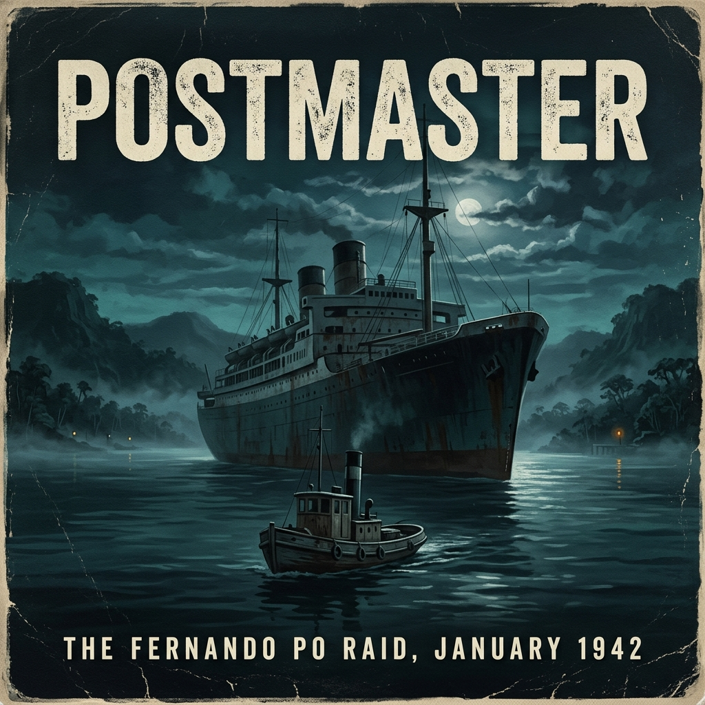

The brass nameplate beside the heavy oak door at 64 Baker Street carried the unrevealing legend: The Inter-Services Research Bureau. To the London cabbies navigating the bomb-pitted tarmac of Marylebone in May 1941, the address was indistinguishable from dozens of other anonymous government departments scattered across the capital.
Behind the blackout curtains, the corridors smelled of wet linoleum, stale Player's Navy Cut, and the chemical tang of mimeograph ink. This was the operational headquarters of the Special Operations Executive, created ten months earlier by war cabinet directive with Hugh Dalton at its head, tasked with coordinating irregular warfare and sabotage outside the standard command structures of the British Armed Forces.
In a high-ceilinged corner office on the second floor, Brigadier Colin McVean Gubbins sat behind a plain utility-issue desk. He was a slight, wiry Scotsman with dark, piercing eyes and a close-cropped mustache, wearing the ribbons of the First World War and the Russian intervention on his khaki tunic. As SOE's Director of Operations and Training, Gubbins had spent months battling the regular service ministries for equipment, men, and operational leeway.
Opposite him sat Captain Gustavus Henry March-Phillipps of the Royal Artillery.
March-Phillipps was thirty-three, lean and angular, with prominent cheekbones and dark hair receding slightly at the temples. Before the war, he had lived an itinerant, self-directed life: an author of sporting novels, an amateur steeplechase rider, and an experienced yachtsman who knew the tidal races of the English Channel. In 1940, he had served in France, experienced the disintegration of the British Expeditionary Force, and returned from the beaches convinced that the continental war could not be won through the ponderous mechanisms of conventional military doctrine.
Between them on the desk lay a thin file bound in grey card. It was a paper March-Phillipps had submitted through unconventional channels proposing the formation of a micro-amphibious raiding unit: a handful of specialized men operating from a small, completely unexceptional civilian vessel.
Gubbins did not open the file. He knew its contents.
"The Admiralty's initial response was predictably uncharitable, Gus," Gubbins said, his voice quiet, clipped, and devoid of military pleasantries. "The Sea Lords regard the idea of an army-crewed wooden boat operating without naval oversight as an amateur nuisance. They are already dealing with four hundred thousand tons of sunk shipping a month in the North Atlantic. They have very little patience for private navies."
"The Sea Lords are fighting a fleet action that doesn't exist," March-Phillipps replied, his tone measured and firm. "Their destroyers cannot enter shallow estuaries, and their corvettes are tied to the slow convoys. Meanwhile, the U-boats are operating with near impunity across the central ocean."
Gubbins reached into his tunic pocket, withdrew a gold-plated case, and offered a cigarette. March-Phillipps declined with a slight movement of his head. Gubbins lit one for himself, the match flame casting sharp shadows across his lean face.
"It is not the Channel I'm considering you for," Gubbins said, exhaling a thin stream of blue smoke. "Not yet."
He turned in his swivel chair and indicated a large Admiralty chart pinned to the wall behind him. It showed the vast expanse of the Atlantic, from the Bay of Biscay down past the bulge of West Africa to the Gulf of Guinea.
"The lifeline is shifting south," Gubbins said. "Everything coming from India, Australia, and the Persian Gulf—all the fuel, all the meat, all the troop transports—is routing around the Cape of Good Hope and coming north past the African coast. If that route is choked, Britain is starved within six months."
He picked up a red pencil and circled the coastline between Dakar and the mouth of the Congo River.
"Over the past ninety days, the Admiralty has intercepted persistent intelligence reports regarding German submarine operations in the South Atlantic. U-boats are striking convoys hundreds of miles further south than their known operational ranges should permit. They are operating in the tropical latitudes without returning to their concrete pens in Lorient or Saint-Nazaire."
March-Phillipps leaned forward, his dark eyes fixed on the chart. "They're refueling."
"That is the Admiralty's nightmare," said Gubbins. "The reports suggest the Germans have established clandestine replenishment points along the West African coast. Isolated river mouths, mangrove creeks, forgotten anchorages in territories controlled by the Vichy French—places where a submarine can tie up against the trees, take on fuel oil, provisions, and fresh water from sympathetic colonial merchants, and slip back out into the shipping lanes unseen."
"And the Navy cannot patrol them?"
"The Royal Navy does not have the bottoms," Gubbins said bluntly. "They cannot spare a single sloop to comb the creeks of French Guinea or the Ivory Coast. Furthermore, if a British warship enters Vichy territorial waters and starts nosing around their rivers, the French coastal batteries will open fire, and Admiral Darlan will use it as an excuse to bring the French fleet in Toulon into the war on the Axis side. The Foreign Office would have apoplexy."
Gubbins tapped the table with his knuckles.
"What the Admiralty cannot do with a cruiser, we must do with a shadow. We need a craft that can sail down the West African coast without drawing a second glance from a passing French patrol plane or a neutral customs officer. Something that looks slow, innocent, and utterly incapable of military action. A vessel that can slide into an uncharted mangrove creek, locate these suspected supply depots or refueling vessels, put men ashore, and destroy them before anyone in Vichy or Berlin realizes what happened."
March-Phillipps absorbed the brief without blinking. "What craft do you have?"
Gubbins opened the grey file and pulled out a small black-and-white photograph clipped to an Admiralty survey sheet.
"Her name is the Maid Honor," Gubbins said. "A sixty-five-foot Brixham sailing trawler. Pitch pine over oak framing. She was built for deep-sea trawling, converted to an auxiliary cruising yacht before the war, and requisitioned by the Ministry of Shipping last year. She is currently lying in Poole Harbour."
March-Phillipps took the photograph. The vessel was broad in the beam, deep-keeled, and rigged as a gaff ketch. She looked archaic, heavy, and completely civilian.
"A sailing ketch," March-Phillipps murmured. "No silhouette to speak of. No engine noise when she's running under canvas."
"She has a crude auxiliary diesel," Gubbins noted, "but she is primarily canvas. That makes her independent of refueling ports for thousands of miles. But you must understand the terms, Gus."
Gubbins's eyes hardened, stripping away any lingering romanticism.
"You will not hold an active military commission during this passage. You will have no uniform, no naval pennant, and no official status. You will operate under civilian mercantile papers issued by the Board of Trade. The unit will be known internally as the Maid Honor Force. If you encounter a German surface raider, or if you run aground in Vichy territory and are captured by colonial troops, the British Government will disown you utterly."
"Complete deniability," March-Phillipps said.
"Absolute," Gubbins replied. "You will be treated as pirates under maritime law, or saboteurs subject to summary execution. The War Office will not intervene. The Foreign Office will issue an immediate statement denying any connection to your vessel. Your base of operations will be Freetown, Sierra Leone, where you will liaise with our West African mission. Beyond that, you are on your own."
March-Phillipps handed the photograph back.
"How many men can I take?"
"No more than ten or twelve in total," Gubbins said. "Specialists. Men who can handle a sailing rig, navigate without coastal beacons, work explosives in the dark, and keep their mouths shut until the war ends. Find them. Bring them to Poole. Get that wooden hull fit for an ocean passage, and report to me when you are ready to put to sea."
March-Phillipps stood, straightened his tunic, and met the Brigadier's stare.
"We'll take the boat to Poole, sir. And we'll find the men."
To assemble a unit that officially did not exist, Gus March-Phillipps could not make use of the standard requisition channels at the War Office. Men selected through normal regimental postings were subject to army paperwork, medical boards, and the scrutiny of clerks who logged transfers in open ledgers.
Instead, he went looking for men already operating on the fringes of the service—soldiers whose civilian backgrounds or individual temperaments had made them awkward fits for the regular establishment, but whose specific talents matched the brutal demands of an unescorted wooden voyage.
His first priority was a navigator who understood marine engineering.
Second Lieutenant John Geoffrey Appleyard of the Royal Engineers was recovering from wounds sustained during the retreat to Dunkirk. At twenty-four, Appleyard had already been awarded the Military Cross for his cool work blowing bridges in the face of advancing German panzers while serving with the 69th Field Company.
Before the war, Appleyard had lived a life defined by physical rigor and scientific discipline. The son of an accomplished Leeds engineer, he had taken a first-class degree in Mechanical Sciences at Caius College, Cambridge, captained the university ski team, and spent his holidays racing small sailing craft through the unpredictable shallows of the North Sea. He possessed an orderly, mathematical mind that regarded operational danger not with bravado, but as a set of mechanical stresses to be calculated and neutralized.
March-Phillipps arranged to meet Appleyard in London at the Junior Army and Navy Club.
Appleyard arrived on crutches, his leg still stiff from shrapnel damage, but his clear grey eyes were sharp. Over a luncheon of austerity cold meat, March-Phillipps laid out the broad parameters of the undertaking: an unarmored civilian sailing craft, several thousand miles of ocean without convoy protection, and an armed reconnaissance mission in tropical estuaries where no British uniform could be worn.
Appleyard listened without interjecting, his fingers absently revolving an empty glass against the linen tablecloth.
"What is the vessel?" Appleyard asked.
"A Brixham ketch," March-Phillipps told him. "Sixty-five tons. Pitch pine on oak. She has a two-stroke auxiliary diesel of uncertain vintage and two masts carrying gaff canvas."
Appleyard's brow furrowed slightly as he ran the numbers in his head. "A sixty-five-foot ketch has an average cruising speed of four to five knots under working canvas. Down the coast of West Africa, against the Portuguese swell and through the Doldrums, you are looking at forty to fifty days at sea. If the auxiliary engine fails, navigation will depend entirely on sight-reductions with a sextant from an unstable deck."
"Can you navigate her?"
Appleyard met March-Phillipps's gaze. "I can navigate anything that floats, Gus. But if the auxiliary diesel is as crude as you say, I will want complete authority over her engine space, and I'll want a proper chronometer and an Admiralty-pattern sextant before we clear the Channel."
"You'll have them," March-Phillipps said.
"Then I'll see the medical board on Friday," Appleyard said calmly, reaching for his crutches. "I'll tell them the leg is healed. Where do I report?"
"Poole," March-Phillipps said. "Bolson's yard."
To balance Appleyard's analytical temperament, March-Phillipps sought a man who could anchor the physical discipline of the small force. He found him in Captain Graham Hayes.
Hayes was a Yorkshireman from the Royal Artillery, a thick-set, square-jawed officer with an athlete's heavy shoulders and an unhurried, measured presence. In civilian life, he had been an amateur rugby player and boxer; in uniform, he had gravitated immediately to the early commando formations. He spoke with a broad, flat northern cadence, rarely volunteered an opinion unless asked, and possessed an immense reserve of raw physical endurance.
They met in the temporary holding depot at Richmond Terrace. March-Phillipps knew Hayes by reputation from the commando holding depots: he was a leader whom men instinctively trusted in close quarters, utterly devoid of nervousness or panic.
"It's irregular work, Graham," March-Phillipps told him plainly, leaning against the damp brickwork of the terrace wall. "No divisional backing. No artillery support. If we get into difficulty, there is no signal to call up the fleet. We solve our own problems or we stay where we fall."
Hayes shifted his weight, his large hands resting easily in his battledress pockets.
"I've had enough of holding depots and spit-and-polish parades, Gus," Hayes said, his expression completely level. "What sort of gear are we carrying?"
"Explosives, mostly. Demolition charges, canvas canoes, and light automatic weapons hidden beneath false bulkheads. We sail under civilian identities."
Hayes nodded once. The absence of uniforms and conventional military safeguards did not seem to trouble him in the slightest.
"When do we leave for Dorset?" he asked.
The third man required for the core cadre came not through standard army channels, but via a confidential assessment report forwarded from the Special Training Schools in the Scottish Highlands.
His name was Anders Frederik Emil Victor Schau Lassen.
Lassen was twenty years old, the son of a Danish landowner. In April 1940, he had been serving as an ordinary seaman aboard the Danish merchant tanker Eleonora Mærsk in the Persian Gulf when the Wehrmacht rolled across the Danish frontier and occupied his homeland. The ship's master had received orders to put into a neutral port; Lassen and several of his fellow seamen had refused, demanding that the ship proceed instead to a British-controlled anchorage to join the Allied war effort.
Arriving in the United Kingdom, Lassen had volunteered immediately for service against Germany. He had been funneled into the Special Operations Executive's training establishment at STS 21, located at Arisaig in Inverness-shire.
At Arisaig, the young Dane had proved an anomaly. The instructors—veteran police officers and intelligence operatives—found him completely impossible to assimilate into conventional espionage tradecraft. Lassen possessed a savage, unyielding contempt for military hierarchy, refused to salute officers he did not respect, and had spent his brief leaves brawling with regular soldiers in the pubs of Fort William. He could not be trained as an undercover agent to blend into occupied European cities; his temper was too volatile, his hatred of the Germans too raw.
However, in the rugged hills of the Highlands, his performance had been devastating. Lassen had grown up hunting game in the forests of Zealand; he was a natural stalker, silent on his feet, deadly with an open blade in close contact, and had spent three years before the mast in the merchant service. He knew the sea with the instinctive familiarity of a career mariner.
The report from Arisaig was blunt: Unsuitable for clandestine placement in urban networks. Highly aggressive, undisciplined in conventional matters, but an exceptional small-boat seaman and an instinctive fighter. Recommended for aggressive amphibious deployment.
March-Phillipps reviewed the file and sent for the Dane.
Lassen entered the requisitioned office in London wearing an ill-fitting army service dress tunic, his blond hair long over his collar in open violation of regulations. His face was weathered by sea air, his nose slightly crooked from old bouts, and his pale blue eyes held a wary, calculating indifference as he appraised the British captain. He did not salute.
March-Phillipps did not demand one. He motioned to a chair.
"You don't care for the army, Lassen," March-Phillipps said.
"The army marches in circles and cleans buttons," Lassen replied, his English accented with the flat, clipped vowels of Denmark. "I did not come to England to clean brass. I came to kill Germans."
March-Phillipps studied him. There was no theatrical swagger in the boy's voice; it was delivered with the cold, matter-of-fact simplicity of an animal that knew what it was bred for.
"Can you handle a gaff rig in an Atlantic gale?" March-Phillipps asked.
A slight, sardonic smile touched Lassen's lips. "I have worked the deck of a three-thousand-ton tanker through winter gales in the North Atlantic, Captain. A gaff rig is a toy for boys. What is the ship?"
"An old Brixham ketch. Sixty-five feet. We are sailing her to West Africa. If we reach the African coast, we will be going into rivers and shallow anchorages at night, without lights, looking for enemy supply ships."
The indifference vanished from Lassen's eyes, replaced by an intense, predatory focus.
"And when we find them?" Lassen asked quietly.
"We board them with cold steel and demolition charges," March-Phillipps said. "No gunfire unless everything goes south. If we are caught, there will be no help from the British government. You will hang as an unauthorized combatant."
Lassen stood up, resting his knuckles on the desk, leaning forward until his face was inches from March-Phillipps's.
"I have two brothers at home living under German occupation," Lassen said, his voice dropping to a harsh whisper. "Give me a bunk on your boat."
By the middle of June 1941, the cadre was formed.
March-Phillipps, Appleyard, Hayes, and Lassen took the train south from Waterloo, traveling through the scorched, bomb-damaged suburbs of South London toward the coast of Dorset. They carried their gear in canvas duffle bags, dressed in civilian tweeds and flannel trousers, appearing to any casual onlooker on the carriage benches as four gentlemen traveling down to the coast for a sailing holiday.
They detrained at Poole. The afternoon air smelled of tidal mud, brine, and pine resin blowing off the heathland.
March-Phillipps led them down through the narrow, cobbled alleys of the old port toward the shipyard of J. Bolson & Son, where the wooden hull that was to carry them across the Atlantic lay waiting in the brown water.
The boatyard of J. Bolson & Son sat tucked away in the sheltered, muddy recesses of Holes Bay, north of the main Poole quays. It was a utilitarian warren of timber slips, saw pits, and corrugated iron sheds smelling of cedar shavings, Stockholm tar, and low-tide mud.
Tied alongside an unpainted wooden jetty, surrounded by the skeletal frames of motor launches undergoing repair for the Admiralty, lay the Maid Honor.
She had been launched in 1919 at Brixham as a commercial sailing trawler under the name Erika. Sixty-five feet in length, with a fifteen-foot beam and drawing nearly ten feet of water aft, she was built with the heavy, unsparing proportions of a craft meant to ride out winter squalls on the Dogger Bank. Her ribs were heavy English oak, her planking three-inch pitch pine, secured with iron dumps and copper through-bolts. In the late 1930s, an eccentric private owner had stripped her fish holds, fitted a crude auxiliary diesel engine, installed a gaff ketch rig, and renamed her.
Now, stripped of her civilian paint and coated in a dull, weathered grey preservative, she looked squat, obsolete, and thoroughly out of place among the speedier grey hulls of wartime Dorset.
Appleyard went straight down into the bilge.
While March-Phillipps and Hayes stood on the jetty discussing security arrangements with the yard foreman, Appleyard dropped through the narrow engine companionway with a grease-gun, a flashlight, and a brass rule. Lassen, entirely unconcerned with paperwork or foremen, swung himself up into the main rigging, testing the tension of the wire shrouds with the palm of his hand, examining the timber cross-trees forty feet above the mud.
It was nearly an hour before Appleyard re-emerged through the low companionway hatch. His tweed jacket was smeared with black graphite, his hands were stained with sour bilge oil, and his hair was powdered with white wood-dust from the stringers.
He hauled himself up onto the timber deck, sat on the cockpit coaming, and began methodically cleaning his hands with an oily rag. March-Phillipps walked over, stepping across the coiled hemp warps.
"Well, Geoffrey?" March-Phillipps asked.
Appleyard looked down at the deck beneath his boots, his face serious.
"Her framing is sound," Appleyard said, his voice measured. "The oak is like iron. There's no dry rot in the garboards, and the stem-post hasn't shifted. She will take any sea the Atlantic throws at her without opening her seams, provided we keep the caulking fresh along the waterline."
"And the machinery?"
Appleyard gave a wry, humorless shake of his head. "The engine is a single-acting two-stroke diesel, direct-injection, of pre-war Scandinavian design. It produces roughly forty horsepower on a good day. The lubricating system relies on a crude crankcase pump that was never designed for continuous running under a heavy angle of heel. If we list more than twenty degrees to leeward, the pump will starve the big-end bearings within forty-eight hours."
"What sort of range does she have under power?"
"We can carry roughly three hundred gallons of diesel in the copper wing-tanks," Appleyard answered, looking up at March-Phillipps. "At three-quarter throttle, she will burn two gallons an hour, which gives us perhaps four hundred and fifty sea miles of powered range under calm conditions. To reach West Africa—even stopping at Madeira—is three thousand nautical miles. That means ninety percent of the passage must be made under canvas alone."
Lassen dropped silently from the main shrouds onto the timber deck beside them, landing lightly on the balls of his feet.
"The masts are good," Lassen said, gesturing upward. "Pitch pine, sound to the trucks. But the standing rigging is slack. The galvanized wire has rusted through the parceling around the dead-eyes. We need to strip the seizing, tar the splices, and set up new lanyards on every shroud before we put canvas on her."
March-Phillipps nodded slowly. "We have four weeks to make her seaworthy and convert her for the work."
Throughout late June and the early weeks of July 1941, Bolson's yard became a closed military enclave under the jurisdiction of SOE.
A armed guard of Royal Marines was placed at the yard gate, while technicians and shipwrights, vetted under the Official Secrets Act, worked beneath tarpaulins draped over the Maid Honor's decks. The objective was absolute: the vessel had to appear as a completely innocuous, somewhat neglected civilian yacht or commercial ketch, while concealing the striking power of an assault craft.
Appleyard spent eighteen hours a day in the engine pit and bilge, supervising the replacement of valves, scraping carbon from the cylinder heads, and installing a secondary manual bilge pump linked to a heavy brass manifold.
Meanwhile, weapons specialists from SOE's Station 17 at Aston House arrived in unmarked lorries with custom-fabricated mountings.
On the foredeck, directly between the windlass and the foremast, shipwrights rebuilt a heavy timber deck-locker. To any boarding party or passing aircraft, the structure appeared to be a standard storage pen for coiled ropes and deck gear. In reality, the timber sides were fitted with counterweighted brass hinge-pins. A single jerk on a concealed wire lanyard released the pins, allowing the timber sides to collapse outward flush with the deck, instantly unmasking a two-pounder naval quick-firing gun mounted on a reinforced steel bedplate bolted directly through the deck beams into the oak floor timbers below.
Along the port and starboard bulwarks, similar concealments were constructed. Sections of the wooden washboards were cut and rehung on heavy brass piano-hinges, masking four spigot mortars—crude, powerful launchers designed to lob heavy anti-personnel bomb-charges onto an enemy deck at ranges of less than fifty yards.
Below decks, the conversion was even more radical.
The original forward fish holds were stripped of their rotten wooden lining and lined with zinc-plated ammunition lockers, fitted with heavy rubber seals to keep out the salt atmosphere. Into these lockers went cases of Nobel 808 plastic explosive, rolls of waterproof cordtex instantaneous detonating fuse, brass delay-action pencil detonators, boxes of .45-caliber ammunition for the unit's Colt automatics and Thompson submachine guns, and racks of specialized fighting knives.
Lashed into the narrow spaces beneath the side stringers were the crated, disassembled components of four two-man collapsible canvas Folbot canoes, designed for silent infiltration through shallow waterways.
A tiny radio cabin was partitioned off aft of the main companionway, hidden behind a false mahogany bulkhead panel. Technicians installed a Type B, Mark II clandestine transmitter and receiver, powered by heavy lead-acid accumulator batteries, capable of transmitting on pre-arranged high-frequency crystals to SOE's receiving station in Oxfordshire.
Yet as the equipment poured into the narrow hull, Appleyard's logbook filled with increasingly alarming calculations.
One evening in mid-July, beneath the flickering glow of an acetylene lamp in the yard office, Appleyard laid his ledger before March-Phillipps.
"We have a displacement problem, Gus," Appleyard said quietly. "A critical one."
Hayes, who had spent the afternoon supervising the stowing of ninety crates of demolition stores, leaned against the draughtsman's desk, wiping grease from his forearms.
"How bad is it, Geoffrey?" Hayes asked.
Appleyard pointed with his pencil to three distinct columns of figures.
"We have loaded four tons of ordnance, ammunition, and explosives," Appleyard explained. "We have three hundred gallons of diesel, fifty gallons of lubricating oil, and six hundred gallons of fresh water stored in iron wing-tanks. To feed twelve men on an ocean passage of forty to fifty days requires another ton and a half of tinned beef, ship's biscuit, flour, and tea."
He looked directly at March-Phillipps.
"The Maid Honor was designed to carry ten tons of iced fish in a wet hold, balanced low in the hull. We are loading her with seven tons of stores distributed throughout the hull and deck. If we put twelve men aboard—along with their kit, bedding, and personal gear—she will be sitting four inches below her design load-waterline."
"What does that mean in an Atlantic seaway?" March-Phillipps asked.
"It means she won't lift," Appleyard said bluntly. "The buoyancy of her bows will be compromised. In a moderate gale in the Bay of Biscay, green water will break straight over her stem-head, swamp the deck lockers, and work into the ammunition holds. Furthermore, twelve men living in a sixty-foot hull in the tropical heat of the equator will exhaust our water supply in twenty-five days. If one man contracts dysentery or enteric fever, the whole unit will be rotting in their bunks before we ever see the coast of Africa."
The room went completely still except for the tapping of rain against the corrugated iron roof.
Hayes broke the silence. "We can't cut down on the explosives, Gus. If we find what we're looking for in those Vichy rivers, we need every pound of 808 to blow their moorings and fuel tanks."
"Nor can we reduce the water," Appleyard added. "Not in the tropics."
March-Phillipps walked to the window, looking out into the gloom where the grey silhouette of the Maid Honor rose and fell gently with the incoming tide.
"Then we do not take twelve men on the boat," March-Phillipps said.
Appleyard looked up from his figures. "How do you mean to divide it?"
"We split the force," March-Phillipps said, turning back to face them. "The Maid Honor will carry only a minimal sailing crew. Five men. No more. Five men can husband water, live largely on deck, and keep the vessel balanced high enough in the water to survive an Atlantic storm."
"And the rest of the unit?" Hayes asked.
"You, Graham, and Geoffrey will take the remainder of the men down on a standard troop transport," March-Phillipps instructed. "The War Office can arrange passage under civilian mercantile identities aboard the Highland Princess, sailing from Liverpool directly to Freetown in a protected convoy. You will arrive weeks ahead of the trawler. You will establish our staging camp, link up with SOE's mission in Sierra Leone, and wait for us in the roadstead."
Appleyard looked down at the ledger, his mind running through the revised logistics.
"Five men to handle a gaff ketch across three thousand miles of ocean," Appleyard said softly. "Who sails with you, Gus?"
"I will command her," March-Phillipps replied. "Lassen will be my second. The boy is worth three regular deckhands in a blow. We'll take Maître Desgranges from the Free French—he knows commercial sailing craft down to the last hemp fiber—and young Buzz Perkins to work the watches and weapons. And one mechanic to keep that wretched engine from burning itself out."
He placed his hand flat on the ledger, sealing the decision.
"Twelve men would drown her, Geoffrey. Five men will sail her. Have the transport party's papers drawn up by Monday. We put to sea at the beginning of August."
The iron gate of the anti-submarine boom at South Deep swung open with a screech of rusted pivots, and the Maid Honor glided through into the open fairway of Poole Bay.
It was shortly after seven bells on the morning of Saturday, 9 August 1941. The sun was an orange disc half-strangled by the coal smoke of the Bournemouth shore batteries and the persistent mist that clung to the chalk ramparts of Studland. A solitary naval patrol launch bobbed in the chop off Old Harry Rocks, its Lewis gun trained casually on the ketch's waterline while a sub-lieutenant with a loud-hailer checked their civilian registration against his board. Gus March-Phillipps stood by the oak wheel-box, wearing a threadbare turtleneck jersey, canvas trousers, and grease-spotted plimsolls, holding the ship's clearance manifest aloft in his left hand.
The sub-lieutenant waved them on with an indifferent flick of his wrist. The patrol boat surged away in a froth of white water, its exhaust popping flatly against the chalk cliffs, leaving the sixty-five-foot fishing smack entirely to her own devices.
March-Phillipps did not look back. He kept the vessel's head bearing south-southeast, picking up the buoyed channel that cleared the Shingles and the southwest tip of the Isle of Wight.
Beside him in the narrow, open cockpit, Anders Lassen was stripping the canvas ties from the coiled halyards on the mainmast fife-rail. The young Dane moved with an unhurried, rhythmic economy of effort, barefoot despite the morning chill, his pale hair damp with salt-mist. On the foredeck, Maître André Desgranges—the veteran Free French quartermaster whose face had been cured into walnut leather by fifteen years in the North Atlantic cod fisheries—was overhauling the sheets and checking the lashings of the heavy wooden water casks wedged into the scuppers.
Forward of the mast, Private Frank Perkins, barely eighteen years of age, sat on the false timber coaming of the deck locker that concealed the two-pounder gun, methodically rubbing tallow into the leather covers of the spare blocks. Down in the darkness of the engine pit, their mechanic was nursing the two-stroke auxiliary diesel, a crude, clattering lump of machinery that rattled the floorboards under March-Phillipps's soles with an irregular, asthmatic vibration.
Appleyard and Hayes were already four days out from Liverpool on the troopship Highland Princess, lost among three thousand men under the anonymity of standard issue battle-dress and commercial clerk aliases. The Maid Honor carried only five men, a mountain of high explosive, and the immense, silent weight of the open Atlantic.
By midday, the high bluffs of Dorset had sunk beneath the grey swell. The breeze, which had held light from the northeast since dawn, faltered and died out completely as they cleared Portland Bill.
The Channel turned into a broad plate of stagnant, olive-tinted lead. Without a puff of wind to steady the gaff sails, the Maid Honor took up a sickening, corkscrewing roll in the beam swell that ran up from the Atlantic. With every roll, the heavy wooden booms swung across the deck, their timber jaws complaining against the leather chafing-gear on the masts, while the auxiliary diesel chugged on in the damp belly of the ship, filling the companionway with the foul, oily stench of unburnt vapor.
March-Phillipps checked the compass bowl in its brass binnacle every few minutes, correcting for the persistent southward pull of the tide.
"How much speed is she giving us, Gus?" Lassen asked, coming aft and leaning against the mizzen shrouds.
"Three knots. Perhaps three and a half with the flood," March-Phillipps replied, his gaze fixed on the southern horizon where the sky and water merged in an unbroken wall of haze. "At this rate, it will take us four days just to sight Ushant."
"The wind will come," Lassen said, wetting a scarred forefinger and holding it up to the stagnant air. "From the west. When the sun goes down, the swell will lift."
The Dane was right, but the wind did not bring relief. It brought a gale.
They crossed the hundred-fathom line—the edge of the European continental shelf where the Atlantic ocean floor plummets from shallow coastal waters into four thousand feet of abyss—shortly before midnight on the third day out.
The shift was instantaneous. The gentle, undulating swell that had lifted the trawler across the Western Approaches sharpened into towering, grey-backed rollers that came marching out of the southwest in relentless succession. The wind rose through the rigging from a dry hum to a shrill, vibrating shriek that tore the white crests off the seas and flung them across the decks in sheets of driving spray.
A Brixham trawler of sixty-five tons was built to live through any storm that ever blew across the North Sea, but only when handled under her own working conditions—light, buoyant, riding high upon the water with an empty hold, or heaved-to behind a sea-anchor while her crew slept off their watches.
The Maid Honor was not a light ship.
In her hold lay four tons of plastic explosive, cases of primers, crates of folding canvas canoes, drums of auxiliary kerosene, and iron tanks holding six hundred gallons of drinking water. Her deck was weighed down by spare timber, sea casks, and the steel framing of her concealed weapons. Instead of rising to the seas, the ketch remained obstinately low in the trough.
At two o'clock in the morning, the first heavy Atlantic sea climbed over the port bow.
There was a sound like the detonation of an aerial bomb as twenty tons of solid green water dropped squarely onto the foredeck. The timber bowsprit flexed, groaning aloud in its iron gammoning at the stem-head, and the ship shuddered to a dead halt, her timbers vibrating so violently that March-Phillipps had to clamp his hands to the oak wheel to keep his feet.
Below decks, the crash threw Perkins out of his bunk against the bulkhead, sending an avalanche of biscuit tins, wet blankets, and loose boots sloshing through six inches of black water that had already collected over the cabin deck-timbers.
March-Phillipps threw open the companionway slide, spitting salt water from his mouth.
"André! Lassen!" he shouted into the dark. "Get the main canvas off her! We take in the gaff now, before she tears the mast out by the heel!"
Lassen and Desgranges tumbled up the ladder into the howling gale, fighting their way forward through water that was rushing knee-deep through the scuppers. The ship was heeled over forty degrees to starboard, her leeward rail completely buried in white froth.
The work on the pitching deck was a brutal, bone-cracking labor. The heavy canvas of the gaff mainsail, soaked through with salt water, had stiffened into the consistency of sheet iron. The throat and peak halyards, swollen with brine, jammed in their wooden blocks twenty feet above the deck.
Lassen hauled himself up the weather shrouds with his bare feet locked into the ratlines, working his way into the howling darkness. Hanging outward over the boiling sea with nothing beneath him but sixty feet of foam, he used his sheath knife to clear the jammed peak-line, yelling down curses that were ripped from his lips by the wind before they could reach the deck.
On the foredeck, March-Phillipps and Desgranges hauled together on the downhauls, fighting the wildly thrashing boom. The timber spar, twenty-six feet of solid pitch pine, plunged and swung like a battering ram as the ship fell into the trough of each succeeding wave. Desgranges threw his thick body across the boom, wrapping his arms around the wet canvas while March-Phillipps passed the hemp gaskets under the spar, binding the sail down inch by stubborn inch until the wild threshing was subdued.
When they finally staggered back to the cockpit, their hands were skinned raw, their fingernails split to the quick, and their clothes sodden with freezing water.
Then, from the depths of the lower hull, came the smell.
It was not the smell of the bilge, but the hot, sickening stench of burning lubricating oil and scorched iron.
The mechanic scrambled up the ladder, his face white beneath a thick smear of soot, coughing violently.
"The crankcase, sir!" the man gasped, wiping his eyes with a sodden sleeve. "She's running dry! The list is so steep the oil pump isn't picking up from the sump. She's chewing her bearings to powder!"
March-Phillipps forced his way down through the engine hatch into the suffocating pit. The tiny space was a furnace of foul air. The two-stroke diesel was shrieking—a dry, metallic hammering that drowned out even the roar of the gale outside. The iron casing of the forward cylinder was already smoking, the paint blistering away in large, bubbling scabs.
March-Phillipps reached past the flywheel, his knuckles grazing the scorching cylinder block, and hauled the fuel cut-off lever hard back.
The engine coughed once, spat a thick plume of black, greasy soot through the exhaust valve that coated the bulkhead, and died with a heavy, final clatter of seizing pistons.
The silence that followed inside the hull was terrifying. The rhythmic throb that had accompanied them from Dorset was gone. There was only the immense, hollow boom of the sea striking the wooden planks outside the timber frames, and the groaning of the oak ribs under the pressure of the Atlantic.
March-Phillipps pulled himself back to the deck.
"The engine is seized," he told Lassen flatly. "The bearings are gone."
Lassen, braced against the oak tiller with his shoulders hunched against the spray, did not look surprised. He spat into the leeward foam.
"Good," the Dane said calmly. "The noise was giving me a headache. Now she is a real boat."
"We have twelve hundred miles of open ocean between here and Madeira, Anders," March-Phillipps said, his voice hard. "And we are sitting directly in the shipping lanes without steerage way."
"Then we set the storm jib and three reefs in the mizzen," Lassen replied, his pale eyes narrowing as he watched a great, grey sea rise against the port quarter. "She will steer. She is an old Brixham boat, Gus. She has seen worse weather than this before you and I were born."
For the next four days and four nights, the Maid Honor fought for every mile across the Biscay basin.
The storm did not relent. It shifted between southwest and west-northwest, keeping them pinned against the eastern rim of the Bay where the seas were shortest and most violent. Sleep became an abstraction. The watch was set at two hours on and two hours off, but no man truly rested.
Below decks, the motion was violent enough to tear a man out of his bunk if he did not wedge himself in with spare sea-boots and canvas bags. The oak frames of the hull worked constantly against the fastenings as the ship climbed the crests and plummeted into the voids behind them, weeping water through every seam.
The hand-bilge pump—a mechanical pump mounted on the cockpit deck—had to be manned without pause. Perkins and Desgranges took turns on the iron handle, their shoulders burning as they pumped four hundred strokes every hour to keep the water from rising into the ammunition cases stowed in the lower hold. The discharge water came out black, foul-smelling, and thick with sawdust and creosote, washing across the deck and swirling down the scuppers into the sea.
Cooking was out of the question. The tiny charcoal stove in the forward galley had been smashed loose during the second night of the blow, its flue pipe bent double. They lived on cold, jellied corned beef dug out of tins with their knives, rock-hard ship's biscuits that had to be soaked in cold tea to be chewed, and a dram of navy rum issued by March-Phillipps at midnight to keep the shivering from turning into convulsions.
Salt-water boils erupted on their wrists and forearms where the wet cuffs of their oilskins sawed against their skin with every movement of the oars and lines. Their lips cracked and bled from the constant brine, and their eyes were swollen red from the unbroken sting of the wind.
Yet, through the sheer, stubborn seamanship of Desgranges and the iron nerve of Lassen, the wooden ship stayed afloat.
Lassen seemed immune to the misery. When his watch was ended, he refused to go below into the foul, stifling cabin. Instead, he wedged himself beneath the cockpit coaming with a wet canvas sail-bag pulled over his shoulders, sleeping with the dead, tranquil stillness of a wolf in a den, waking instantly the moment the motion of the ship altered by a fraction.
On the fifth morning, the wind began to haul into the northwest.
The screaming in the standing rigging dropped to a steady, hollow whistle. The grey, suffocating ceiling of cloud that had shrouded the ocean since they left the English Channel began to crack, revealing pale, watery streaks of blue sky between the flying scud.
The rollers remained vast—long, oceanic swells that lifted the little ketch twenty feet into the air and set her down with a slow, majestic ease—but the breaking crests were gone.
March-Phillipps stood by the starboard shrouds, his beard ragged, his face lined with grey exhaustion, watching the bow of the Maid Honor cut through the blue-black water. The ketch was making five knots now under her storm canvas, her sails dry for the first time in five days, her wake trailing straight and true behind her toward the southern horizon.
Lassen came up the ladder, carrying a tin pannikin of water that had been boiled over a makeshift spirit burner. He handed it to March-Phillipps without a word.
March-Phillipps took the tin, his hand shaking slightly from the days at the wheel. He looked at the Dane, then out across the unbroken circle of the southern sea.
"The Bay is behind us," March-Phillipps said quietly.
"Yes," Lassen said, leaning his elbows on the rail and turning his face toward the weak, emerging sun. "Now we find the sun. And we see if the Spaniards in the Canaries are looking for us."
On the fourteenth day out from Poole, the jagged volcanic silhouette of Madeira broke through the southern horizon, its basalt peaks cutting the trade-wind haze four thousand feet above the sea.
To the five men aboard the Maid Honor, the island seemed an impossible apparition. After two weeks of relentless grey swells, the bitter damp of the Biscay basin, and the sour stench of stagnant bilges, the sudden explosion of subtropical green—terraced vineyards clinging to precipitous red-clay cliffs, clusters of whitewashed quintas, and the purple wash of bougainvillea tumbling toward the water—carried the heavy, sweet scent of moist earth miles out to sea.
Yet the volcanic crags of Funchal offered no genuine safety. Portugal under the authoritarian regime of António de Oliveira Salazar was strictly neutral, but neutral soil in 1941 was a battleground of shadows.
Funchal was an open listening post for the warring powers. In the tiered town rising from the bay, the German and Italian consulates kept a permanent, well-funded vigil over the roadstead. Informants on the harbor moles tracked every collier, cargo tramp, and visiting craft that rounded Ponta de São Lourenço, noting tonnages, draft, and registry to cable back to the Abwehr and the Italian naval ministry.
March-Phillipps stood at the helm, his skin burnt dark by the sudden sun, his eyes red-rimmed from salt glare. The Maid Honor was creeping in under bare poles and her small jib, carrying just enough steerage-way to stem the coastal current.
"Lassen," March-Phillipps called, keeping his voice low. "Get the main halyards coiled. Look like an ordinary yacht crew that doesn't know a dead-eye from a bollard. Slouch. Look tired. Goodness knows we shouldn't have to act the part."
Lassen, stripped to the waist, his shoulders patterned with peeling sunburn and scabbed line-burns, leaned carelessly against the mainmast, letting a halyard trail over the bulwark with calculated slovenliness. On the foredeck, Desgranges and young Perkins sat on the timber casing of the two-pounder gun, dangling their bare feet over the coaming as though it were nothing more than a sunbathing bench.
The ketch drifted past the stone mole into the open roadstead, her pitch-pine planking salt-bleached and streaked with rust from the chain-plates.
The anchorage was deep, plunging steeply into volcanic rock. March-Phillipps brought her head into the wind three cable-lengths off the town quay. Lassen tripped the windlass brake, and fifteen fathoms of iron chain roared through the hawsepipe, shattering the midday quiet of the harbor before the bower anchor bit into the black volcanic sand.
The echo of the anchor chain had barely died across the water before a diesel launch, flying the red-and-green ensign of the Portuguese Republic, pushed off from the stone steps of the Pontinha pier.
Aboard were three men: two maritime police armed with holstered Mauser pistols and a customs official in a crumpled white drill suit, clutching a leather-bound folio.
March-Phillipps turned to Perkins without shifting his posture at the wheel.
"Buzz. Down below. If they ask for the forward hold, tell them the hatch is jammed by shifted cargo. Under no circumstances is anyone to touch the false bulkhead aft."
Perkins slipped down the companionway like an eel.
The launch drifted alongside, its rope fenders squealing against the Maid Honor's wet rub-rails. The Portuguese official stepped onto the timber deck, his dark eyes scanning the ketch with the slow, skeptical appraisal common to tropical port authorities who had seen every form of contraband known to maritime trade.
"Bom dia, Capitão," the official said, speaking English with the formal precision of a Lisbon clerk. "Your vessel's clearance papers, if you please."
March-Phillipps handed him the folder containing their Board of Trade registration. The documents identified the Maid Honor as a private pleasure yacht, registered to a civilian owner in London, on passage to British West Africa on commercial transfer.
The official adjusted his spectacles and studied the stamps. He glanced at the salt-encrusted deck, the frayed rope ends, and the scorched, soot-blackened timber around the engine exhaust outlet near the waterline.
"A yacht," the official murmured, his tone dry as pumice. "You sail a yacht through the Biscay gales in August, Senhor?"
"Our auxiliary engine broke down four days out from England," March-Phillipps replied, his voice adopting the clipped, slightly weary tone of an English gentleman traveler accustomed to inconvenience. "The bearings seized. We were forced to run before the blow under canvas."
The official walked slowly toward the engine hatch, his leather shoes clicking against the oak deck planks. He stopped directly beside the forward deck-box. To his right, less than twelve inches from his hand, was the concealed trip-pin that held the timber sides of the two-pounder mount.
Lassen was standing four paces away, leaning against the shrouds, paring his thumbnail with a bone-handled clasp knife. The Dane did not look at the official, but his weight was balanced lightly on the balls of his bare feet, his knees loose, his eyes fixed on the man's white linen jacket.
The official peered down through the open hatch into the engine space.
The heat radiating from the iron hull was suffocating. In the gloomy pit below, the seized two-stroke diesel sat caked in black oil and scorched paint. The sour smell of burnt lubricating fluid, stale bilge water, and damp clothing was thick enough to turn a man's stomach.
The official pulled a silk handkerchief from his breast pocket and pressed it to his nose, stepping back with an expression of acute distaste.
"You require repairs?" the official asked.
"Only water, fresh provisions, and permission to examine the crankcase," March-Phillipps said. "We do not intend to land any cargo. We have none to land."
The official glanced once more at Lassen, whose knife blade shaved off a thin sliver of horn with a dry, scraping sound, then back at the haggard face of the British captain. In the eyes of the Portuguese colonial service, this was simply another pair of mad, impoverished Englishmen courting their own deaths in an unseaworthy boat.
The official produced a brass stamp, inked it from a pocket pad, and brought it down on the manifest with a heavy thud.
"Under the maritime law of the Republic, you are permitted seventy-two hours in the roadstead for emergency replenishment," the official announced formally. "You are not permitted to come alongside the inner quay. No crew member may go ashore after the sundown curfew. If your repairs require the use of a slipway, you must apply to the Captain of the Port for formal quarantine clearance."
"Understood," March-Phillipps said. "We will remain at anchor."
As the launch chugged back toward the mole, the true danger revealed itself.
On the terrace of the Reid's Palace Hotel, high on the cliffs above the western edge of the bay, the late-afternoon sun flashed against the glass of high-powered binoculars.
March-Phillipps watched the glint through his own glass. A man in a dark civilian suit was standing by the stone balustrade, an open notebook resting on the wall beside him, systematically observing every foot of the Maid Honor's deck.
"German consulate," March-Phillipps murmured to Lassen, who had come aft to clear the sheets. "They are logging the rig and the draft."
"Let them look," Lassen spat, leaning over the rail. "They see an old wooden tub that cannot move without the wind. They are looking for corvettes, not fishing smacks."
"They are looking for anything British," March-Phillipps said coldly. "We cannot afford a slipway. If we put this hull on the slips to pull the propeller shaft, the port engineers will see the reinforced timber beds under the gun mounts within five minutes. We stay in the water."
At dusk, contact was made through the British Consulate.
A small wooden dinghy, rowed by an elderly Portuguese boatman who asked no questions, slipped out from the shadow of the commercial coal wharves. It carried an SOE field operative attached to the consular staff, dressed in the faded denims of a harbor ship-chandler.
While Desgranges and Perkins kept watch on the darkened deck, March-Phillipps, Lassen, and the operative dropped into the stifling gloom of the engine hold.
The operative brought an electric hand-lamp, shielding its beam with a circle of brown card. He knelt beside the Maid Honor's mechanic, who had already stripped the forward inspection plates from the crankcase.
The damage was fatal to any hope of swift mechanical propulsion.
The white-metal lining of the forward connecting-rod bearing had melted under the intense heat of the Biscay list, smearing itself across the crankpin like silver solder. The steel of the pin was scored with deep, circular grooves that caught the edge of a thumbnail.
"I can take the bearing ashore and pour new babbit metal," the operative whispered, the sweat dripping from the tip of his nose onto the cold iron of the casing. "I have an engineer in a workshop near the custom house who asks no questions for British gold. But I cannot turn the crankpin true without pulling the crankshaft out of the bedplates."
March-Phillipps wiped his forehead with the back of his hand. "How long to pull the shaft?"
"A week. Ten days. You would need the sheer-legs from the coaling quay to lift the engine block."
"Impossible," March-Phillipps said without hesitation. "The Portuguese will intern us if we exceed seventy-two hours, and the Germans on the cliff will have our complete layout cabled to Lisbon by tomorrow night."
He looked at the mechanic. "Can you patch it?"
The mechanic, a man whose hands were stained permanently black with grease, squinted at the scored metal.
"I can scrape the new bearing to fit the rough pin by hand, Captain," the mechanic said slowly. "It will turn over. It will give you steerage-way to get in and out of an anchorage in dead water. But if you run it at full throttle for more than two hours at a stretch, the friction will melt the white metal again. She'll seize solid, and next time she'll throw a rod through the crankcase."
March-Phillipps made his calculation. They had no choice.
"Scrape it," March-Phillipps said. "Get the bearing poured, scrape it by hand, and bolt the casing back together. We rely on the sails."
For the next forty-eight hours, the Maid Honor existed in a state of suspended siege.
While the mechanic labored in the suffocating heat of the hold with bearing scrapers and emery cloth, Desgranges and Perkins received the provisions arranged by the consulate under the guise of private ship stores: casks of sweet mountain water rowed out in water lighters, sacks of yellow corn flour, hard salt beef, strings of purple garlic, crates of Madeira onions, and baskets of thick-skinned oranges to ward off the early signs of scurvy.
Every line, every shroud, every block was overhauled by hand. Lassen worked with a marlinspike and serving mallet, replacing the frayed wire seizings on the forestay, his movements deliberate, silent, and unending.
By the afternoon of 27 August, their seventy-two hours of neutral grace had expired.
The auxiliary engine had been bolted together, its sump filled with fresh, heavy castor oil. It had been started once, turning over with a dull, uneven clatter that sent a tremor through the hull, before being immediately shut down to conserve the bearings.
The wind had hauled into the north-northeast—the trade wind, steady, dry, and clean, blowing straight from Europe toward the equator.
At ten o'clock that night, under a moonless sky thick with stars, March-Phillipps gave the order.
There was no sound of an engine, no clinking of windlass pawls. Working in utter silence with greased blocks, Lassen and Desgranges hoisted the gaff mainsail and the mizzen. The canvas flapped once with a hollow thump in the darkness, then filled as the offshore mountain breeze caught the high head of the sails.
Lassen slipped the anchor cable at the fifteen-fathom link, buoying the end with a small cork fender so it could be retrieved if they were ever forced to return.
The Maid Honor leaned gently to port, her oak frames easing into the black water. Without a single light showing from her deck or stern, she slid past the sleeping coal tramps, rounded the dark mass of the Pontinha mole, and picked up the vast, long swell of the open Atlantic.
Aft, March-Phillipps stood at the tiller, watching the lights of Funchal slowly sink into the black wall of the mountain behind them.
Ahead lay eighteen hundred nautical miles of ocean: the Spanish waters of the Canaries, the Tropic of Cancer, and the suffocating heat of the equatorial Doldrums, where the trade winds would die and leave five men alone on a wooden deck beneath a blinding sun.
South of the Canaries, the trade winds died.
For five days after clearing Madeira, the Maid Honor had driven south-southwest with the northeast trades on her port quarter, logging six knots under full canvas. March-Phillipps had kept the vessel well to the westward, leaving Tenerife and Gran Canaria eighty miles to the east to avoid the reconnaissance sweeps of Spanish Dornier flying boats operating out of Las Palmas.
Then, two degrees north of the Tropic of Cancer, the wind began to falter.
The steady, cool airflow that had carried them out of temperate latitudes softened, shifted erratically into the southeast, and then collapsed entirely. The Atlantic flattened out into a vast, undulating sheet of quicksilver, unbroken by a single whitecap.
They had entered the Intertropical Convergence Zone—the Doldrums.
The heat became an active, crushing physical presence. By nine o'clock in the morning, the iron fittings on the mast and the brass rim of the binnacle were too hot to touch with bare skin. The black pitch in the deck seams softened into a bubbling, tarry gum that stuck to the soles of their plimsolls and stained their canvas trousers. Below decks, the cabin was an unventilated furnace, radiating the stagnant stench of wet timber, bilge water, and hot castor oil from the silent engine.
The patched auxiliary diesel remained bolted into its bedplates, cold and still. The mechanic, Leonard Guise, checked the crankcase levels twice a day, but March-Phillipps kept the fuel cocks shut. The scored crankpin was their only reserve; to run the machinery in this stagnant heat, pushing sixty-five tons of dead weight against the equatorial current, would melt the newly poured babbit metal within three hours.
They were becalmed.
The heavy gaff mainsail hung slack from its gaff, slatting violently from side to side as the ketch rolled in the dead ocean swell. With every roll, the heavy wooden boom jerked against its mainsheet blocks with a dull, shuddering thump that jarred the vessel from stem to stern, chafing the canvas against the wire shrouds.
"Get the canvas down," March-Phillipps ordered from the cockpit, his voice hoarse from dry air and salt. "If we leave the sails up to slat in this swell, we'll chafe the cloths to ribbons before we ever sight Sierra Leone."
Lassen and Desgranges lowered the gaff mainsail, hauling the sodden, sun-baked canvas down onto the boom crutch and lashing it tight with stops. The Maid Honor lay under bare poles, an isolated speck of grey timber drifting on three thousand fathoms of dead blue water.
The days dissolved into an unbroken test of physical endurance and discipline.
March-Phillipps refused to allow the five men to sink into the torpor of the tropics. Every morning at six, before the sun rose high enough to blister skin, he ran a rigorous, uncompromising shipboard routine.
First came the physical conditioning. On the cramped, pitching deck—surrounded by lashed timber crates, water casks, and the concealed gun housings—March-Phillipps, Lassen, Desgranges, Perkins, and Guise worked through calisthenics, deep knee-bends, and push-ups until their skin ran with sweat.
Next came the weapons. Salt air, intense humidity, and condensation in the lower holds were the mortal enemies of their ordnance.
Every morning, the forward hatch was unbattened. Buzz Perkins hauled up the canvas bags containing their personal weapons: government-issue Colt .45 automatics, Thompson submachine guns packed in heavy cosmoline, and Fairbairn-Sykes fighting knives in leather scabbards.
Sitting cross-legged on the boiling deck timbers, Perkins and Lassen stripped every weapon down to its pins and springs. They wiped away the creeping red rust with paraffin rags, oiled the extractors, cleaned the heavy .45-caliber magazines, and inspected every round of ammunition for green verdigris on the brass casings.
Lassen handled the weapons with the casual, instinctive familiarity of a butcher working his knives. While Perkins methodically laid out the Tommy-gun bolts on an oily canvas tarp, Lassen sat against the samson post with a carborundum stone, honing the blackened steel of his fighting knife until the double-edged blade could split a floating wood chip dropped from the rail.
"A dull knife makes you hesitate, Buzz," Lassen remarked in his flat Danish cadence, his thumb testing the wire edge of the blade. "In the dark, if you have to cut a sentry on a deck, you only get one stroke. If the blade drags on his coat, he shouts. If he shouts, the guns on the shore wake up."
Perkins, barely eighteen and with the pale skin of an English farm hand now burnt raw by the tropical sun, paused with a Thompson bolt in his hand, listening intently.
"You ever have to do it, Anders?" Perkins asked quietly. "With a blade?"
Lassen's pale blue eyes flicked up, cold and unblinking beneath the bleached fringe of his hair.
"You don't think about it before, Buzz," Lassen said softly, turning the hone against the steel. "And you don't talk about it after. You just drive the point behind the collarbone and pull down. Now clean that firing pin. If the primer doesn't strike, the knife is all you have left."
By the second week of September, the physical deterioration of the crew became acute.
Fresh water was rationed to three pints per man per day, measured out by March-Phillipps with an aluminum pannikin from the sealed iron wing-tanks. The water had turned warm, flat, and tasted foully of iron rust and zinc preservative.
Salt-water boils—vicious, red carbuncles caused by constant immersion in brine and chafing clothes—broke out across their thighs, buttocks, and armpits. Every movement was an agony of rubbing canvas against infected skin. Prickly heat covered their backs in angry, needle-like rashes.
Worse than the boils was the food. The fresh provisions taken aboard at Madeira were long gone. The oranges had rotted in the damp heat of the forward hold, collapsing into green fur; the fresh beef had soured within forty-eight hours of clearing Funchal.
They lived on dry ship's biscuit, infested with brown weevils that had to be tapped out against the table before eating, and tinned corned beef that had turned to warm, oily jelly in the can.
At noon each day, March-Phillipps climbed onto the cabin trunk with Appleyard's Admiralty-pattern sextant. He brought the blinding white disc of the sun down to the hazy line of the horizon, his hand trembling slightly with fatigue, noting the angle on the brass vernier.
Below, at the tiny cabin table, he worked out the sight-reduction tables by the light of a smoking tallow candle.
The results were maddening.
The Maid Honor was not moving south. Caught in the wide, clockwise sweep of the Guinea Current, the sixty-five-ton ketch was being carried slowly east, toward the baking, fever-ridden coast of French West Africa. In seventy-two hours of dead calm, they had drifted thirty miles toward the Vichy-controlled shores of Senegal.
On the fourteenth of September, the barometer dropped precipitously.
The sky, which had been a dome of bleached, unblinking white brass for a week, turned a bruised, sickly violet to the south-southeast. High above the horizon, towering anvils of cumulonimbus clouds climbed thirty thousand feet into the stratosphere, their dark bases flickering with continuous, silent sheet lightning.
Lassen was at the rail, sniffing the sudden change in the atmosphere. The stagnant, oil-scented heat was suddenly cut by a sharp draft of ozone and damp air.
"Tornado," Lassen said, pointing a scarred arm toward the rising cloud wall.
In the Gulf of Guinea, the violent tropical squalls off the African landmass were known universally to seamen as tornadoes—sudden, ferocious blasts of wind and deluge that could strike without warning, blow with the force of a hurricane for an hour, and leave a vessel dismasted or swamped before vanishing back into dead calm.
March-Phillipps scrambled to the foredeck.
"André! Buzz! Get the sail-cloth out!" March-Phillipps shouted. "All the canvas tubs on deck! Check the lashings on the booms!"
They did not raise the working sails. To expose their patched gaff mainsail to the initial strike of a West African line squall would be suicide. Instead, they rigged heavy canvas awnings between the main and mizzen rigging, lashing the corners down to the scupper pipes and running hemp lines through the grommets to guide the catchment into their empty water casks.
The squall hit them like a physical hammer.
The sea did not have time to rise in waves; the first blast of fifty-knot wind flattened the water into a sheet of whistling white spray. The Maid Honor was knocked on her beam-ends, her starboard gunwale plunging under the boiling foam until the sea poured across the deck lockers.
Then came the deluge.
It was not rain as they had known it in England. It was a solid, deafening cataract of warm, sweet fresh water that fell in vertical sheets, drowning out the roar of the wind, reducing visibility to five paces.
On the open deck, naked to the waist, the five men worked like madmen in the torrent.
Lassen and Desgranges stood in the downpour, guiding the swollen bellies of the canvas awnings over the open bungs of the iron tanks. Perkins and Guise hauled buckets of cold rainwater across the slick planks, dumping the precious liquid into the water lighters until every iron tank, wooden breaker, and copper kettle on board was brim-full.
They stood in the torrent, scrubbing the grease, salt crust, and sweat from their raw skin, tilting their heads back to let the cold freshwater wash into their mouths and eyes.
For forty-five minutes, the squall raged over the wooden hull, screaming through the bare wire rigging, washing the deck seams clean of black pitch.
And then, as abruptly as it had arrived, the squall drove away to the west.
The wind died back to a gentle, steady southwesterly breeze. The clouds tore apart, leaving the sky clean and washed of dust. The Maid Honor rode easily on a dark blue sea, her tanks brimming with five hundred gallons of fresh water, her bilges pumped dry.
March-Phillipps hauled himself up to the cockpit, his hair plastered flat against his forehead, and looked out over the sparkling expanse of the southern ocean.
"André," March-Phillipps said, a fierce, quiet intensity in his voice. "Get the main hoisted. Staysail and jib. Anders, take the helm."
Lassen grasped the oak spokes of the wheel, his white teeth flashing against his sun-blackened face as he hauled the tiller to windward.
The heavy gaff canvas rose up the pitch-pine mast, filled with the fresh southwest breeze, and hardened like an iron shield. The wooden hull leaned over, her stem cutting into the swell with a clean, rhythmic hiss of foam.
March-Phillipps checked the binnacle. Course: south-southeast.
They were through the worst of the Doldrums. Four hundred miles to the south lay the British anchorage of Freetown.
The smell of Africa reached the Maid Honor forty miles before the land was visible.
It came off the eastern horizon on the midnight land breeze—a thick, heavy exhalation of damp red earth, woodsmoke from native charcoal pits, rotting mangrove swamp, and the sweet, cloying reek of decomposing vegetation. To men whose nostrils had known only the sterile, biting salt of the open Atlantic for six weeks, the smell was almost suffocating in its density.
At dawn on 21 September 1941, the low, mist-shrouded ridge of the Sierra Leone peninsula materialized out of the grey haze.
The mountains—the Loma, which had given the colony its Portuguese name of Lioness Mountain—rose dark and jagged against a sky the color of tarnished pewter. Below them lay the broad, muddy maw of the Sierra Leone River, opening out into one of the largest natural deep-water anchorages in the world.
March-Phillipps was at the wheel. Over forty-three days at sea, the thirty-three-year-old captain had lost nearly two stone. His cheekbones jutted like knife edges beneath skin blackened by sun and scored by salt boils; his beard was a tangled thicket of black wire; and his canvas trousers were held up by a piece of tarred cod-line.
Beside him, Lassen stood by the mainmast shrouds, barefoot, lean as a whippet, scanning the roadstead through a pair of rusted naval binoculars.
The harbor of Freetown was an astonishing, chaotic spectacle of imperial naval logistics.
Lying in the brown, turgid waters of the estuary were nearly eighty merchant vessels: rusted British coal tramps, Dutch oil tankers, refrigerated meat ships from the River Plate, and Greek cargo coasters, all swung to the ebb tide, waiting for their escort corvettes to assemble the slow home-bound convoys for the Western Approaches. Cruisers and armed merchantmen lay moored in the deep-water channels, their dazzle-paint patterns streaked with yellow river silt, while naval launches and native bumboats skimmed across the muddy water between the hulls.
As the battered wooden ketch slipped past the examination battery on Aberdeen Hill, an Aldis lamp on the signal station began to blink violently, demanding their recognition numbers.
March-Phillipps had no naval pennant, no secret recognition signals of the day, and no code-book. He reached beneath the wheel-box, pulled out their commercial Board of Trade clearance papers, and held them flat against his chest while Desgranges hauled the red ensign—ragged, salt-bleached, and frayed to strings at the fly—up to the mizzen peak.
A naval harbor defense launch, mounting a single Vickers gun on its foredeck, cut across their bow in a surge of yellow foam. A young Royal Navy lieutenant on the bridge wing lowered his binoculars, staring in utter disbelief at the apparition before him.
The Maid Honor looked like a ghost ship. Her sails were grey, patched with unbleached canvas and greasy twine; her pitch-pine sides were caked in brine and green weed; her deck was a cluttered ruin of lashed water casks, oil drums, and canvas covers. And her crew consisted of five ragged, half-naked men who looked more like shipwrecked vagrants than any unit belonging to His Majesty's armed forces.
"Vessel ahoy!" the lieutenant bawled through a brass megaphone. "What ship is that?"
"Maid Honor, out of Poole!" March-Phillipps shouted back, his voice cracked from disuse. "Government charter!"
The lieutenant stared for a long, silent moment, looking down at his clipboard, then shook his head in disgust.
"Take up anchorage in Sector Four, north of the coaling mole!" the officer shouted. "Keep clear of the convoy fairways, and do not put a boat ashore until the Port Health Officer clears you!"
The launch swung away, its crew gazing back at the ketch as if she had sailed straight out of the eighteenth century.
March-Phillipps guided the vessel through the maze of riding chains and swinging hulls until they reached the outer rim of the anchorage. At a nod from Gus, Lassen tripped the bower anchor. The chain roared out into seven fathoms of Sierra Leone mud, and the Maid Honor swung slowly into the tide, bringing her long, agonizing ocean crossing to an end.
Two hours later, a private motor launch cleared the commercial timber wharves at King Tom and cut toward them across the roadstead.
Standing in the launch's bow, wearing crisp civilian khaki drill shorts and sun-helmets, were Geoffrey Appleyard and Graham Hayes.
Appleyard swung himself over the Maid Honor's timber rail before the launch's engines had even slipped into neutral. He stopped on the main deck, his eyes sweeping over the battered timber, the salt-encrusted rigging, and the five emaciated, hollow-eyed men who stood waiting for him.
Appleyard's face, usually so composed and analytical, softened with profound relief.
"You made it, Gus," Appleyard said quietly, stepping forward and taking March-Phillipps's calloused hand in both of his. "We've had nothing from Baker Street for three weeks. Naval Intelligence here had you listed as overdue, presumed lost in the Biscay gales."
"The Biscay gales were five weeks ago, Geoffrey," March-Phillipps said, the faint ghost of a smile appearing in his dark eyes. "The engine died three days out. We sailed her the rest of the way."
Hayes climbed aboard behind Appleyard, his huge frame dwarfing the narrow deck. He clamped a heavy hand onto Lassen's shoulder, shaking the young Dane with genuine affection.
"You look like blimmin' scarecrows, the lot of you," Hayes said, his flat Yorkshire voice anchoring them instantly back to reality. "We brought fresh bread, cold bottled ale, and four tins of tobacco from the mess ashore. How is the boat?"
Appleyard was already dropping on one knee, inspecting the caulking around the companionway coaming, then heading down the hatch into the engine space.
When he emerged ten minutes later, his face had resumed its familiar engineering gravity.
"The forward bearing is completely ruined," Appleyard reported, looking at March-Phillipps. "The babbit metal you poured in Madeira has crystallized and flaked away. If you had run that shaft for another sixty minutes, the rod would have snapped. Her bottom is also heavily fouled with weed and goose-barnacles from the equatorial calms. She can't make three knots through the water as she sits."
"Can we slip her here?" March-Phillipps asked.
"The naval slipways are jammed solid with escort vessels repairing depth-charge damage and collision plates," Appleyard replied. "And the Commander-in-Chief, South Atlantic, is not inclined to be helpful."
March-Phillipps wiped his brow with the back of a scarred hand. "You've seen the naval command?"
"We have," Hayes interjected grimly. "And they hate our existence."
Later that evening, in the stifling, screened verandah of a requisitioned colonial bungalow overlooking the harbor, the core cadre of the Maid Honor Force held their first full operational council since leaving England.
Present were March-Phillipps, Appleyard, Hayes, Lassen, and the local head of the SOE West Africa mission.
Outside, the tropical night was deafening with the shrill metallic whine of cicadas and the croaking of bullfrogs from the drainage ditches. A single ceiling fan turned sluggishly overhead, pushing the heavy, humid air across the table where Admiralty charts of the West African coast were pinned flat with empty beer bottles.
Appleyard and Hayes laid out the tactical situation they had spent the last three weeks surveying.
"The Royal Navy's attitude toward us is one of outright hostility," Appleyard explained, his pencil tracing the coastline. "Admiral Willis and his staff view irregular operations as an operational hazard that will only complicate their convoy schedules. They consider the Maid Honor a death-trap and her crew an embarrassment waiting to happen."
"And our mandate?" March-Phillipps asked. "The Vichy estuaries?"
The SOE mission officer, a civilian named Colonel Balfour, shook his head.
"The reports that brought you out from London—the rumors of secret U-boat replenishment bases in French Guinea and the Ivory Coast—have largely dissolved under closer intelligence scrutiny," Balfour said, leaning forward into the lamplight. "Our coastal agents and Free French contacts have combed the mouths of the Konkouré, the Mellacorée, and the lagoons behind Grand-Bassam. There are no German submarine pens. There are no clandestine fuel lighters hidden in the mangroves."
March-Phillipps stared at the map, his jaw tight. "You are telling me we sailed an open wooden smack three thousand miles through the Biscay gales for a phantom?"
"Not entirely," Balfour replied, his voice dropping. "The Germans don't need the Vichy rivers, Gus. Because they have something far better, far safer, and entirely protected by international law."
Balfour reached across the table, took Appleyard's pencil, and drew a firm black line six hundred miles to the southeast, down into the great curve of the Bight of Biafra.
He circled the Spanish island of Fernando Po.
"Santa Isabel," Balfour said. "While the Navy has been chasing shadows in the French mangroves, our intelligence network in Nigeria has confirmed the real threat. An eight-thousand-ton Italian liner, the Duchessa d'Aosta, and two German merchant tugs are sitting inside the harbor of Santa Isabel. They've been there since Italy entered the war."
March-Phillipps, Appleyard, and Lassen all leaned in toward the paper.
"What are they doing there?" March-Phillipps asked.
"The Duchessa is fully provisioned, her holds packed with high-octane aviation fuel and valuable raw materials," Balfour said. "More critically, she possesses a high-output Telefunken wireless transmitter. Our naval signals interception station in Lagos has tracked recurring high-frequency transmissions radiating from that bay. She is acting as an intelligence clearinghouse—monitoring Allied convoy departures out of Freetown and Lagos, and feeding our routes directly to the U-boat command in Europe."
Appleyard looked up from the chart, his analytical mind immediately grasping the implications.
"Fernando Po is Spanish sovereign territory," Appleyard said softly. "Spain is non-belligerent. Any attack on shipping in Santa Isabel is a direct invasion of Spanish territory."
"Precisely," said Balfour. "Which is why the Royal Navy cannot touch them. The Foreign Office would rather lose ten convoys than give Franco an excuse to seize Gibraltar."
March-Phillipps looked down at the circled island, the exhaustion of the six-week Atlantic voyage suddenly burning away from his eyes.
"Then that is why we are here," March-Phillipps said quietly. "Not for the French swamps. For the Duchessa."
"It's impossible for the Maid Honor," Appleyard interjected immediately, his engineer's voice cutting through the tension. "Fernando Po is fifteen hundred miles further down the coast. The Maid Honor's engine is wrecked, her hull is fouled, and even if we reach Santa Isabel, she cannot tow an eight-thousand-ton liner out of a volcanic harbor."
March-Phillipps looked at his officers—Appleyard, Hayes, Lassen.
"Then we go to Nigeria first," March-Phillipps decided. "We take the Maid Honor to Lagos, slip her, and find the vessels that can move that ship. Geoffrey, Graham—get our stores cleared from the naval docks. We leave for the Bight of Biafra as soon as the tide turns."
The passage from Sierra Leone down the Grain and Slave Coasts to Nigeria took the Maid Honor another eighteen days.
Towed part of the distance by a naval collier to save her ruined bearings, and sailing when the coastal squalls allowed, the ketch finally crossed the bar of the Lagos channel in late October 1941. She was berthed away from the commercial wharves at Apapa, hidden among the grease-stained mooring dolphins and rusted coal hulks of the Nigerian Marine Department.
Lagos was an imperial pressure cooker. Set amid mangrove lagoons and stagnant tidal creeks, the colonial capital was smothered in a permanent, vaporous heat that rusted bare steel in hours and rotted khaki uniforms on men's backs.
For the eleven men of the Maid Honor Force—now reunited at an isolated transit camp outside the town—the arrival brought no rest. While the rank and file cleaned weapons, treated their stubborn salt sores with gentian violet, and fought off malaria with heavy doses of mepacrine, March-Phillipps, Appleyard, and Hayes were summoned to the clandestine operations room established by SOE in an anonymous bungalow behind the colonial secretariat.
Pinned across three large easel stands were the results of six months of covert surveillance from the Bight of Biafra.
The target was not an abstract pinprick on a map. It was an island, a mountain, and a harbor of exceptional defensive strength.
Appleyard stood before the large-scale hydrographic chart, his hands behind his back, his brow furrowed as his engineer's eye dissected the terrain.
"Fernando Po," Appleyard murmured, reading off the soundings. "It is not a harbor at all. It is a drowned volcanic crater."
The island sat twenty miles off the coast of Cameroon, a monolithic volcanic mass rising ten thousand feet into the tropical cloud base. On its northern shore lay the colonial capital of Santa Isabel.
The harbor was a natural amphitheater: a semi-circular caldera carved into sheer basalt cliffs that plunged sixty feet directly into deep water. The entrance was a narrow neck, barely a quarter of a mile wide, flanked by high bluffs. Any vessel entering or leaving the bay had to pass directly beneath the volcanic rim, where the Spanish colonial garrison maintained coastal lookout posts and artillery positions.
At the center of the chart, marked in red grease pencil, lay the three prizes.
The primary target was the Duchessa d'Aosta.
Built in 1921 for the Lloyd Triestino line, she was a modern, twin-screw passenger and cargo motor liner of 8,564 gross register tons. She measured nearly five hundred feet from plumb stem to cruiser stern. When Italy declared war on Britain in June 1940, the Duchessa had been outward bound in the South Atlantic; rather than risk interception by the Royal Navy, her master, Captain Giovanni Specht, had run her under the protective sovereignty of Spanish Guinea.
She had been anchored in the caldera of Santa Isabel ever since.
"She is not riding light," March-Phillipps said, studying the intelligence summary provided by the naval reporting officer.
"Far from it," Hayes said, turning a typed manifest over on the table. "Her manifests show three thousand tons of raw wool, copra, high-grade timber, hides, and several hundred tons of general cargo. But the critical line is this: seventy-four drums of aviation fuel and four hundred tons of bunkering oil stored in her forward deep-tanks. She has never discharged an ounce of it."
"And her engines?" Appleyard asked.
"The intelligence from Santa Isabel indicates they are disabled," Hayes replied. "Shortly after arriving, Captain Specht had his chief engineer pull the fuel-injection pumps and valve stems from the cylinder heads. They are greased and locked in the ship's strong-room. The Italians did not want the Spaniards requisitioning the vessel, nor did they want their own government ordering them to make a suicidal dash for Vichy Dakar. As she sits today, she is dead weight."
Beside the Duchessa, moored together along the commercial jetty at the head of the bay, lay the two German craft.
The Likomba was a diesel-driven merchant tug of nearly two hundred tons, operated by the Woermann Line, heavily built with a reinforced bow for harbor towing and lighterage. Moored alongside her was the Bibundi, a hundred-ton diesel-powered steel lighter. Both belonged to German colonial shipping companies; both were modern, fully operational, and maintained by skeleton crews of German engineers who lived aboard under strict merchant-marine discipline.
March-Phillipps leaned over the chart, his thumb measuring the narrow channel between the headlands of Santa Isabel.
"The wireless traffic is the justification," March-Phillipps said, tapping the Italian ship's silhouette. "What has Lagos intercepted?"
"The naval wireless station at Apapa picks her up twice every twenty-four hours," Hayes said. "High-frequency transmissions on maritime wavelengths known to be utilized by the German submarine command. The Duchessa sits at the top of the volcanic rim with a four-wire aerial array strung between her tall cargo masts. From the caldera of Fernando Po, her Telefunken rig can reach right across the central Atlantic. She doesn't need to fire a shot. She merely watches the convoy assembly anchorages at Lagos, Victoria, and Port Harcourt, and broadcasts the routing orders."
The strategic rationale was unassailable, but the operational problem was monstrous.
Appleyard pulled a slide rule from his breast pocket and began working the equations against the dimensions of the harbor.
"The Duchessa draws twenty-eight feet of water," Appleyard stated, looking up at March-Phillipps. "She is secured by two four-ton bower anchors, each held by at least sixty fathoms of four-inch forged iron chain. Her engines cannot be started without hours of work in the engine room—work that must be done with overhead cranes that make a racket like a boiler shop."
Appleyard tapped the desk for emphasis.
"That means she must be moved by towing. An eight-thousand-ton deadweight ship has enormous inertia. Even if you board her in total silence, and even if you cut her anchor cables, you must apply immediate, massive mechanical horsepower to get her under way before the wind or the caldera current drifts her onto the basalt reefs at the foot of the cliffs."
He looked directly at March-Phillipps.
"The Maid Honor cannot do it, Gus. Even if her engine were brand new, she produces forty horsepower. The Duchessa would tow the Maid Honor backwards onto the rocks. If you use the ketch for this operation, every man who steps onto that deck will end up in a Spanish penal trench before morning."
March-Phillipps did not argue. The sixty-five-foot Brixham trawler had served her purpose: she had carried eleven men, four tons of high explosives, and the nucleus of an unacknowledged strike force across three thousand miles of contested ocean. But for the caldera of Santa Isabel, she was an archaic irrelevance.
"Then the Maid Honor stays in the Apapa mud," March-Phillipps said, his voice flat and definitive. "We need steel tugs. Powerful ones. Vessels with heavy towing bits and deep-draft props."
"And where do you propose to find two ocean-going tugs in West Africa without the Royal Navy finding out?" Hayes asked.
"We don't ask the Royal Navy," March-Phillipps replied. "The Navy would spend four months referring the question to the Admiralty, and Anthony Eden would veto it over tea. We look to the local colonial administration. We find craft belonging to the Nigerian Marine."
March-Phillipps straightened up, looking at the black-and-white aerial reconnaissance prints pinned to the far wall. The pictures, taken by an RAF Hudson flying high above the cloud base over Fernando Po, showed the three dark hulls resting peacefully in the sunlit green water of the volcanic bay.
"Before we can plan the tow, Geoffrey, we must know what is happening on those decks," March-Phillipps said. "We need sentry rotations. We need the exact layout of the mooring lines. We need to know who sleeps aboard, who goes ashore, and who holds the keys to the engine spaces."
He turned to Hayes.
"Who is our man on the island?"
Hayes pulled a single, unsealed envelope from the SOE mission folder.
"Richard Lippett," Hayes said. "He's been in Santa Isabel since September. Operating under commercial cover as an engineer for the John Holt trading company. If anyone knows how many links are in the Duchessa's chains, it's Lippett."
Santa Isabel was a town built upon cocoa, volcanic ash, and fever.
Perched on the northern shelf of Fernando Po, three hundred feet above the green amphitheater of the caldera, the capital of Spanish Guinea looked like an abandoned nineteenth-century garrison post slowly decaying into the jungle. Its unpaved streets were wide channels of sticky red laterite that turned to crimson soup in the afternoon downpours. Row upon row of wooden colonial bungalows, with wide overhanging verandas and peeling lime wash, sat behind rust-stained hibiscus hedges.
The social hierarchy was rigid, paranoid, and suffocating. At the top sat the Spanish Governor-General, ruling over an impoverished plantation economy operated by European trading concessions and powered by the brutalized labor of Nigerian and indigenous Bubi workers. Spanish authority was enforced by the Guardia Colonial—indigenous soldiers in green cotton uniforms commanded by Francoist officers whose loyalties leaned heavily toward Berlin and Rome.
Into this stifling, isolated enclave stepped Captain Richard Albert John Lippett of the Royal Engineers.
Lippett carried no military papers, wore no uniform, and possessed no diplomatic credentials. To the Spanish immigration authorities at the custom house on the Marina, he was simply an employee of Messrs. John Holt & Company, the prominent Liverpool mercantile house that maintained trading stations, palm-oil factories, and warehouses throughout West Africa.
His cover was as unglamorous as it was plausible: he had been dispatched from the regional office in Duala to inspect and supervise the repairs of John Holt's corrugated-iron transit sheds and timber wharves, which were rotting in the relentless marine humidity of Santa Isabel's lower port.
On a late November afternoon, with the thermometer reading ninety-four degrees and the air thick with the smell of fermenting cocoa beans and stagnant sea-water, Lippett stood on the decaying timber deck of the John Holt copra shed.
He was in his late twenties, thin, dark-haired, with a quiet, unobtrusive demeanor that allowed him to blend into the colonial background. He wore a damp khaki drill shirt, frayed cotton trousers, and a battered pith helmet. Under his arm he held a wooden clipboard loaded with yellowing invoices, trade requisitions, and blueprints of roofing trusses.
Beneath the invoices lay three sheets of gridded greaseproof tracing paper.
Lippett dipped a surveyor's rule into an open tin of creosote, pretending to test the timber piles for marine borer worms. His eyes, however, were fixed on the deep water four hundred yards off the commercial pier.
There lay the Duchessa d'Aosta.
From the water's edge, the Italian liner seemed colossal. Her black hull, towering four decks above the calm surface of the caldera, was streaked with weeping lines of orange rust along her scuppers and bilge-discharge valves. Her tall, vertical cargo masts climbed eighty feet into the humid sky, supporting the distinctive, four-wire high-frequency aerial array that ran from stem to stern.
Lippett did not look at the ship continuously; to stare was to invite the attention of the Guardia sentry leaning against the customs rail fifty yards away. Instead, Lippett worked with the slow, disciplined patience of a field surveyor.
A note on timber rot in the ledger. A casual glance upward. A mental calculation of the angle of her riding chains.
The liner was moored head and stern, positioned to hold her bow pointing north-northwest toward the mouth of the bay, directly into the prevailing ocean surge. Her massive starboard bower anchor was out with sixty fathoms of stud-link chain running down into the volcanic silt. A heavy hemp hawser was made fast from her port quarter to an iron mooring buoy anchored off the cliffs, preventing the five-hundred-foot vessel from swinging in the tide and fouling the fairway.
Beside her, tucked against the stone quayside below the cliff road, lay the two German craft: the Likomba and the Bibundi.
Lippett turned his attention to the tugs. The Likomba was broad, black-hulled, and looked powerful. A light plume of white exhaust haze drifted from her short, raked funnel, indicating that her diesel generators were running. Two German crewmen in grease-stained singlets were on her deck, hosing down the tow-deck with river water.
Lippett made a tiny pencil tick on the corner of his blueprint. Likomba auxiliary power operational. Watch kept on deck.
The isolation of his position was absolute.
Under the laws of Spanish Guinea, foreign nationals were subject to permanent surveillance. Every movement Lippett made was monitored by the local police headquarters; his correspondence through the commercial post was systematically steamed open and read; and the servants assigned to his rented quarters in the town were paid informants of the Policía Colonial.
Had the Spanish authorities discovered his true identity—an officer of the British Special Operations Executive conducting military reconnaissance inside a sovereign neutral harbor—he would not have been granted the protection of the Geneva Convention. He would have been charged with espionage against the Spanish State, tossed into the subterranean cells of the prison fortress at San Fernando, and either stood against a red-clay wall or shipped in chains to the penal camps of Spanish Morocco.
Whitehall would not have lifted a finger to save him.
At five o'clock, the factory horn at the Spanish agricultural station blew its long, descending blast, signaling the end of the plantation working day.
Lippett closed his clipboard, exchanged a polite, weary nod with the Spanish sentry at the gate, and began the steep climb up the cliff track toward the upper town.
The road wound through dense stands of oil palms and wild breadfruit trees, climbing the basalt escarpment that formed the natural wall of the caldera. Halfway up the path, at a hairpin turn cut into the rock, Lippett paused, leaning against the wooden guardrail to catch his breath and mop his streaming brow with a handkerchief.
From this vantage point, the entire geometry of Santa Isabel lay exposed like an anatomical drawing.
To his right, perched on the highest crest of the western headland, sat the Spanish coastal battery: two obsolescent Krupp field guns mounted behind earthen revetments, commanding the narrow entrance to the caldera. Beside them, on a timber platform, sat an old carbon-arc searchlight, hooded under canvas.
Directly below him, the Duchessa d'Aosta floated on the mirror-like water, her reflection perfectly still in the dead calm.
A motor launch was putting off from the liner's accommodation ladder, churning a line of white foam toward the town pier. Seated in the stern sheets were four Italian officers in immaculate white naval uniforms, their gold lace glinting in the dying light.
Lippett watched them step ashore and take the stone steps leading up to the Plaza de España.
He knew where they were going. In Santa Isabel, there was only one place where a stranded European could escape the madness of the climate and the monotony of internment: the Casino.
Lippett pocketed his handkerchief, settled his pith helmet firmly on his head, and continued up the hill.
The physical survey of the hulls was only half his mission. The other half lay in the smoky, fan-cooled rooms of the Casino, where men drank bad Spanish brandy, cursed their isolation, and talked too much.
In the volcanic basin of Santa Isabel, the morning water was as flat and dark as poured oil.
Before the sea breeze set in from the southwest at eleven, the caldera held the night's heat like an iron kettle. Fog lay in thick, grey ribbons along the water's edge, clinging to the black basalt cliffs and half-obscuring the rusted sterns of the merchantmen anchored below the town.
At six in the morning, Richard Lippett stepped into a native cedarwood skiff tied to the rotting ladder of the John Holt copra wharf.
He was accompanied only by an elderly Nigerian boatman named Sunday, a veteran riverman who had worked the coastal lagoons of Calabar for thirty years and knew how to pull an oar without splashing. On the floorboards between them sat a surveyor's wooden staff, a plumb-line with a lead sounding weight, and two galvanized buckets filled with dry white lime.
To the Spanish harbor master, observing intermittently through binoculars from the port office window on the Marina, Lippett was merely conducting routine hydrographic checks: sounding the silt buildup around the private commercial berths and marking the tidal scour along the timber piles.
"Head out past the fairway buoy, Sunday," Lippett murmured, settling himself on the thwart. "Keep an easy stroke. Don't look up at the decks."
The old man dipped the oars. The light wooden skiff glided away from the shore, cutting a clean, dark track through the green surface scum of the bay.
Lippett let his left hand trail in the warm water. In his right pocket, his fingers checked his tools: a length of soft copper wire wound around a notched wooden spool, and a six-inch boxwood rule.
He could not use a steel tape. If an Italian lookout or a Spanish customs officer on the cliffs saw the flash of polished metal or a man methodically pulling a surveyor's tape across an anchor chain, the game was over. Espionage under Spanish colonial law was punishable by death, and the Guardia Colonial did not maintain the burden of proof required in London courts. Every measurement had to be made by touch, by eye, or through tools that appeared completely innocent.
The skiff slipped past the stern of the German tug Likomba.
Lippett kept his head down, holding the sounding line over the gunwale, his fingers feeling the knots tied every six feet in the cord. As the skiff drifted within forty yards of the tug's low counter, Lippett's eyes took in every detail of her deck layout.
The Likomba was moored bows-in toward the stone breakwater. Her heavy steel tow-deck was clear, save for two massive coils of six-inch Manila hawser and a heavy, forged-steel towing hook mounted on an arched iron frame amidships. Her diesel exhaust pipe was cold; her auxiliary generator had ceased its thrumming at dawn.
Moored alongside her to starboard, breasted off with heavy hemp fenders, lay the Bibundi. The smaller lighter sat deep in the water, her iron hatch-covers battened down under heavy tarpaulins.
Lippett made a mental note: Tugs are lashed together. If one is moved, both must be moved, or the lines cut cleanly.
Sunday pulled with steady, rhythmic strokes, bringing the skiff out into the center of the caldera toward the towering black wall of the Duchessa d'Aosta.
As they approached the liner's starboard side, the sheer scale of the vessel became crushing. The Duchessa's hull rose thirty-five feet above the skiff, a cliff of riveted steel plates weeping red rust from every scupper. High above, on the white superstructure of the boat deck, two Italian crewmen in faded blue singlets were leaning over the rail, smoking cheroots, their voices carrying clearly across the still water in a lazy Neapolitan dialect.
They barely glanced down at the skiff. To the crew of the Duchessa, who had spent eighteen months rotting at anchor in this pestilential bay, a white trader in a wooden dinghy taking soundings was an everyday fixture of the port's dreary routine.
Sunday feathered the oars, letting the skiff glide under the towering flare of the Duchessa's starboard bow.
Here lay the operational core of the mission.
From Lagos, Geoffrey Appleyard had sent an explicit, urgent demand through the clandestine courier channel: I must have the exact link-gauge of the primary bower cable. A cutting charge cannot be guessed. Too little explosive, the cable holds, and the tug rips its own towing bitts out. Too much explosive, and you blow the bottom out of the liner's forepeak, flooding her collision compartment and grounding her in sixty feet of water.
The Duchessa's starboard anchor chain dropped vertically from the iron hawsepipe into the brown water, taut as a steel bar under the immense weight of the ship.
Lippett leaned over the gunwale, his heart hammering against his ribs, though his face remained slack, bored, the picture of an engineer checking water depths.
"Easy, Sunday," Lippett whispered. "Hold her against the chain."
The old man backed water with the port blade. The skiff's cedar gunwale kissed the massive iron link of the anchor cable with a dull, wet bump.
Lippett reached out casually, as if steadying the small boat against the iron link to keep from drifting into the ship's cutwater.
His bare hands gripped the forged steel.
The link was cold, greasy with slime and marine growth, and monstrously thick. Lippett spread his fingers across the cross-section of the iron rod. His thumb and middle finger could not meet around the circumference.
Working entirely by feel, his hands resting naturally on the metal, he brought the length of soft copper wire out of his palm, wrapped it swiftly once around the iron bar of the link, pinched the overlap firmly between his thumbnail and forefinger to mark the exact circumference, and let the wire drop back into his palm.
In the same fluid motion, he measured the link's length against his hand: from the tip of his middle finger to the second joint of his thumb.
It was a standard forged stud-link chain: three and a half inches in diameter, sixteen inches in total length per link, with a cast-iron cross-stud dividing each link to prevent kinking.
Lippett drew his hand back, dipped his fingers into the salt water to wash away the slime, and nodded to Sunday.
"Push off," Lippett murmured. "Soundings toward the western cliff."
The boatman leaned into the oars. The skiff slid away from the towering black bow, drifting out from beneath the shadow of the hull into the blinding morning glare.
High on the forecastle, the Italian watchman flicked his cheroot butt into the water. It landed with a tiny hiss three yards from the skiff's wake.
That evening, behind the locked shutters of his rented bungalow in the upper town, Lippett sat at his timber desk with an oil lamp burning low behind a green glass shade.
He unrolled the scrap of copper wire. Using his boxwood rule, he measured the marked loop: exactly eleven inches in circumference, confirming the three-and-a-half-inch solid iron core.
Beside the wire, he laid out his daily observation log—not written in military terms, but encoded within the commercial bookkeeping format of John Holt & Company.
Mooring lines, sentry rotations, and lighting schedules were recorded as timber dimensions, warehouse stocks, and shipping tonnage.
Over three weeks of continuous surveillance, Lippett had pieced together the operational rhythm of the harbor defenses with mechanical precision:
The town's electricity was generated by two ancient, wood-fired steam dynamos located near the customs house. Fuel was scarce, expensive, and difficult to transport from the plantations.
As a consequence, the Governor-General had instituted a mandatory municipal blackout: every night, precisely at eleven-fifteen, the power station blew a short whistle, the dynamos were shut down, and the entire island—the town, the street lamps, the commercial wharves, and the harbor floodlights—was plunged into total, pitch-black darkness until six o'clock the following morning.
Lippett dipped his steel-nibbed pen into the black ink and began drafting the dispatch to Lagos.
He wrote in micro-script on a square of rice paper no larger than a cigarette packet. The calculations for the cable, the positions of the German tugs, the sentry habits, and the timing of the municipal blackout were condensed into a series of commercial inventory codes.
When he finished, he rolled the rice paper into a tight cylinder, slid it into a hollowed section of bamboo fishing rod, and sealed the ends with black cobbler's wax.
At dawn, the bamboo rod would be carried across the twenty miles of open water to Victoria in the British Cameroons aboard a native trading canoe, hidden among three hundredweight of dried salt-fish.
From Victoria, the coded dispatch would be handed to the resident naval intelligence officer and transmitted via high-frequency wireless directly to the secret room behind the colonial secretariat in Lagos.
Lippett blew out the oil lamp.
The room dropped into suffocating darkness, filled only with the chorus of insects and the distant, heavy thrum of the surf breaking against the volcanic base of Fernando Po.
The physics of the cutting-out were solved. The measurements were taken.
Now, Lippett had to turn his attention to the men who commanded the ships—and find a way to lure them off their decks when the blow fell.
The Casino de Santa Isabel sat on the western flank of the Plaza de España, its timber verandah looking out past a double row of royal palms toward the black cliffs of the caldera.
It was not a casino in the European sense. There were no roulette wheels or croupiers in evening dress. It was an unpainted, two-story colonial clubhouse with wide, louvered shutters, creaking ceiling fans that merely stirred the wet, eighty-degree air, and a long mahogany bar stained dark with spilled rum, coffee, and Fundador brandy.
Every evening after the six o'clock downpour, the Casino became the only refuge for the European population of the island.
Here gathered the Spanish district commissioners in rumpled linen suits; the cocoa plantation factors; the officers of the Guardia Colonial; and, seated invariably at the long tables beneath the portrait of General Franco, the marooned officers of the Axis merchant ships.
Richard Lippett entered just after eight, shaking the rain from the brim of his felt hat.
He had spent the afternoon down on the John Holt wharves, sweating through his shirt while cataloging barrels of pitch, and he looked the part of a tired, unremarkable commercial employee at the end of a long tropical day. He greeted the Spanish barman with a polite nod in Catalan-accented Spanish, ordered a modest glass of aguardiente, and took a wicker chair near the corner window, where the draft from the harbor kept the mosquitoes at bay.
From this corner, Lippett could observe the room without turning his head.
At the center table sat Captain Giovanni Specht, the master of the Duchessa d'Aosta. Specht was a stocky, florid Triestino in his early fifties, wearing a civilian linen jacket over an open-collared shirt. He was playing briscola with his chief engineer and two of his deck officers, slamming his cards onto the damp baize table with theatrical exasperation, his voice carrying above the hum of the fans.
A few yards away, keeping entirely to themselves, sat the Germans from the Likomba and the Bibundi.
The contrast between the two national contingents was stark. Where the Italians drank, argued, and flirted openly with the local mixed-race hostesses, the German engineers sat in disciplined, silent sobriety, nursing local beer, their eyes scanning the room with cold professional wariness.
Yet both groups shared a common affliction: eighteen months of unbroken, soul-destroying boredom.
They were men suspended in time. Since Italy's entry into the war in June 1940, they had been trapped on this volcanic rock, five thousand miles from their families, watching their ships slowly rust away in the saltwater while the war was decided elsewhere. The tropical heat, the constant bouts of low-grade malaria, and the lack of mail from Europe had ground their morale into a brittle, volatile fatigue. They grasped desperately at any distraction, any rumor, any hint of entertainment that broke the monotony of their existence.
A man stepped onto the verandah from the street, paused to fold a silk umbrella, and made his way between the tables toward Lippett's corner.
It was François de Menthon.
De Menthon was a French merchant who had resided on Fernando Po for several years, managing local commercial holdings. Outwardly, he was an amiable, polished colonial businessman who maintained correct, polite relations with the Spanish Governor-General and traded routinely with the German shipping houses.
Inwardly, de Menthon was a passionate supporter of General Charles de Gaulle and the Free French movement. He viewed the Vichy regime in France with bitter disgust, detested the Axis presence in the harbor, and possessed a vast, intimate knowledge of the island's social politics.
De Menthon pulled up a cane chair, signaling the barman for two cognacs.
"You look exhausted, Richard," de Menthon said in low, fluent French, his posture entirely casual. "More dry rot in the copra sheds?"
"Termites in the floor timbers," Lippett replied quietly in the same tongue, without looking at him. "And too much silt by the deep-water buoys."
De Menthon smiled faintly, waiting until the barman deposited their glasses and retreated down the bar.
"Our friends from the Duchessa are in poor spirits tonight," de Menthon murmured, lifting his glass to the light. "Captain Specht had an argument this morning with the Spanish port captain over fresh beef rations. The Italians believe the local merchants are cheating them. Which, of course, they are."
Lippett took a sip of his brandy, his eyes flicking across to Specht's table.
"How many of them come ashore on an average night, François?"
"Almost all the officers," de Menthon said. "Specht, his first officer, the chief engineer, the second engineer, and the wireless operator. They cannot bear the cabins on the Duchessa after dark. The iron decks hold the sun's heat like a furnace until two in the morning. They come up here, drink until curfew, gamble, and sleep ashore when they can find a bed."
"And the Germans?"
"The Germans rotate," de Menthon explained softly. "The master of the Likomba allows half his men ashore every other night. But they are getting restless. Two of their junior mechanics were arrested last week for brawling outside the native quarter. The Spanish authorities are tired of them, but they dare not discipline them too harshly for fear of the German consul in Duala."
Lippett leaned back in his wicker chair, listening to the clatter of the dominoes and the monotonous thrum of the harbor surf beyond the trees.
The tactical dilemma that had plagued March-Phillipps and Appleyard in Lagos was now clearly defined.
The raiding party would consist of no more than thirty men, carried across hundreds of miles of open water in slow harbor craft. If those men entered the caldera and found the Duchessa d'Aosta fully manned by her executive officers and engineers, the mission would fail.
Even without access to heavy deck guns, forty Italian sailors led by trained naval officers could barricade the companionways, sever the towlines with axes, fire upon the boarding craft with concealed handguns, and sound the ship's steam siren. If the siren wailed, the Spanish garrison on the cliffs would wake, the Krupp coastal guns would swing out, and the raid would become a slaughter.
The officers could not be on the ships. They had to be eliminated from the tactical equation before the first commando set foot in the harbor.
Yet they could not be kidnapped or killed in the town; any overt assault on Spanish soil would bring the Guardia Colonial into the streets and trigger an international crisis.
They had to be drawn away voluntarily.
Lippett leaned forward slightly, resting his elbows on the cane table.
"François," Lippett whispered. "We need to throw a party."
De Menthon did not flinch, but his dark eyebrows rose slightly. "A party?"
"A private dinner," Lippett said, his voice barely audible beneath the whirring of the ceiling fan above them. "A banquet. The finest food on the island. Spanish wine, French champagne, cold beer, and cigars. We invite every executive officer and engineer from the Duchessa d'Aosta, the Likomba, and the Bibundi."
De Menthon studied Lippett's face, his expression sharpening as the purpose of the scheme crystallized in his mind.
"Specht will not decline an invitation to eat well," de Menthon noted thoughtfully. "The food on the Duchessa has been reduced to dried beans, rice, and rancid olive oil for six months. And the Germans would cross the bay on a raft for genuine Pilsner and fresh pork."
"Can you host it?" Lippett asked. "Under your name? A gesture of European solidarity. A private merchant's banquet held here, or at the hotel down the street."
De Menthon twirled his cognac glass between his thumb and forefinger, calculating the risks with cold, Gallic precision.
"The dining room at the hotel is better," de Menthon said softly. "It is private. It can be closed off from the street with heavy wooden shutters. If I provide enough wine, enough brandy, and arrange for several charming young ladies from the plantation families to attend, those men will not leave the table for six hours."
"They must be ashore past midnight, François," Lippett said, his eyes locking onto the Frenchman's. "Not a single engineer or master may return to the harbor before one in the morning."
De Menthon smiled—a slow, dangerous smile.
"My dear Richard," the Frenchman murmured. "If I am paying for the champagne, Captain Specht and his engineers will not be capable of standing, let alone finding their boats, before dawn."
Across the room, Captain Giovanni Specht slammed his fist onto the table with a triumphant roar, raking in a pile of crumpled Spanish peseta notes from his defeated first mate. He bellowed for the barman to bring another bottle of Fundador.
Lippett watched the Italian officer laugh, then raised his own glass toward de Menthon.
"Make the arrangements, François," Lippett said. "I will send the date to Lagos as soon as the moon is right."
On the evening of 6 January 1942, the feast of the Epiphany brought an unexpected break in the monotonous routine of the caldera.
For the Italian crew of the Duchessa d'Aosta, the day of La Befana was a traditional celebration that could not be ignored, even in exile. Determined to maintain an appearance of maritime dignity, Captain Giovanni Specht hosted an informal reception aboard his ship for a small group of European residents from the town: two Spanish colonial officials, the local agent for the Portuguese cable station, François de Menthon, and the quiet, polite English representative from John Holt & Company, Richard Lippett.
To step from the harbor launch onto the Duchessa's accommodation ladder was, for Lippett, the most dangerous act of his time on Fernando Po.
He was climbing directly into the belly of the target. If any part of his cover slipped—if an Italian engineer recognized him as something other than a civilian clerk, or if his eyes lingered too long on an iron fitting—he would be stranded aboard a hostile vessel in the center of the bay, sixty feet of deep water between him and the shore.
Lippett smoothed the creases of his linen jacket, took a breath of the hot, salt-laden air, and stepped through the gangway port onto the teak-planked shelter deck.
The liner was a ghost of her former commercial elegance.
Built for the passenger run between Genoa and the eastern Mediterranean, the Duchessa still displayed the polished brass handrails, mahogany deckhouse veneers, and etched glass saloon doors of a luxury merchantman. But eighteen months of equatorial sun and torrential rain had taken a heavy toll.
The white paint on her superstructure was blistering into yellow scabs; the teak planking beneath their feet was bleached grey, its black pitch caulking rising in sticky ridges; and the heavy smell of stagnant bilge water, rotting copra, and damp canvas rose from every open cargo hatch.
Captain Specht met them on the starboard promenade, wearing an immaculate white uniform with three gold cuffs, his hair freshly pomaded.
"Welcome aboard, gentlemen," Specht boomed in heavily accented French, shaking Lippett's hand with theatrical warmth. "A poor hospitality compared to Genoa, you understand, but on the day of the Three Kings, even prisoners must drink like civilized men."
Stewards in frayed white mess jackets circulated with trays of sweet vermouth, Asti Spumante, and small plates of salted almonds. The Spanish officials congregated around the bar table, laughing loudly, while Specht held court with de Menthon, declaiming with bitter sarcasm on the quality of the beef supplied by the local Spanish contractors.
Lippett took a glass of vermouth, smiled affably, and allowed himself to drift slowly toward the perimeter of the gathering.
Every second he spent on this deck was being committed to an internal blueprint.
He moved along the starboard promenade deck toward the forward companionway. His eyes tracked the physical layout with mechanical precision: Freeboard: The drop from the promenade deck to the water was twenty-two feet. A boarding party coming from a tugboat or a low launch would need heavy grapnels and knotted scrambling nets; there was no jumping aboard. Bridge Access: The narrow companionways leading up to the navigating bridge and the chartroom were unprotected by timber gates, but they were steep and narrow, allowing only one man to pass at a time. * The Wireless Cabin: Perched directly abaft the bridge on the boat deck, Lippett spotted the heavy mahogany door of the radio shack. The four copper lead-in cables ran from its roof insulators straight up to the foremast aerial array. That door would have to be secured within thirty seconds of boarding; if the Italian wireless operator reached the Telefunken key, a distress signal could be flashed across the Bight of Biafra before the ship was even unmoored.
Lippett descended the internal stairs toward the main saloon, stepping as though searching for a washroom.
In the dim, unventilated alleyway leading amidships, the heat was suffocating. The liner had no forced mechanical ventilation running; her dynamos were turned off to conserve fuel, and the ship was breathing only through open brass scuttles.
Ahead of him lay a heavy steel watertight door, hooked open against the bulkhead, leading into the central engine casing.
Lippett paused in the doorway.
The cavernous engine space plummeted thirty feet into the darkness of the lower hull, smelling intensely of heavy bunker fuel, stale lubricating oil, and cold iron. Below, in the dim light filtering through the overhead skylights, sat the massive cylinder heads of the Duchessa's twin marine diesels.
A young Italian mechanic, stripped to his shorts and covered in black grease, was sitting on an iron tool chest, slowly wiping down an overhead valve rocker with an oily rag.
Lippett's eyes swept the tops of the cylinder heads.
It was exactly as the earlier intelligence reports had suggested: the high-pressure fuel-injection pumps had been unbolted and removed from the engine blocks. The fuel supply lines hung loose, their threaded copper unions wrapped in oiled canvas to protect them from corrosion. The massive engines were completely dead. They could not be started without hours of mechanical labor, overhead chain hoists, and skilled engineers.
"Signore?" a sharp voice called from behind him.
Lippett turned slowly, his face slackening into a sheepish, slightly confused expression.
A ship's officer, a lieutenant in a sweat-stained shirt with a clipboard tucked under his arm, was walking down the alleyway, frowning.
"Looking for the salon, Signore?" the officer asked in Spanish, his eyes narrowing slightly at the solitary Englishman.
"Ah, forgive me," Lippett said in stumbling, apologetic Spanish, gesturing vaguely down the dark passageway. "The heat in the saloon was overwhelming. I was looking for some air, or perhaps the facilities. These corridors are a labyrinth."
The Italian officer's expression softened into mild amusement. He gestured back toward the companionway.
"This way, sir. There is nothing down here but hot iron and cockroaches. The wine is on the promenade."
"Thank you," Lippett said, offering a courteous bow. "A magnificent vessel, but I imagine she is not comfortable in this weather."
"She is an oven, sir," the officer spat with genuine feeling. "An iron oven. We sleep on the open deck at night because the cabins are like tombs."
Lippett filed the sentence away in his memory like a stamped document: The crew sleeps on the open deck.
At ten o'clock, the civilian guests were ferried back to the stone steps of the town pier.
Lippett and François de Menthon walked side by side through the deserted Plaza de España, their boots crunching on the wet gravel. The town was utterly quiet; the municipal power station had not yet shut down, but the streetlamps cast only dim, orange circles on the red clay.
Once they reached the dark shadow of the palm grove near the cathedral, de Menthon spoke, his voice barely louder than the rustle of the fronds above them.
"Well?" de Menthon asked.
"The engines are cold," Lippett said, his voice flat and precise. "No fuel injection. The ship is a floating barge. If she is moved, she must be towed from the outside."
"And the crew?"
"Thirty men aboard. Four on watch, unarmed. The rest are sleeping on the open aft deck under canvas awnings to escape the heat below. If a boarding party takes the forecastle and the bridge in the first three minutes, the men aft can be locked down without a shot."
De Menthon stopped beneath a rusted wrought-iron lamp-post, pulling a silver cigarette case from his pocket. He offered one to Lippett; both men leaned close over the tiny match flame.
"The date, Richard?" de Menthon whispered.
Lippett looked out past the trees toward the black caldera where the riding lights of the Duchessa, the Likomba, and the Bibundi blinked in the dark.
"Lagos needs eight days to move the tugs down from Nigeria and reach the rendezvous," Lippett calculated. "The moon will be in its final quarter on the night of the fourteenth. That gives us complete darkness between midnight and dawn."
De Menthon closed his cigarette case with a sharp, decisive click.
"Then Wednesday, the fourteenth of January," de Menthon said. "I will issue the formal invitations tomorrow morning. A private commercial dinner at the hotel. Eight o'clock in the evening. I will invite Captain Specht, his first officer, his chief engineer, and the masters and chief mechanics of both German tugs."
"Make sure they bring their appetites, François," Lippett said grimly. "And make sure they bring their thirst."
"They will drink until they cannot stand, Richard," de Menthon replied, turning down the lane toward his villa. "You have my word on that."
Late that night, behind his locked shutters, Lippett wrote his final, definitive dispatch to Lagos.
There were no more questions, no more approximations. He laid out the complete tactical architecture: the heights of the freeboard, the removal of the fuel pumps, the location of the wireless room on the boat deck, the sleep patterns of the Italian crew on the aft deck, and the critical confirmation that on the night of Wednesday, 14 January, the executive officers of all three Axis ships would be sitting in the private dining room of the Hotel Casino in the upper town, four hundred feet above their vessels, drowned in French wine and Spanish brandy.
At dawn on 7 January, the sealed bamboo cylinder was handed to a canoeist on the black sand beach at Basakato.
The canoe plunged into the surf, pointing its cedar bow northeast across the twenty-mile channel toward the British shore of Victoria.
The intelligence phase of Operation Postmaster was closed.
Three hundred miles to the northwest, in the mangrove swamps of Lagos, Gus March-Phillipps and Geoffrey Appleyard were waiting for the word to strike.
At the Apapa Marine Yard, on the western shore of Lagos harbor, the heat was an iron weight that settled over the slipways by mid-morning.
The air was a stagnant mixture of sulfurous mud from the mangrove creeks, burning bunker coal, and the rancid smell of whale-oil grease melting on the slipway cradles. Along the stone quays, towering steam cranes with soot-blackened boilers clanked and hissed, shifting heavy cargo between railway flatcars and rusted coastal tramps.
Moored in the dead water at the end of Slipway Number Three lay the Maid Honor.
Tied between a steel hopper barge and a decaying colonial dredge, the Brixham ketch looked pitifully small. Her sixty-five feet of oak framing and pitch-pine planking, which had seemed so robust against the chalk cliffs of Dorset, appeared fragile and archaic against the industrial machinery of the Nigerian port.
Her sides were bleached to a leprous white by the equatorial sun; green tendrils of marine weed clung to her waterline; and the gaff mainsail was lashed down under a grey canvas cover, scorched with exhaust soot from her failed auxiliary diesel.
Geoffrey Appleyard stood on the wooden wharf above her, an open engineering notebook resting on the iron capstan beside him.
He had spent two days in the workshops of the Nigerian Marine Department, consulting the Lloyd's Register of Shipping, hydrographic soundings of Santa Isabel, and textbook tables on hydrodynamic drag.
March-Phillipps walked down the wharf, stepping over high-pressure steam hoses, followed by Graham Hayes and Anders Lassen. March-Phillipps carried a sheaf of typed carbon copies: the intelligence summaries smuggled out of Fernando Po by Richard Lippett, received via the dispatch canoe at Victoria forty-eight hours earlier.
"The reports from Santa Isabel are conclusive, Geoffrey," March-Phillipps said, leaning against the warm iron of the capstan. "Lippett has confirmed the anchor dimensions, the watch patterns, and the location of the wireless room. The Italian engines are completely disabled. She is dead in the water."
Appleyard looked up from his notebook. His face was pale beneath a sheen of sweat, his eyes fixed on March-Phillipps with unyielding, scientific detachment.
"Then the Maid Honor cannot go, Gus," Appleyard said flatly.
March-Phillipps did not reply immediately. He looked down at the wooden ketch. That little boat had carried five of them through the howling darkness of the Bay of Biscay; she had kept them alive in the Doldrums; she had been the physical vessel upon which the entire existence of the Small Scale Raiding Force had been predicated since that May morning in Colin Gubbins's office.
"You've run the calculations?" March-Phillipps asked quietly.
Appleyard turned his notebook toward him, his pencil tapping a dense column of algebraic formulas.
"The Duchessa d'Aosta is an 8,564-ton gross register vessel," Appleyard explained, his voice calm, clipped, and methodical. "With three thousand tons of cargo, fuel oil, and fresh water in her holds, her actual displacement as she sits at anchor in Santa Isabel is just over eleven thousand tons."
He pointed his pencil down at the Maid Honor.
"The Maid Honor displaces sixty-five tons. Her auxiliary diesel, even if we rebore the cylinder and pour brand-new white metal into the big-end bearing, delivers forty brake horsepower at five hundred revolutions per minute. Forty horsepower against eleven thousand tons of deadweight steel."
"What about her canvas?" Hayes asked, his broad arms crossed over his chest. "If we take her into the caldera on an offshore breeze?"
Appleyard gave a short, humorless shake of his head.
"The caldera of Santa Isabel is a volcanic bowl, Graham. The basalt cliffs are sixty feet high. Inside the harbor, the surface wind is dead or completely unpredictable—eddies, downdrafts, and back-drafts off the crater walls. There is no steady breeze inside that bay. Even if you caught a five-knot puff on your gaff mainsail, the inertia of eleven thousand tons of dead ship would stop you dead."
He tapped the page with the point of his pencil, pressing so hard the lead snapped.
"The moment you blow those anchor chains, the Duchessa becomes an unguided battering ram. The caldera has a two-knot tidal current that sweeps along the eastern face of the cliffs toward the reefs. You have perhaps fifteen minutes to get five knots of headway on that liner, turn her through a ninety-degree arc, and drag her through a quarter-mile channel between two high headlands."
Appleyard looked March-Phillipps dead in the eye.
"If you hook the Maid Honor to that liner's bow, the current will take them both. The Duchessa won't even notice the ketch. She will drag the Maid Honor sideways onto the rocks, crush her like an eggshell against the basalt, and ground herself in forty feet of water right beneath the Spanish coastal artillery. It isn't a raid, Gus. It's a mathematical impossibility."
Lassen, who had been leaning against a crane stanchion whittling a scrap of pine with his clasp knife, closed the blade with a soft snap.
"Appleyard is right, Gus," Lassen said, his rough English cutting through the hum of the yard. "You cannot pull an elephant with a terrier. The Maid Honor brought us to Africa. She cannot do this work. We need real power. Steel and steam."
March-Phillipps stared down at the wooden decks of the trawler.
In military operations, the most dangerous trap was sentimentality—falling in love with a piece of equipment, a plan, or an idea simply because of the blood and sweat already invested in it. To take the Maid Honor into Santa Isabel would not be an act of courage; it would be an act of vanity that would lead thirty men into captivity or death.
March-Phillipps straightened his back and closed the folder of Lippett's reports.
"The Maid Honor stays in Lagos," March-Phillipps said, his voice entirely devoid of regret. "What does the Marine Department have in the harbor?"
Appleyard closed his notebook and tucked it into his breast pocket. A faint, knowing smile touched his lips.
"I spent the morning walking the commercial wharves with the chief superintendent," Appleyard said. "There are two vessels berthed at the Government Marine Wharf across the channel."
He led March-Phillipps, Hayes, and Lassen down the timber pier to the edge of the deep fairway.
Across the brown water of the Lagos harbor channel, moored alongside the colonial marine coal depot, lay two steel tugs, their hulls painted in the utilitarian dark blue and grey of the colonial civil service.
"The large one is the Vulcan," Appleyard said, pointing across the fairway.
She was a formidable vessel. Built in 1924 by Bow, McLachlan & Company in Paisley, Scotland, the Vulcan was an ocean-going harbor and salvage tug of nearly five hundred tons displacement. Her high, flared bow was reinforced with heavy timber fenders; her low, clear aft deck was dominated by two massive forged-steel towing bitts bolted directly through her structural frames; and beneath her decks sat twin triple-expansion steam engines generating over twelve hundred indicated horsepower.
"She has the bollard pull," Appleyard murmured with genuine admiration. "Twelve hundred horsepower on twin screws. She can drag the Duchessa out of that caldera at six knots, even if the liner's rudder is jammed hard over."
March-Phillipps examined her through his binoculars. "And the smaller one?"
"The Nuneaton," Appleyard said. "A smaller colonial harbor tug, roughly two hundred tons, coal-fired, with a single screw and four hundred horsepower. She doesn't have the power to touch the Italian liner, but she has more than enough weight and speed to handle the two German tugs, the Likomba and the Bibundi."
Hayes let out a low whistle. "They're government vessels, Gus. They belong to the Crown Colony of Nigeria. They have civilian masters, colonial civil-service crews, and they are under the direct administrative control of Government House."
"Then we have our assault craft," March-Phillipps said, turning away from the water.
"You can't just requisition them with an SOE signature, Gus," Hayes reminded him, his northern pragmatism surfacing. "The Nigerian Marine isn't the Army. If two government tugs go missing from Lagos harbor and show up towing captured Axis ships out of Spanish territorial waters, every diplomat between here and Madrid will be screaming for blood."
"Which is why we don't ask the harbor master," March-Phillipps said coldly. "We go to the man who owns the colony."
He looked at Appleyard.
"Geoffrey, get our kit together. Graham, find the transport. We are going to Government House to see Sir Bernard Bourdillon."
Government House stood on the Marina, its whitewashed colonial facades and wide, colonnaded verandahs facing across the sluggish brown expanse of the Lagos lagoon.
Built in the high Victorian style to project the unshakeable permanence of the British Empire, it was surrounded by manicured lawns, flame trees heavy with scarlet blossoms, and gravel paths raked daily by convict gangs. Inside, beneath twenty-foot ceilings where punkahs turned with a rhythmic, hypnotic creak, the air smelled of floor wax, damp archival paper, and the subtle, sour tang of cedar-lined dispatch boxes.
Sir Bernard Henry Bourdillon sat behind an expansive teak partner's desk.
At fifty-eight, Bourdillon was one of the most formidable colonial administrators of his generation. A veteran of the Indian Civil Service and former Governor of Uganda, he had governed Nigeria since 1935 with a rare combination of autocratic decisiveness and sharp political pragmatism. He wore an unbuttoned cream linen jacket, his silver hair brushed straight back from a sun-darkened forehead, his horn-rimmed spectacles resting on the open blotter before him.
Opposite him stood Gus March-Phillipps and Geoffrey Appleyard.
Both men were dressed in clean, unbadged khaki drill uniforms, but their physical appearance bore the unmistakable stamp of the Atlantic crossing: their skin was weathered like old saddle leather, their wrists scarred with healing salt boils, their postures possessing the hard, restive vigilance of men who had spent six weeks living alongside explosive charges.
Between them on the desk lay the dispatch from Santa Isabel: Lippett's encoded survey, deciphered and typed on three sheets of foolscap, alongside Appleyard's detailed towing calculations.
Bourdillon read the final page slowly, took off his spectacles, and dropped them onto the leather blotter with a soft click.
"You are asking me to commit an act of unvarnished piracy, Captain," Bourdillon said, his voice deep, cultivated, and entirely unhurried. "In the sovereign waters of a neutral state with whom His Majesty's Government is maintaining an extraordinarily fragile diplomatic truce."
"I am asking for the tools to eliminate an active enemy reconnaissance base, Your Excellency," March-Phillipps replied, standing at attention, his eyes level with the Governor's. "Within sixty miles of the Nigerian coast."
Bourdillon picked up a printed Admiralty intelligence bulletin from a wooden tray.
"In the past four weeks," the Governor said, his finger tapping the paper, "three merchant vessels clearing the Bonny River and the Lagos fairway have been torpedoed by U-boats within seventy miles of the coast. Two of them were tankers carrying crude oil from the Middle East. Over eighty merchant seamen have drowned or burned to death in the Bight of Benin since October. The naval reporting officer in Freetown insists it is bad luck. I do not believe in bad luck when a German submarine appears with mathematical precision along the precise departure tracks of our unescorted ships."
He pushed the paper aside and looked up at March-Phillipps.
"You believe the Duchessa d'Aosta is directing them?"
"The naval wireless intercept station at Apapa has logged her high-frequency transmissions twice every twenty-four hours," March-Phillipps said. "Her aerial rig can reach across the South Atlantic. Every time a convoy leaves Lagos or Port Harcourt, the Duchessa transmits. Within forty-eight hours, the wolfpack shifts its patrol line across the convoy's plotted course."
Appleyard stepped forward, placing his engineering drawings on the edge of the desk.
"If we sink her in the bay, sir, the oil will pollute the harbor, the wreckage will remain visible for twenty years as a monument to British aggression, and Franco will have an open justification to close Gibraltar," Appleyard explained quietly. "But if we cut her out—if we sever her chains, take her under tow in the dark, and drag her thirty miles into international waters—the situation is inverted. The British government can claim the vessel was discovered adrift on the high seas, abandoned by her crew, and seized as a legitimate maritime prize of war under Admiralty law."
Bourdillon leaned forward, studying Appleyard's blueprint of the Santa Isabel caldera. His eyes traced the red lines showing the turning circle of the liner and the required horsepower.
"You cannot move an eleven-thousand-ton displacement with that wooden toy you brought from Dorset," Bourdillon remarked dryly.
"The Maid Honor cannot do it," Appleyard agreed without hesitation. "Her engine is ruined, and she has neither the displacement nor the bollard pull. To overcome the Duchessa's inertia, clear the basalt reefs, and outrun any pursuit by the Spanish gunboat Dato, we require deep-sea salvage power."
"You want the Vulcan," Bourdillon said. It was a statement, not a question.
"The Vulcan and the Nuneaton," March-Phillipps said. "The Vulcan takes the Italian liner. The Nuneaton boards and cuts out the two German tugs, the Likomba and the Bibundi. We strip the harbor clean in a single strike."
Bourdillon rose from his desk and walked to the tall, louvered doors that opened onto the verandah. He looked out over the sunlit lawn toward the harbor channel, where the dark blue funnel of the Vulcan was visible above the tin roofs of the marine workshops.
"The Vulcan is the property of the Crown Colony of Nigeria," Bourdillon said, his hands clasped behind his back. "She is our primary harbor salvage vessel. If she runs aground on the rocks of Fernando Po, or if the Spanish shore batteries blow her bottom out, the port of Lagos loses its only heavy salvage capacity. Furthermore, I will be called upon by the Colonial Office to explain why a colonial civil-service vessel, paid for by Nigerian taxpayers, was found smoking in a Spanish volcanic crater."
March-Phillipps did not flinch. "If the Duchessa remains in that bay, Your Excellency, the port of Lagos will be shipping cocoa and tin into an ocean controlled entirely by German torpedoes."
Bourdillon turned back to the room. A faint, steely smile touched the corners of his mouth. Unlike many of his contemporaries in the colonial administration, Bourdillon had little patience for the bureaucratic paralysis that infected wartime Whitehall. He was a man who understood that power in wartime belonged to those willing to absorb the consequences of bold decisions.
"The Vulcan and the Nuneaton are at your disposal, Captain March-Phillipps," Bourdillon said decisively.
Appleyard exhaled softly, but March-Phillipps remained rigid.
"Under what cover, sir?" March-Phillipps asked.
"The Nigerian Marine Department will log both vessels as detached on an extended sea-trial and towing exercise to Calabar and Victoria," Bourdillon instructed. "The harbor master will be instructed to issue clearance manifests under commercial authority. On paper, they will be testing new towing gear and delivering colonial marine stores along the coast."
The Governor walked back to his desk and leaned his knuckles against the blotter, his gaze fixing March-Phillipps with piercing intensity.
"I can give you the hulls, Gus," Bourdillon said, his voice dropping into a lower, darker register. "I can authorize the coal, the fresh water, and the dockyard facilities to fit your towing gear. But I cannot give you the men."
March-Phillipps frowned slightly. "The crews?"
"The civilian crews of the Nigerian Marine cannot be ordered into a hostile military assault on foreign territory," Bourdillon said. "They are civil servants, not soldiers. If you take those tugs to Fernando Po, you must find men willing to shovel coal and handle towlines in the face of naval gunfire. And you must do it without drawing the attention of the military garrison in Lagos."
Bourdillon straightened up, his face hardening.
"Which brings us to your real obstacle, gentlemen. It is not the Spanish Governor-General in Santa Isabel. And it is not Anthony Eden in the Foreign Office."
"General Giffard," March-Phillipps said.
"General Sir George Giffard," Bourdillon confirmed grimly. "The General Officer Commanding, West Africa Command. He knows you are here. He knows you have an armed party of commandos lurking in the bush outside Apapa. And he considers the entire SOE enterprise an abominable, undisciplined insult to the profession of arms."
The Governor picked up an unopened signal dispatch marked SECRET & PERSONAL from the military headquarters at Achimota.
"Giffard has already lodged an official protest with the War Office regarding your presence in his theater," Bourdillon said. "If he discovers you intend to use colonial government vessels to invade a neutral harbor, he will not merely refuse you military support. He will place armed guards on the Vulcan, confine your men to barracks, and have you placed under military arrest for conduct prejudicial to good order and military discipline."
March-Phillipps met the Governor's stare.
"Then we had better ensure the General doesn't know where the tugs are going," March-Phillipps said.
"You have seventy-two hours before Giffard arrives in Lagos for his administrative inspection," Bourdillon warned, extending his hand. "Get those vessels out of my harbor before the army takes them from you."
The storm broke from the Gold Coast.
At the headquarters of West Africa Command in Achimota, outside Accra, the daily intelligence digests and troop-movement ledgers were monitored with an iron, unsparing discipline. The man at the apex of that command was General Sir George James Giffard.
At fifty-five, Giffard was the quintessential product of the British military establishment. A veteran of the Queen's Royal Regiment, decorated for valor in East Africa during the Great War, he was a rigorous, methodical organizer who had spent the interwar years serving in the War Office and the Inspectorate of the West African Frontier Force. He understood logistics, troop discipline, and the delicate political equilibrium required to hold four isolated British colonies against potential Axis encroachment.
To Giffard, the Special Operations Executive was not an elite brotherhood of daring patriots; it was an amateur, unaccountable monstrosity that threatened the entire stability of his theater.
When the confidential report arrived from the Lagos garrison confirming that Captain Gustavus March-Phillipps had met privately with Governor Bourdillon, and that two colonial harbor tugs were being fitted with heavy towing gear at Apapa, Giffard did not wait for his scheduled tour of inspection.
He boarded an RAF transport aircraft at Accra and flew directly to Lagos.
The confrontation took place in the garrison commander's office at the military cantonment of Ikoyi.
Outside, the midday sun hammered the galvanized iron roofs of the barracks, where soldiers of the Nigeria Regiment marched across the baked laterite parade ground to the rhythmic, shouted commands of British sergeants. Inside the office, the electric fan barely moved the stifling air.
General Giffard sat behind the bare mahogany desk, his posture as rigid as a rifle barrel, his heavy eyebrows drawn into an unbroken, granite line. Beside him stood his chief of staff, holding an open leather dispatch case.
March-Phillipps stood at attention before the desk, his battledress tunic buttoned to the neck, his cap under his left arm.
"You have exceeded your authority, Captain March-Phillipps," Giffard said, his voice flat, arid, and vibrating with controlled fury. "You arrived in this theater on a roving naval warrant to investigate rumors of Vichy replenishment bases. Those rumors have been thoroughly exploded. Instead of returning to the United Kingdom, you have established an unauthorized base in this colony and entered into private negotiations with the civil governor to requisition colonial government vessels."
"The mission objective has shifted in response to confirmed intelligence, sir," March-Phillipps replied, his tone formal, disciplined, and unyielding. "The Duchessa d'Aosta and two German merchant tugs in Santa Isabel are operating as an active communications node for the Atlantic U-boat fleet. We have direct confirmation that they are transmitting convoy sailings from this coast."
Giffard's fist came down on the desk with a heavy, deliberate impact.
"I am perfectly aware of what is sitting in Santa Isabel!" Giffard snapped. "I do not require an artillery captain with private backing from Baker Street to instruct me on the strategic realities of my own command! What you are proposing is not a military operation. It is an act of blatant, unvarnished piracy in the sovereign waters of a neutral nation!"
Giffard rose to his feet, stepping around the desk until he was inches from March-Phillipps.
"Do you have the faintest comprehension of the diplomatic knife-edge upon which this war is balanced?" the General demanded, his voice dropping into a harsh, venomous whisper. "General Franco has two hundred and fifty thousand men mobilized in Spain. He has forty thousand colonial troops in Spanish Morocco, sitting directly across the border from Gibraltar. Our naval base at Gibraltar is the cork in the Mediterranean bottle. If we lose the North Mole at Gibraltar, Malta starves, Alexandria is cut off, and the Suez Canal is closed within a month."
Giffard pointed a rigid finger toward the southern window.
"And you propose to take two British government tugs, crewed by an irregular rabble, into a Spanish colonial harbor to steal an eight-thousand-ton liner from under their coastal batteries! If one shot is fired, if one Spanish sentry is killed, Franco has all the pretext he needs to sign the pact with Hitler and march on Gibraltar. And for what? For one Italian merchantman and a cargo of wool!"
"For eighty thousand tons of Allied merchant shipping and hundreds of seamen who will drown in these waters if that ship continues to broadcast, General," March-Phillipps countered, his jaw set like iron. "The operation has been surveyed down to the diameter of the anchor links. There will be no gunfire. It is a silent cutting-out. If we succeed, the Foreign Office maintains absolute deniability."
"Deniability?" Giffard let out a dry, contemptuous bark of laughter. "Do you take the Spanish intelligence services for fools? When two harbor tugs from the Lagos Marine Department drag an Italian passenger liner across the Bight of Biafra, do you think the Spanish Governor-General will believe they were manned by ghosts?"
Giffard stepped back behind the desk, resting his palms on the wood.
"I will not permit it," the General said coldly. "I have already drafted a formal, urgent signal to the Chief of the Imperial General Staff and the First Sea Lord. I have informed them that I consider this operation an intolerable operational hazard that compromises the security of the West African colonies."
He looked up at March-Phillipps with unyielding hostility.
"You requested twenty regular soldiers from the Nigeria Regiment to provide deckhands and boarding parties. I refuse that request categorically. You will not have a single man from my command. Not an officer, not an NCO, not a private."
Giffard picked up a typed order and slid it across the blotter.
"Furthermore, pending a definitive ruling from the War Cabinet in London, the operation is suspended. You will cease all preparations aboard the Vulcan and the Nuneaton. Your men are restricted to their cantonment at Apapa. If I find one commando, one box of explosive, or one weapon moved toward the docks without my written authorization, I will have you placed under close military arrest and returned to England under escort to face a court-martial."
March-Phillipps picked up the typed suspension order. His expression remained utterly impassive, though his knuckles were white where he held his cap.
"Understood, General," March-Phillipps said.
"Dismissed, Captain."
An hour later, in the humid seclusion of the transit camp behind the Apapa wharves, March-Phillipps laid Giffard's order on the rough wooden trestle table.
Appleyard, Hayes, and Lassen were waiting for him.
The three men stood in the suffocating heat of the tent, the sweat dripping from their chins onto their bare chests. Outside, through the mesh of the mosquito screen, they could see the dark hull of the Vulcan sitting cold at the coaling wharf across the channel.
Hayes read the paper, his thick brow furrowing into a scowl.
"Suspended," Hayes growled, tossing the order onto the table. "He's cut our legs out from under us. No troops, no access to the tugs, and a threat of court-martial."
"He has also sent a direct protest to the Admiralty," March-Phillipps said quietly, lighting an unlit cigarette stub with steady fingers. "And the First Sea Lord, Sir Dudley Pound, has never supported irregular warfare. If Pound and the Foreign Office back Giffard, the War Cabinet will cancel the mission by Tuesday."
Appleyard walked to the tent flap, looking out toward the town. His analytical mind was already tracking the irreversible geometry of the calendar.
"The moon, Gus," Appleyard said softly. "The moon will not wait for the War Cabinet. Lippett's dispatch confirmed the date: Wednesday, 14 January. That is the night of the dark moon. That is the night François de Menthon has invited the Italian and German officers to the dinner party at the hotel."
Appleyard turned back to face March-Phillipps, his voice tight with urgency.
"If we do not strike on the fourteenth, the officers return to their ships. The moon enters its first quarter, and the caldera will be illuminated like a football pitch. If we miss the fourteenth of January, the operation is dead for at least a month—and Lippett cannot maintain his cover under the eyes of the Guardia for another four weeks without being compromised."
Lassen stood up from his cot, running the whetstone down the edge of his fighting knife with a rhythmic, scraping hiss.
"Why do we care about this General?" Lassen asked, his pale eyes cold and hard. "He sits in his office with his red tabs and his tea. The tugs are in the harbor. We take them tonight, sail to Fernando Po, and do the job ourselves."
"Because without London's political sanction, Anders, the Royal Navy will not meet us outside the three-mile limit," March-Phillipps replied, his voice cutting through the Dane's rebellion. "If we cut the Duchessa out and have no British warship to take over the prize in international waters, we are simply pirates towing an eleven-thousand-ton target down the African coast. The Spanish gunboats will hunt us down, or a Vichy submarine will put a torpedo through the Vulcan's boiler."
March-Phillipps crushed his cigarette out against the timber table.
"This battle cannot be won on the docks of Apapa," March-Phillipps said, reaching for his cap. "It must be won in London."
He looked at Appleyard.
"We go to the signals office. We bypass West Africa Command. We send an immediate, priority one cipher through the SOE channel directly to Colin Gubbins at 64 Baker Street."
"And what do we tell Gubbins?" Appleyard asked.
"We tell him that the prize is waiting, the inside work is done, and the General in Accra is about to surrender the South Atlantic to the U-boats because he is afraid of his own shadow."
The signal sent from the Apapa wireless hut bypassed the military telegraph network of West Africa Command entirely.
Transmitted in a one-time pad cipher on a dedicated high-frequency wavelength, the coded groups skipped across the ionosphere, through the Admiralty relay station at Gibraltar, and directly into the subterranean communications room of the Special Operations Executive at 64 Baker Street.
In London, the arrival of March-Phillipps's dispatch detonated a political crisis within the War Cabinet.
For forty-eight hours, the corridors of Whitehall were consumed by a vicious inter-departmental war. On one side stood the Foreign Office and the Admiralty. Anthony Eden, the Foreign Secretary, was beside himself with anxiety. Supported by Sir Samuel Hoare, the British Ambassador in Madrid, Eden argued that any armed violation of Spanish neutrality in the colonial territories would be seized upon by Serrano Suñer, Spain's pro-Axis Foreign Minister, to push Franco into the arms of the Axis. The Admiralty, under Admiral of the Fleet Sir Dudley Pound, backed Eden completely; Pound was losing thirty destroyers a month to convoy escort duties and could not contemplate a Mediterranean fleet deprived of the rock of Gibraltar.
On the other side stood Hugh Dalton, the Minister of Economic Warfare, and Brigadier Colin Gubbins.
Dalton was a political brawler with a direct line to 10 Downing Street. Armed with the signals intelligence summaries from Lagos and the catastrophic tonnage losses along the West African convoy lanes, Dalton bypassed both Eden and Pound, taking the file directly to Winston Churchill.
The Prime Minister did not hesitate.
To Churchill, the loss of merchant shipping in the South Atlantic was an existential hemorrhage. If an Italian passenger liner was operating as an unmolested wireless beacon for German submarines, and the regular armed forces were too frightened of diplomatic shadows to act, then irregular warfare was precisely the instrument for which the SOE had been created.
Churchill's ruling was absolute: the operation would proceed.
However, the Prime Minister conceded a single, non-negotiable compromise to satisfy the Foreign Office and the Admiralty: total operational disavowal.
The Royal Navy would not participate in the assault. No British warship would cross the three-mile limit of Spanish territorial waters. To provide the necessary political cover, the Admiralty agreed only to position an escort vessel—the Flower-class corvette HMS Violet—well out in international waters, forty miles off the coast of Fernando Po.
If the raiders successfully extracted the prizes from the caldera and brought them into the open ocean, the Royal Navy would intercept them and stage a legal maritime capture, claiming the vessels had been found drifting without crews in international waters.
If the raiders were caught inside the harbor, His Majesty's Government would issue an immediate, formal statement denouncing the action as an act of unauthorized piracy by armed adventurers, leaving the men to their fate.
The cipher from London arrived at the Lagos colonial secretariat in the early morning hours of 6 January 1942.
March-Phillipps, Appleyard, and Graham Hayes were waiting in the small, fan-cooled cipher room behind the Governor's private office. The air was heavy with the smell of scorched carbon paper from the deciphering machine.
The colonial signals officer handed the yellow decipher slip to March-Phillipps.
It contained three typed lines from Baker Street, initialed by Colin Gubbins:
March-Phillipps passed the paper to Appleyard.
The Cambridge engineer read the text twice, his thumb tracing the date: 14/15 January.
"Eight days, Gus," Appleyard said softly, looking up from the paper. "We have exactly eight days."
"Eight days to do what?" Hayes asked, his broad face grim in the low lamplight.
"To convert two civilian harbor tugs into assault craft," Appleyard said, his mind already marshaling the engineering problems in precise sequence. "To overhaul their boilers, mount the towing gear, build silent grapnel nets, assemble the explosive cutting rings for the anchor chains, and teach eleven commandos how to handle six-inch towing hawsers in the dark."
"And the crew problem," Hayes added. "Giffard's ban still stands. He has refused us troops from the Nigeria Regiment. The Vulcan needs stokers, trimmers, and engine-room ratings. An ocean-going steam tug cannot move an inch without men to shovel coal into twelve furnaces in a hundred-degree boiler room."
March-Phillipps took the yellow signal slip, held it over an empty brass ashtray, and struck a match. The paper curled into black ash in the humid draft of the fan.
"General Giffard refused us regular soldiers," March-Phillipps said, his voice flat, calm, and utterly resolved. "He said nothing about volunteers."
"What volunteers?" Hayes asked.
"The men who know these waters better than any British soldier," March-Phillipps said. "The civilian boatmen and sailors of the Nigerian Marine Department."
He turned to Appleyard.
"Geoffrey, get to the Apapa workshops. Start fabricating the explosive charges and testing the towlines. Graham, come with me to the Marine Superintendent's office. We have forty-eight hours to recruit seventeen men who are willing to sail into a Spanish harbor on a one-way ticket."
The coaling wharves at Apapa operated under a cloud of black, pulverized dust that coated the skin and turned the humid air sour with sulfur.
Here, at the edge of the mangrove creeks, the Nigerian Marine Department maintained its pool of civilian mariners—men who worked the coastal lighters, fired the harbor dredges, and took the ocean tugs over the dangerous, shifting sandbars of the Lagos channel.
March-Phillipps and Graham Hayes walked down the line of corrugated-iron sheds toward the Marine Superintendent's office. Behind them, General Giffard's military police patrolled the perimeter of the military cantonment, strictly enforcing the order that not a single British infantryman or soldier of the Nigeria Regiment would participate in the enterprise.
To crew the Vulcan and the Nuneaton, March-Phillipps did not need infantrymen. He needed men whose muscles and lungs were accustomed to the brutal mechanics of marine coal combustion.
The Vulcan was a twin-screw ocean salvage tug displacing nearly five hundred tons. Below her main deck sat two coal-fired Scotch marine boilers feeding twin triple-expansion steam engines. To generate the twelve hundred horsepower required to overcome the inertia of an eleven-thousand-ton liner, those boilers demanded an unbroken, furious consumption of fuel. In the tropical latitudes of the Gulf of Guinea, where the external air hovered at ninety degrees, the temperature in the Vulcan's closed stokehold rose to over one hundred and twenty.
A soldier trained to march with a Lee-Enfield would collapse from heat stroke within twenty minutes of picking up a trimming shovel.
In the shaded yard behind the coaling bins, the Marine Superintendent assembled thirty civilian mariners.
They were seasoned sailors: Nigerian Marine ratings, Yoruba rivermen from the delta, and Kru seamen from the western coast whose fathers had worked British merchantmen for generations. They stood in singlets and rolled cotton trousers, their forearms thick with muscle, their dark skin streaked with coal dust and machine oil, watching the two British officers with quiet, calculating reserve.
March-Phillipps did not attempt an imperial speech. He stood on an upturned timber crate, his arms behind his back, speaking with blunt, unvarnished clarity.
"We have a mission," March-Phillipps told them, his voice cutting through the distant clanking of the harbor cranes. "It is a voyage down the coast, past Cameroon. It will last roughly six days. We are going to board and take out three enemy ships."
The men listened in absolute silence.
"You will not be carrying rifles," March-Phillipps continued. "Your work is the work you know: firing the boilers, trimming the bunkers, taking the wheel, and handling six-inch towing hawsers on a dark deck. But you must understand the risks. There may be gunfire from shore batteries. If the ships are hit, there are no escort corvettes to pick us up. And if we are captured by the Spaniards or the Germans, you will not be treated as prisoners of war. The British Army will not claim you. You will be held in a foreign jail as pirates."
He stepped down from the crate.
"Every man who sails goes as a volunteer. You will receive standard Marine Department danger pay, plus an extraordinary bonus authorized directly by the Governor. Those who do not wish to sail may step back into the sheds now. No names will be taken. No questions will be asked."
Not a single man moved.
A tall, broad-shouldered Kru head-stoker with grey peppercorn hair and tribal keloid scars across his temples stepped forward, resting a massive hand on his hip. He looked March-Phillipps up and down, taking the measure of the lean, hawk-nosed artillery captain.
"Master," the head-stoker said in the pidgin English of the coastal ports, his voice deep and steady. "We know the Vulcan. We know how she steams. If the white soldiers can fight, the black men can shovel coal. We take the boat."
Seventeen men stepped forward to sign the clearance muster with their thumbprints.
With the addition of the seventeen African mariners, the total complement of Operation Postmaster was finalized at thirty-two men.
It was an extraordinarily compact striking force to assault an enemy liner and two merchant tugs in a fortified foreign harbor: The Command and Planning Cadre: Gus March-Phillipps, Geoffrey Appleyard, Graham Hayes, and Captain Peter Lake, the local SOE liaison officer who helped coordinate the logistics between Government House and the docks. The Commando Boarding Parties: Anders Lassen, Maître André Desgranges, Private Frank "Buzz" Perkins, and eight specialized commandos drawn from the original Maid Honor force and SOE holding units—men trained in silent killing, close-quarter combat with the Thompson gun, and industrial demolition. * The Naval and Engineering Element: The seventeen African volunteers, divided into engine-room crews, stokers, and deckhands, reinforced by Leonard Guise to oversee mechanical contingencies.
By the afternoon of 7 January, the thirty-two men were brought into the enclosed slipway shed at Apapa, and the heavy timber doors were chained shut from the inside.
Appleyard took command of the technical reorganization. Working under the harsh glare of inspection lamps, he divided the force into two distinct tactical units, tailored to the specific capabilities of the two tugboats.
The Vulcan Unit:
Assigned to the primary target, the Duchessa d'Aosta. Vessel Command: Gus March-Phillipps. Assault Force: Anders Lassen, six commandos, and a team of eight African stokers and greasers to man the Vulcan's twin boilers. The Mission: The Vulcan would approach the Duchessa's starboard side in complete silence. Lassen's party would board the forecastle, subdue the forward sentries, and secure the anchor windlass, while March-Phillipps led a secondary party onto the bridge deck to secure the wireless cabin before the Telefunken transmitter could be activated. Once the anchor chain was blown, the Vulcan* would secure an eleven-inch towing hawser to the liner's bow and haul her out into the channel.
The Nuneaton Unit:
Assigned to the secondary targets, the German tugs Likomba and Bibundi. Vessel Command: Geoffrey Appleyard. Assault Force: Graham Hayes, five commandos, and nine African mariners to work the wheel, deck gear, and coal furnaces. The Mission: The Nuneaton would enter the caldera directly in the Vulcan's wake, swing hard toward the commercial wharves, and lay herself alongside the Likomba*. Hayes's party would board both German craft simultaneously, neutralize the watchmen, cut the mooring hawsers with axes and cutting charges, make fast their own towlines, and drag the two German prizes out through the harbor neck.
Over the next twenty-four hours, the two groups lived and worked side by side in the suffocating heat of the shed.
The traditional barriers of colonial rank and race dissolved under the pressure of immediate physical preparation. British commandos, stripped to their shorts with fighting knives strapped to their thighs, worked alongside Kru stokers to test the quick-release clamps on the Vulcan's towing hook. Hayes and Lassen drilled the African deckhands on how to handle heavy Manila tow-ropes in absolute darkness, communicating through hand signals and whispered syllables.
By the evening of 8 January, the mechanical and human architecture of the raid was locked into place.
The seventeen volunteers had learned the sequence of the attack; the commandos had memorized the blueprints of the Italian liner down to the last companionway; and the two tugs were fueled, watered, and coaled to their maximum capacity.
Appleyard checked the pressure gauges on the Vulcan's Scotch boilers. The iron needles rested at zero.
"The gear is ready, Gus," Appleyard reported, wiping his blackened hands on a piece of waste. "Now we see if we can blow an anchor chain without waking the dead."
Five miles west of the Lagos docks, the Commodore Channel opened into a labyrinth of stagnant tidal inlets known as the Badagry Creek.
Here, shielded from the gaze of merchant shipping and port authorities by a dense wall of red mangroves that rose twenty feet out of the black, brackish water, the thirty-two men of Operation Postmaster carried out their final rehearsals over the nights of 8, 9, and 10 January 1942.
The creek was an oppressive, suffocating nursery. The water was as slick as crude oil, reflecting the cold light of the stars through the tangled branches of the aerial roots. Clouds of mosquitoes and sandflies swarmed in the motionless air, forcing the men to coat their exposed faces and hands with thick, pungent layers of oil of citronella and pulverized charcoal.
Geoffrey Appleyard turned an isolated sandy spit into an open-air munitions workshop.
Under the dim, hooded glow of a single hurricane lantern shielded by a cut kerosene tin, Appleyard sat cross-legged on a piece of tarpaulin, surrounded by open wooden cases stenciled NOBEL'S EXPLOSIVES CO. GLASGOW.
Beside him lay several hundred pounds of Nobel 808 plastic explosive. It was a dense, malleable compound based on nitrocellulose and nitroglycerin, smelling faintly of bitter almonds. In the tropical heat of the lagoon, the explosive had softened to the consistency of warm baker's dough.
Appleyard had to solve a lethal problem of physics.
A forged stud-link iron chain three and a half inches in diameter cannot be severed with a standard block of explosive laid against its side; the blast will simply vent into the open air, bending the link and welding the stud firmly into place, leaving the ship tethered. To shear three inches of solid, high-tensile iron instantly, the explosive must surround the metal entirely, detonating with a supersonic velocity that exerts an inward, crushing shockwave—the phenomenon known as brisance.
Working with a wooden spatula and greaseproof waxed paper, Appleyard fabricated six custom ring-charges.
He kneaded the yellow 808 into thick, uniform sausages, wrapping each in friction tape until it formed a flexible collar designed to clamp directly around the link of an anchor chain. Around each collar, he wound multiple turns of Cordtex—an instantaneous detonating fuse filled with pentaerythritol tetranitrate, burning at the tremendous speed of twenty-one thousand feet per second.
To initiate the blast, he fitted the Cordtex with copper adapter sleeves to hold standard No. 8 military detonators, wired to five-minute safety fuses and chemical delay pencils.
"We need to test the shear, Gus," Appleyard murmured, wiping almond-scented grease from his forehead with the back of his wrist. "If the explosive fails to cut through the cross-stud, the tug will break her back trying to pull against a jammed anchor."
In the dead water of the creek, Hayes and Lassen had secured a section of condemned four-inch mooring chain salvaged from the Marine Yard, lashing it vertically between two heavy mangrove trunks to simulate the tension of the Duchessa's bower cable.
Appleyard waded through the waist-deep black mud, carrying the ring-charge in a canvas bag slung around his neck.
Working entirely by feel in the pitch-darkness, his fingers traced the heavy iron link beneath the water. He slipped the explosive collar over the iron bar, locked the copper wing-nuts on the retaining clamp, and tied off the redundant strands of Cordtex.
He scrambled back to the mudbank, where March-Phillipps, Hayes, and the Kru head-stoker crouched behind the buttress roots of a towering mahogany tree.
"Clear," Appleyard whispered, pulling the friction igniter on the safety fuse.
A tiny orange spark spat into the mud, and the blue powder-smoke of the fuse began to hiss softly in the gloom.
For four minutes, the men crouched in the mud, listening to the monotonous hum of the insects.
Then came the detonation.
It was not the dull, rolling boom of a naval shell or an aerial bomb. It was a sharp, ear-splitting CRACK—like the snap of an immense whip—that shattered the silence of the creek, sending a violent shockwave slapping across the black water. The mud beneath their boots shuddered, and a geyser of white spray and severed mangrove branches erupted thirty feet into the night sky.
Appleyard did not wait for the smoke to clear. He was already wading back through the mud, his flashlight shielded with a blue cloth.
He reached the timber trunks.
The three-and-a-half-inch iron link had ceased to exist. In its place was a clean, crystalline shear, the iron severed as neatly as if it had been cut on an industrial cold saw. The two halves of the mooring cable had dropped straight into the mud, entirely free of jagged burrs that could snag a hawser.
Appleyard turned back to March-Phillipps, raising his thumb in the blue beam of the torch.
"Clean," Appleyard said. "One ring will drop the Duchessa's bower anchor in a tenth of a second."
While Appleyard perfected the demolitions, Anders Lassen and Graham Hayes trained the boarding parties in the tactics of silent entry.
Moored in the center of the creek was a high-sided colonial coal barge, its rusted iron plating rising fifteen feet above the water to approximate the freeboard of the Italian liner.
From the Vulcan, Lassen launched two of the collapsible canvas-and-timber Folbot canoes.
Operating in pairs, the commandos paddled the light craft across the black water with short, feathered strokes, their paddles muffled with oily flannel wrapped around the blades. They moved without a ripple, sliding alongside the coal barge's iron counter.
Lassen stood in the bow of the canoe, holding a three-pronged steel grapnel. The iron prongs had been wound with thick strips of surgical rubber and canvas parceling, saturated in axle grease.
With a smooth, underhand heave, Lassen lobbed the grapnel over the barge's iron bulwark.
There was no clatter of metal on iron. The rubber-wrapped hooks gripped the plate with a soft, dull thud, indistinguishable from the lap of a wave against the hull. Within six seconds, Lassen was hauling himself up the knotted manila climbing net, his bare feet finding purchase on the rivet lines, clearing the rail with his fighting knife drawn and his body balanced low in the shadows of the coaming.
Behind him came Buzz Perkins and four British commandos, moving with the cold, deliberate agility drilled into them at Arisaig.
Aboard the Vulcan, the seventeen African crewmen watched the exercises from the rail.
To the Kru stokers and the Yoruba deckhands, this was a revelation of warfare that bore no resemblance to the spit-and-polish parade drills of the colonial infantry. It was stealth, silence, and engineering.
Under Hayes's direction, the African deckhands practiced passing the eleven-inch towing hawser—a monstrous hemp rope as thick as a man's thigh, weighing nearly half a ton.
They drilled in total darkness. Working only by touch and whispered commands, the crew practiced dragging the eye of the hawser across the Vulcan's aft deck, dropping it over the forged-steel towing bitts, and rigging the quick-release slip-hook that would allow the tug to sever the tow in an instant if the prizes were hit by shore artillery.
By dawn on 10 January, the drills were terminated.
The Folbots were disassembled, dried, and packed into their canvas transit valises. The six explosive cutting rings were stowed in heavy greaseproof ammunition cans in Appleyard's personal locker. The commandos and the African mariners, caked in lagoon mud and smelling of citronella and cordite, were ferried back to the Apapa slipways under covered lighters.
In the small mess room of the Vulcan, Gus March-Phillipps unrolled the final navigational chart.
The distance from the entrance of Lagos harbor to the northern headland of Fernando Po was two hundred and eighty nautical miles across the open expanse of the Bight of Biafra.
At seven knots—the maximum sustained economical cruising speed of the loaded tugs—the passage would take approximately forty hours.
March-Phillipps checked the calendar on the timber bulkhead.
Today was Saturday, 10 January.
To clear the mouth of the caldera of Santa Isabel at precisely twenty-three hundred hours on the night of Wednesday, 14 January—just as the town's municipal power station died and François de Menthon opened the second course of his dinner party—the tugs had to put to sea on the morning tide of Sunday, 11 January.
March-Phillipps looked at Appleyard, Hayes, and Lassen. Their faces were hollowed by fatigue, their eyes red from the sulfur smoke of the creeks, but their movements had acquired the hard, unhurried certainty of men whose preparations were complete.
"Get the fires banked in the boilers," March-Phillipps told Appleyard. "We take the morning flood."
Before the first light touched the water on Sunday, 11 January 1942, the furnaces of the Vulcan and the Nuneaton were roaring.
Down in the closed stokeholds of both tugs, the seventeen African volunteers worked stripped to the waist, the orange glare of the open firebox doors silhouetting their muscled backs. Shovelfuls of Welsh steam coal clattered against the iron aprons, hissed into the white-hot beds of the Scotch marine boilers, and sent the boiler pressure needles creeping up toward one hundred and eighty pounds per square inch.
On the navigation bridge of the Vulcan, March-Phillipps stood beside the Nigerian pilot who had been cleared by Governor Bourdillon's private secretary.
The paperwork logged in the Harbor Master's office at Apapa was immaculate in its civilian banality. The two government craft were recorded as departing for routine towing trials in the direction of Calabar and the British Cameroons, with permission to carry out extended machinery adjustments at sea.
There was no mention of the twelve British commandos resting in the crew spaces below, nor of the cases of Nobel 808 plastic explosive, the rolls of Cordtex, or the crates of submachine guns stowed beneath spare coils of Manila hawser on the aft deck.
At six bells—seven o'clock in the morning—March-Phillipps signaled the engine room.
The brass telegraph clanged once: Stand By.
On the foredeck, Anders Lassen and Buzz Perkins cast off the heavy wire mooring springs from the bollards of the Marine Yard jetty. The Vulcan's twin propellers began to turn over with a deep, churning thump that sent clouds of brown silt boiling up from the shallow mud.
Directly astern, the smaller, single-screw Nuneaton, commanded by Geoffrey Appleyard with Graham Hayes at the rail, cast off her lines and slipped into line ahead.
The two vessels glided into the fairway of the Commodore Channel, picking up the six-knot ebb tide toward the open sea.
The moment of maximum vulnerability lay directly ahead at the harbor entrance.
Anchored in the fairway off the East Mole sat the Royal Navy examination vessel, an armed motor launch flying the White Ensign. The naval officer on watch had the absolute authority to halt any craft, verify crew manifests against the port security registers, and board for visual inspection.
If General Giffard's headquarters at Achimota had cabled a formal stop-order to the local provost marshal, this was where the trap would spring.
March-Phillipps stepped onto the bridge wing, wearing a faded khaki drill tunic without rank insignia, his face set like a stone mask. Beside him, the civilian pilot sounded one long, brazen blast on the steam siren to announce their intention to clear the channel.
On the examination vessel, a naval sub-lieutenant walked out of the wheelhouse with a clipboard. He raised his binoculars, studying the two colonial tugs as they surged past on the falling tide.
He saw only the familiar, soot-stained hulls of the Nigerian Marine Department: the dark blue funnels with the colonial crown badge, the African deckhands coiling lines on the foredeck, and a solitary civilian engineer in khaki standing casually on the bridge wing. To an officer used to logging rusty tramp steamers and oil lighters, there was nothing to suggest that beneath the deck gratings thirty-two men were oiling automatic weapons and strapping fighting knives to their calves.
The sub-lieutenant dropped his glasses, picked up an Aldis lamp, and flashed a single green shutter.
Cleared.
The Vulcan plunged past the black stone teeth of the breakwater, taking the first heavy Atlantic swell squarely across her bows.
The Lagos Bar was notorious among mariners along the West African coast. It was a shifting, shallow bank of sand where the heavy oceanic swell of the South Atlantic collided violently with the discharge of the inland lagoons.
As the Vulcan crossed the five-fathom line, the tug pitched steeply, her high, flared bow burying itself into an eight-foot wall of muddy green water. The sea crashed across the timber foredeck, washing foam around the anchor windlass, and poured out through the freeing ports.
Astern, the lighter Nuneaton reared like a startled horse, her single screw clearing the water with a high-pitched, metallic roar before plunging back into the foam, her engine room staff instantly throttling back to avoid throwing a propeller blade.
March-Phillipps did not look back at the receding shoreline.
Lagos—with its military garrisons, its suspicious army staff officers, and its paralyzing bureaucratic hesitations—sank beneath the muddy horizon within an hour.
Once five miles south of the lighthouse, in twenty fathoms of clear blue water, March-Phillipps turned to the helmsman.
"Course," March-Phillipps ordered calmly. "South, sixty-five degrees east."
The helmsman spun the brass-bound teak wheel, steadying the iron compass card in the binnacle.
The heading pointed directly across the wide expanse of the Bight of Biafra, away from the British coast, toward the volcanic mass of Fernando Po.
Down on the Vulcan's clear afterdeck, Lassen, Perkins, and four British commandos came up through the engine hatch into the brilliant morning sun.
They were stripped of their army uniforms. They wore only faded merchant seamen's singlets, canvas trousers cut off at the knees, and rubber-soled plimsolls.
Lassen walked to the stern rail, watching the wake of the twin screws boil away into the blue Atlantic. He looked back at the Nuneaton, wallowing steadily half a cable-length astern, her single funnel trailing a thin smear of black Welsh coal-smoke against the empty sky.
The young Dane took a deep breath of the salt air, free for the first time in six weeks of the damp, fetid stink of the mangrove swamps.
"No more generals, Gus," Lassen said, leaning his elbows on the rail, his teeth flashing in a cold, predator's smile.
"No more generals," March-Phillipps agreed quietly from the bridge wing. "Only the sea. And Captain Specht's dinner party."
For forty-eight hours, the two colonial tugs pounded their way southeast across the broad, shallow indentation of the Bight of Biafra.
The sea was not rough, but it ran with a long, heavy swell from the South Atlantic—broad, glass-backed hills of grey-blue water that rolled out of the open ocean and broke against the shallow shoals of the Niger Delta eighty miles to the north.
The Vulcan moved with a ponderous, rolling heave, her twin screws churning up an unvarying lane of white froth. Astern, wallowing in her wake, the single-screw Nuneaton pitched erratically, her single high funnel throwing a light trail of brown haze into the trade-wind sky.
Below the Vulcan's main deck, the voyage was an industrial ordeal.
In the closed stokehold, illuminated only by the crimson light from the furnace draft doors, the Kru and Yoruba firemen worked in two-hour shifts. The heat was suffocating, rising past one hundred and twenty degrees, heavy with the stench of boiling bilge water, stale grease, and sulfur.
The head-stoker stood on the iron plating, braced against the heavy roll of the vessel, checking the draft controls with an iron poker.
"Easy on the slack," he told his men in a low shout, gesturing toward the coal bunker. "No black smoke. If the smoke climbs high, the coastal boats see us forty miles out. Burn clean."
The firemen shoveled with rhythmic precision, scattering the coal in thin, even layers across the firebars, keeping the combustion white-hot to avoid sending plumes of thick soot into the sky.
Above decks, in the fresh salt breeze, the British commandos went through the final preparations of their equipment with the methodical detachment of men preparing an execution.
Under the awning stretched across the Vulcan's afterdeck, Anders Lassen, Buzz Perkins, and four commandos sat cross-legged on coils of heavy Manila hawser.
Every weapon had to be stripped, degreased, and modified for silent night work.
They did not use wet gun oil on their weapons now; in the tropical salt air, oil attracted sand, grit, and charcoal dust. Instead, Lassen rubbed dry graphite powder into the bolt mechanisms of the Thompson submachine guns, cycling the heavy actions until they moved with a dull, frictionless whisper.
The sling swivels on the guns were bound with black friction tape to eliminate the faintest metallic rattle. The safety catches were checked and oiled with a single drop of whale grease.
Beside each man lay his personal equipment: a Colt .45 automatic, two spare magazines taped together, a Fairbairn-Sykes fighting knife, rolls of adhesive medical tape, and a weighted rubber cosh.
March-Phillipps came down from the bridge, his rubber plimsolls making no sound on the iron deck. He crouched by the engine-room skylight, his eyes scanning the men and their gear.
"Let us be entirely clear on the orders," March-Phillipps said, his voice quiet, conversational, and completely devoid of bluster. "The Foreign Office and the War Cabinet have authorized this operation on one strict condition: we do not hand General Franco an excuse for war. That means no corpses."
He tapped the weighted rubber cosh lying on the canvas beside Perkins.
"Our mission is to steal three ships, not to fight a fleet action. If we leave dead men on the deck of that liner or blood on the stone quay of Santa Isabel, the Spanish government will claim a massacre of unarmed merchant seamen in neutral waters. That gives Madrid all the justification it needs to shut the Straits of Gibraltar."
He looked directly at Lassen, then at Perkins.
"No firearms. Not on the approach. Not on the boarding. If a weapon is discharged inside that caldera, the report will echo off the basalt cliffs like a field gun, and the Krupp coastal battery will sink us before we can turn the Vulcan's head. If a watchman steps out of the shadows, you do not shoot. You use the cosh. One sharp blow to the base of the skull, pin him to the deck, gag him with tape, and lash his wrists behind him. We keep them alive, we keep them quiet, and we keep the harbor asleep."
"What about the crew sleeping aft, Gus?" Perkins asked, checking the leather lanyard on his cosh. "Lippett said thirty Italians sleep under the canvas awnings on the poop deck."
"You leave them alone," March-Phillipps replied firmly. "The boarding party's only objectives are the forecastle, the anchor cables, and the wireless cabin on the boat deck. You quarantine the aft companionways. If the men on the poop deck wake up when the anchor charges go off, they will think it is an air raid or a boiler explosion. By the time they realize their ship is moving, the Vulcan will already have her under tow past the headlands. If any man attempts to come forward to the bridge, you drop him with the cosh. The submachine guns stay slung across your chests unless the Spanish military garrison opens fire on us from the shore."
Lassen nodded once, his expression calm and professional. He slid his fighting knife into its sheath and picked up his rubber cosh, testing its balance in his palm.
"Quiet and bloodless," Lassen said. "It is better that way. Dead men make too much noise in the newspapers."
By mid-afternoon on 13 January, the Nuneaton signaled from astern with a small, hooded daylight lamp.
March-Phillipps raised his binoculars, steadying his elbows against the bridge rail.
To the east, rising out of the heat haze sixty miles away, hung a vast, faint blue triangle, suspended between the ocean and the white cumulus cloud base.
It was Pico Basile—the volcanic peak of Fernando Po, rising ten thousand one hundred and ninety feet into the African sky.
The sight was breathtaking in its brooding immensity. The peak looked less like an island than a continent rising straight out of the depths of the Gulf of Guinea. Below the blue summit lay an unbroken mantle of primary rain forest, plunging toward the rocky, reef-strewn coastline that guarded the Spanish colony.
March-Phillipps checked the marine chronometer in the chartroom.
They were precisely on schedule.
At their current speed of six and a half knots, they would reach the outer holding position—five miles northwest of the island, safely beyond the three-mile limit of Spanish territorial waters—by daybreak on Wednesday, 14 January.
Down on the foredeck, Appleyard had come to the rail of the Nuneaton, looking across the hundred feet of open water that separated the two tugs.
Appleyard held up his right hand, spreading five fingers, then closing them into a fist.
Five miles. The holding line.
March-Phillipps returned the signal.
Tonight, sixty miles across the water in the upper town of Santa Isabel, François de Menthon was checking the wine cellars at the hotel, and Richard Lippett was laying out his linen suit for the banquet.
March-Phillipps walked into the darkened wheelhouse of the Vulcan.
"Reduce revolutions by ten," he instructed the engine room telegraph. "We do not want to be seen from the headland before the sun goes down."
The rhythm of the steam engines slowed to a heavy, muffled pulse. The two tugs drifted into the purple shadows of the approaching night, their bows pointed silently toward the volcano.
The sun rose on Wednesday, 14 January 1942, like a brass furnace opening over the African continent.
Six miles off the northwestern shoulder of Fernando Po, outside the three-mile boundary of Spanish territorial waters, the Vulcan and the Nuneaton rolled together in the low, glass-surfaced Atlantic swell.
From the deck of the Vulcan, the island dominated the southern sky. The volcanic mass of Pico Basile, its ten-thousand-foot peak half-strangled in a collar of white trade-wind cloud, sloped steeply into the sea in an unbroken carpet of dark green jungle. At its northern foot, visible only through binoculars as a faint cluster of white dots beneath the red-clay bluffs, lay the colonial town of Santa Isabel.
The two tugs were dead in the water.
To conserve coal and prevent telltale plumes of exhaust, the boilers were kept on low banks. The furnace draft dampers were turned down, maintaining just seventy pounds of steam pressure—enough to turn the screws if an emergency arose, but not enough to vent steam through the escape pipes.
A single fireman remained on watch in each stokehold, occasionally shoveling a few lumps of damp slack across the firebeds. The rest of the African crewmen lay stretched out on the shaded timber gratings of the afterdeck, resting their limbs before the furnace ordeal of the coming night.
The day was an agony of waiting.
In the open sea, without an awning to shield the iron decks, the metal grew scorching to the touch. The pitch in the bridge deck seams bubbled and wept black resin, and the salt-soaked clothing of the commandos, which had never fully dried since leaving Lagos, stiffened like cardboard against their skin.
At two o'clock in the afternoon, Geoffrey Appleyard brought the Nuneaton alongside the Vulcan, breasting off against heavy coir fenders with barely a ripple of foam.
Appleyard swung himself across the low gunwales onto the Vulcan's deck, carrying a wooden transit case stenciled with the broad arrow. Graham Hayes followed him, his massive shoulders hunched as he ducked beneath the towing bridles.
March-Phillipps was waiting by the engine-room casing, holding the decoded notes of Lippett's final dispatch. Anders Lassen sat on an upturned grease keg, paring his thumbnail with his clasp knife, his pale eyes tracking the distant shoreline.
Appleyard knelt on the deck, opened the transit box, and lifted out one of the six explosive cutting rings.
In the blinding tropical sunlight, the weapon looked deceptively crude. It was a heavy collar of grey-yellow Nobel 808 plastic explosive, wrapped in black friction tape, bound with four concentric loops of white Cordtex detonating fuse. A copper adapter sleeve was fitted to the ignition loop, housing a standard No. 8 detonator linked to two distinct firing mechanisms: a slow-burning five-minute safety fuse with a mechanical friction pull-igniter, and a chemical delay pencil detonator as a redundant backup.
"I have three rings for the Duchessa's bower cable, and one each for the stern mooring lines," Appleyard explained quietly, his voice low and mechanical. "The remaining two rings are for the Likomba and Bibundi if Graham cannot chop their hawsers with fire axes."
"How fast does the Cordtex run?" March-Phillipps asked.
"Over four miles a second," Appleyard replied. "The moment that copper sleeve fires, the shockwave travels through the loop instantly. It will shatter the iron link before the sound of the detonator reaches the bridge."
"And the noise?" Hayes asked.
Appleyard paused, looking toward the distant volcanic mountain.
"It will not be quiet, Graham," Appleyard said honestly. "It is not a muffled demolition. When that charge shears three and a half inches of forged iron against the Duchessa's stem, the concussion will sound like an anti-aircraft shell bursting on the water. It will echo off the caldera cliffs. If the town is awake, they will know something has detonated in the harbor within ten seconds."
"Which is why the blackout is everything," March-Phillipps said.
He opened Lippett's dispatch on his knee.
"Lippett's timetable has not changed. François de Menthon's banquet at the hotel begins at eight o'clock tonight. Captain Specht, his chief engineer, and the German tug masters will be seated with champagne and brandy before we even cross the three-mile limit."
He checked his pocket watch against the Vulcan's marine chronometer.
"The municipal power station at Santa Isabel shuts down its dynamos at precisely twenty-three fifteen. The town streetlights, the wharf lamps, and the harbor floodlights go black simultaneously. That is our zero-hour."
March-Phillipps laid his finger on the chart of the harbor mouth.
"We begin our run-in from this holding position at twenty-one hundred hours under low steam. We make four knots. No bow wave, no coal smoke. At twenty-three hundred, we cross the three-mile limit. At twenty-three fifteen, the moment the lights on the headland die, the Vulcan and the Nuneaton enter the throat of the caldera."
Lassen looked up from his knife. "The Spanish gunboat? The Dato?"
"Lippett's morning canoe dispatch confirmed she is not in the bay," March-Phillipps said. "She is on coastal patrol off Bata on the Rio Muni mainland. There are no Spanish naval craft in the harbor, only harbor launches and customs skiffs."
He stood up, looking at the four men who formed the operational brain of the force.
"Get the Folbots assembled," March-Phillipps ordered. "Blacken the gear. Have the men feed now, while the galley fire is still lit. After sunset, no matches, no cigarettes, and no torches on deck."
By late afternoon, the afterdeck of the Vulcan had been transformed into an armory.
Buzz Perkins and five commandos assembled the two-man Folbot collapsible canoes. The rubberized canvas skins were stretched over light ash and birch frames, the joints locked into place with brass wing-nuts. The timber paddles were wrapped with flannel cloth around the blades to muffle the splash of the water.
Next came the personal camouflage.
Working from empty tobacco tins filled with a mixture of cocoa butter and pulverized charcoal dust, the commandos blackened their faces, necks, ears, and hands until no white skin remained to catch the reflection of the stars. They rubbed black graphite paste over the brass buckles of their webbing and wrapped dark adhesive tape around the scabbards of their fighting knives.
The African stokers and deckhands watched the transformation in silence.
The head-stoker walked down the line of men, carrying an iron grease-gun from the engine room. He knelt by Lassen and Perkins, showing them how to smear heavy black axle grease over the canvas of their white rubber plimsolls, deadening the bright fabric into a dull, non-reflective soot.
At six o'clock, the sun began to plunge toward the western horizon.
In the equatorial latitudes, there was no prolonged twilight. The sky burned for twenty minutes in violent bands of crimson, orange, and bruised purple, casting long, bloody reflections across the calm swell of the Bight of Biafra. The massive shadow of Pico Basile stretched twenty miles across the water, swallowing the two tugs in its volcanic darkness.
Then, the sun vanished beneath the rim of the ocean.
Night came down like a black velvet curtain, sudden, heavy, and hot. The stars appeared in thousands—the Southern Cross tilting low over the African coast, the Milky Way a dense river of diamond dust across the sky.
To the south, six miles away across the black water, the lights of Santa Isabel began to glitter along the edge of the cliffs.
March-Phillipps stood on the bridge wing of the Vulcan.
He pulled a pair of dark cotton gloves over his hands, adjusted the strap of the Colt .45 on his hip, and stepped into the wheelhouse. The red binnacle lamp had been covered with a hood of perforated card, allowing only a needle of dim red light to illuminate the compass card.
The civilian pilot stood by the wheel, his dark face invisible in the gloom, his hands steady on the spokes.
Below, in the stokehold, the furnace doors swung open. The head-stoker raised his shovel.
March-Phillipps pulled the brass lever of the engine-room telegraph.
The bell gave a single, muffled ping in the depths of the ship:
Slow Ahead.
The Vulcan's twin screws turned over, their blades biting into the dark water with a soft, foaming hiss. Half a cable-length astern, the Nuneaton took up her station.
Course: one hundred and forty degrees.
The Small Scale Raiding Force was running in.
The private dining room of the Hotel Casino had been sealed off from the humid night by heavy mahogany louvered shutters, but the heat inside was stifling.
Two overhead ceiling fans turned with an uneven, rattling wobble, doing little more than circulating the dense blue haze of Dutch cigar smoke and the heavy aromas of roasted suckling pig, garlic, and spilled Spanish red wine.
Around the long, linen-draped table sat twelve men: Captain Giovanni Specht, his chief engineer, the first mate and wireless officer of the Duchessa d'Aosta; the German masters and chief mechanics of the Likomba and the Bibundi; two Spanish colonial trade officials; and, seated at the head of the table, their host, François de Menthon.
At the far corner of the table, nursing a tall glass of seltzer water tinted with a finger of dry sherry, sat Richard Lippett.
De Menthon was delivering a performance of exquisite, calculated brilliance. Dressed in an immaculate cream silk suit, his linen collar unbuttoned in the heat, the Frenchman laughed, poured wine with an open-handed extravagance, and proposed toast after toast in fluent, rapid Italian and German.
"To the mariners of the Mediterranean!" de Menthon proclaimed, rising to his feet and lifting a crystal goblet of chilled Cordon Rouge champagne. "May the politicians in Rome and Berlin soon find their senses, so that honorable seamen may leave this wretched swamp and return to their home ports!"
Captain Specht hammered his heavy fist onto the table, setting the silver cutlery rattling.
"Bravo, François!" Specht roared in Italian, his florid face glistening with sweat, his white uniform tunic unbuttoned to reveal a thick mat of dark chest hair. "To Genoa! To Naples! And to blazes with the Spanish port captain who tries to sell us rotten plantains at forty pesetas a basket!"
The room erupted into loud, guttural laughter. The German master of the Likomba, a taciturn Baltic mariner who had spent the first hour of the evening observing the gathering with suspicious reserve, emptied his champagne glass in a single draught and allowed a Spanish waiter to fill it to the brim with Fundador brandy.
It was nine-thirty.
Under the table, Lippett's thumb clicked open the silver case of his pocket watch.
The two tugs would be nine miles out, running under low steam across the boundary of the territorial waters.
Lippett leaned back in his wicker chair, adjusting his expression into a tired, amiable smile. He had to play the part of the modest, slightly dull English clerk who was flattered to be invited to a Continental gathering, while his heart hammered against his ribs like a tripped piston.
The danger of someone leaving early was constant.
At nine-forty-five, the chief engineer of the Duchessa, an older man with grey temples and a sallow, malaria-haunted complexion, pushed back his chair and made to stand up.
"Forgive me, gentlemen," the engineer murmured in Italian, wiping his brow with a damp handkerchief. "The heat in here is impossible. I should walk down to the jetty to see that the watch has changed the dynamo oil."
Lippett's jaw tightened, but before he could speak, de Menthon was already around the table.
The Frenchman placed both hands firmly on the engineer's shoulders, laughing with booming theatricality.
"Nonsense, Roberto!" de Menthon insisted, snapping his fingers at the head waiter. "Walk to the port in the middle of the night? For what? To watch an auxiliary engine that has not moved an inch in eighteen months? No, no, no. The port captain's launch is tied up, and the Guardia sentry at the gate is asleep. Tonight, we celebrate Epiphany like civilized Europeans!"
De Menthon gestured to the doorway.
Two young Spanish-Nigerian women, dressed in brightly patterned silk shawls with yellow hibiscus blossoms pinned behind their ears, entered carrying heavy silver trays laden with fresh sliced pineapples soaked in dark rum, roasted coffee beans, and four newly uncorked bottles of thirty-year-old French cognac.
The Italian engineer hesitated, looked at the rum-soaked pineapple, looked at the young woman smiling at him from across the tray, and slowly sank back into his cane chair.
"Only a small glass, François," the engineer muttered, shaking his head with a tired smile. "Only one."
Lippett reached beneath his napkin and wiped the cold sweat from his palms onto his trousers.
Across the table, the master of the Bibundi was now thoroughly intoxicated. The German had unhooked his collar, propped his boots onto the rungs of a neighboring chair, and was arguing heatedly with the Spanish customs clerk over the price of cocoa futures in Lisbon, punctuating his points by stabbing a cigar butt into an empty porcelain saucer.
Specht was bellowing the chorus of an old Neapolitan street song, his heavy arm draped around the shoulders of his first mate, his eyes half-closed in drunken contentment.
The food, the alcohol, and eighteen months of pent-up isolation had completely corroded their professional vigilance. The men around the table were no longer naval officers or merchant mariners; they were prisoners who had been handed the keys to their own indulgence, utterly oblivious to the dark water four hundred feet below the cliff.
Lippett checked his watch again.
Ten-forty-five.
Outside in the harbor, the Duchessa d'Aosta was now an empty fortress. Her captain, her navigating officers, her chief engineer, and her radio operator were sitting in this room, thirty feet away from him, separated from their vessel by a half-mile of winding cliff road and a wall of alcohol.
Aboard the liner, only four ordinary seamen remained on the forecastle, leaning against the anchor windlass, watching the dark water. Aboard the Likomba and the Bibundi, only three German watchmen sat under the tow-deck awnings, half-asleep in the dead heat.
Lippett stood up, catching de Menthon's eye for a fraction of a second.
"Excuse me, gentlemen," Lippett said politely in Spanish, leaning against the table with a convincing stagger. "I must step out to the courtyard for some air. The brandy has caught up with me."
Specht waved a dismissive hand, roaring with laughter. "Go, Englishman! Learn how to drink from the Mediterranean men!"
Lippett slipped through the side door into the narrow, unlit courtyard behind the hotel.
The night air hit him like a warm, wet blanket, smelling of damp soil and rotting vegetation. He walked quickly to the stone balustrade at the edge of the terrace that looked out over the caldera.
Below him, the harbor was laid out in absolute clarity.
The yellow electric streetlamps along the Marina cast long, shimmering reflections across the black surface of the bay. The riding lights on the Duchessa's tall cargo masts burned white and red against the dark wall of the eastern headland. On the western bluffs, the small carbon-arc searchlight at the Spanish coastal artillery battery sat idle, its beam unlit.
Lippett raised his eyes to the northwest, toward the mouth of the bay where the two headlands formed the narrow throat of the caldera.
The sea out there was pitch-black. There was no sound, no smoke, no sign of life.
Then, far down in the town, near the custom house at the water's edge, a small, shrill steam whistle sounded.
It was the five-minute warning from the Santa Isabel municipal power station.
Lippett looked at his watch.
Eleven-ten.
In five minutes, the dynamos would be cut. In five minutes, the lights along the Marina, the streetlamps on the Plaza, and the floodlights on the commercial wharves would die.
Lippett rested his hands on the cold stone of the balustrade, peering into the blackness beyond the harbor entrance, his knuckles white.
"Come on, Gus," Lippett whispered into the dark. "Come on."
At precisely eleven-fifteen, the town of Santa Isabel ceased to exist.
From the bridge wing of the Vulcan, two miles northwest of the island, March-Phillipps watched the transformation through his night-glasses.
One second, the yellow string of electric bulbs along the Marina, the lamps on the Plaza de España, and the floodlights above the commercial customs wharf were reflected in long, wavering ribbons across the water. The next, the municipal dynamos died, and the entire island was swallowed by the black mass of the volcano.
Only the stars remained—cold, brilliant points of light that silhouetted the jagged rim of the caldera against the southern sky.
March-Phillipps lowered his glasses and stepped into the wheelhouse. The air inside was hot, thick with the smell of sweat and lampblack.
"Revolutions to sixty," March-Phillipps whispered.
The civilian pilot nodded once, nudging the brass telegraph lever forward with the palm of his hand.
Down in the stokehold, the head-stoker saw the brass pointer click into position. The furnace doors remained clamped shut; the draft flaps were barely cracked. The Scotch boilers had been nursed to maximum pressure over the preceding three hours, and the steam was fed to the twin triple-expansion engines through half-opened throttle valves.
The Vulcan slipped into the three-mile zone of Spanish territorial waters at four knots.
At that speed, the blunt, flared bow did not throw a white bone of foam into the darkness; it parted the black water with a dull, continuous hiss that died ten yards from the hull. Astern, the Nuneaton followed fifty yards behind, an indistinct black shape trailing in the flattened lane of the Vulcan's wake.
On the Vulcan's foredeck, Anders Lassen lay flat on the timber planks, his head projecting over the iron stem-head.
His eyes were fully dilated, adjusted to the gloom. He was not looking for lights; he was watching for the black-on-black contrast of the land.
To starboard rose Punta Fernanda—the high, rocky western headland that guarded the mouth of the bay.
Perched eighty feet above the water on the basalt bluff sat the Spanish coastal defense station: the two Krupp field guns in their stone revetments and the timber tower housing the carbon-arc searchlight.
As the Vulcan drew abreast of the headland, the distance closed to less than two hundred yards.
The silence aboard the tug was absolute.
No man spoke. No boot scuffed against the deck. The twelve commandos sat crouched along the port bulwark, their blackened faces invisible, their weapons resting flat across their knees. The African deckhands crouched by the towing bitts, holding the bitter ends of the heavy Manila hawsers in their calloused hands, waiting for the signal to heave.
Above them, on the cliff edge, a solitary light flickered.
It was a cigarette.
A sentry of the Guardia Colonial was leaning against the stone parapet of the Krupp battery, smoking in the warm night air. The red ember of the tobacco glowed brightly for three seconds, illuminating the vague outline of a forage cap and a slung Mauser rifle, before dying back to a spark.
The sentry was looking directly down at the entrance channel.
Yet from eighty feet above the water, looking down into the ink-black shadows cast by the basalt cliffs, the sea was an impenetrable void. The Vulcan and the Nuneaton, painted in dull colonial grey and running without a single navigation light, moved like two low rocks slipping past on the tide.
The sound of their engines—a muffled, low-frequency thrumming—was swallowed completely by the steady, hollow boom of the Atlantic surf breaking against the foot of the bluffs.
The ember of the cigarette arced over the stone wall, tumbling into the darkness, and was extinguished in the sea fifty feet below.
The sentry did not sound the alarm.
The Vulcan cleared the narrows between Punta Fernanda and Punta Cristina. The sheer volcanic walls opened out on either beam, and the two tugs glided into the sheltered amphitheater of the caldera.
The water inside the bay was dead calm, stagnant, and smelling intensely of cocoa and diesel oil.
March-Phillipps stepped onto the port bridge wing, raising his glasses again.
Now that they were inside the crater, the background was not the empty horizon, but the dark wall of the southern cliffs rising four hundred feet into the sky.
Against that black background, three hundred yards dead ahead, sat the silhouette of the Duchessa d'Aosta.
She was enormous. Her five-hundred-foot hull lay broadside to them, her tall cargo masts and derricks reaching into the stars, her high, white bridge structure rising like a fortress out of the dark water.
She was carrying only two faint, oil-burning riding lanterns—one at her stem, one at her stern—hung low on her rails in accordance with harbor neutrality regulations.
Beyond her, tucked against the stone quayside at the base of the town road, lay the low, squat shapes of the Likomba and the Bibundi.
March-Phillipps turned to the wheelhouse.
"Steer zero-four-zero," he whispered. "Lay us along her starboard quarter."
Astern, the Nuneaton altered her course to port, peeling away toward the commercial wharves to take the German craft.
The two forces were separated.
It was twenty-three twenty-five. The raid had entered the caldera.
Inside the crater, the air was dead.
Shielded from the Atlantic swell and the ocean breeze by the sixty-foot basalt cliffs, the water of the caldera lay as still and black as an obsidian quarry. The surface carried a thick scum of coal ash, floating mangrove husks, and the sweet, nauseating reek of fermenting cocoa drying in the plantation storehouses along the cliff road.
The Vulcan and the Nuneaton were now separated by a cable-length of open water, their wakes peeling apart in the darkness like two pale ribbons of disturbed phosphorus.
On the bridge of the Nuneaton, Geoffrey Appleyard stood with his hand resting lightly on the brass spoke of the helm. Through his night-glasses, he watched the Vulcan's stern disappear into the shadow of the Duchessa d'Aosta.
Appleyard turned to the small wheelhouse.
"Dead slow," he murmured to the engine room. "Hold her on the stone pier."
Beside him, Graham Hayes stood with five commandos along the Nuneaton's starboard rail. Each man carried a rubber cosh on a wrist lanyard and a Colt .45 in an open holster, with two heavy shipwrights' fire axes resting against the towing bitts. Their target lay four hundred yards to the east: the Likomba and the Bibundi, tied together alongside the commercial lighterage jetty beneath the sheer drop of the town cliff.
On the Vulcan, the distance to the Italian liner closed by yards.
March-Phillipps brought the tug in toward the Duchessa's starboard quarter, using the liner's massive black hull to shield his vessel from the town waterfront.
At fifty yards out, March-Phillipps raised his left hand.
On the Vulcan's afterdeck, Buzz Perkins and a commando named Denis Tottenham lifted the two-man Folbot canoe from its timber chocks. Moving with the fluid, practiced silence drilled into them in the Lagos creeks, they lowered the canvas craft over the side. The canoe kissed the water without a splash.
Perkins dropped into the forward seat, his paddle already in his hands, followed by Tottenham in the stern.
Their objective was the Duchessa's stern moorings. Lippett's survey had confirmed that the liner was secured aft to a massive steel cylindrical buoy by two heavy wire hawsers and a twelve-inch coir spring line. If the Vulcan attempted to pull the ship while those stern wires remained fast, the liner would pivot like a compass needle, swinging her stern straight into the basalt rocks of the eastern shore.
The two commandos dipped their flannel-wrapped blades. The canoe darted into the ink-black shadow beneath the Duchessa's counter, vanishing from sight.
March-Phillipps kept his eyes fixed on the liner's promenade deck.
From the water, the Duchessa was overwhelming in her scale. Her riveted steel hull rose twenty-two feet above the Vulcan's timber bulwarks—a sheer, vertical precipice of rusted metal weeping streaks of salt-bleached iron across her plates.
High above, hanging in the warm night air, were the canvas awnings over the poop deck where thirty Italian sailors lay sleeping.
Down on the Vulcan's foredeck, Anders Lassen stood on the anchor windlass, balanced on the balls of his bare feet. Behind him stood five British commandos, their faces and hands blackened with charcoal and cocoa fat, their plimsolls coated in heavy axle grease.
Lassen held the rubber-padded three-pronged grapnel in his right hand. The climbing net—twenty feet of knotted two-inch Manila rope—lay neatly coiled at his feet, its bitter end made fast to the Vulcan's samson post.
The tug slipped alongside the liner's starboard flank, twenty feet abaft the flared bow, directly beneath the forward well-deck.
The collision was cushioned by two massive bundles of coconut-fiber fenders suspended over the Vulcan's rail.
There was a soft, wet crunch as the fiber compressed against the iron plates, then the sharp, protesting squeak of wet rubber as the two hulls touched.
The Vulcan shuddered slightly, losing her headway, pinned against the black wall of the liner by the low, inward crawl of the caldera current.
Lassen did not wait for the vessels to settle.
He bent his knees, his torso coiling like a steel spring, and threw the grapnel upward in a short, powerful underhand arc.
The iron hooks cleared the liner's teak rail, turned over in the darkness, and dropped onto the timber deck of the well-deck.
The rubber wrapping deadened the strike to a dull, muffled thump, barely louder than a fruit falling onto wet turf.
Lassen caught the trailing line with both hands, hauled the rope taut until he felt the iron flukes bite into the timber waterway, and gave two sharp tugs to verify the hold.
He looked over his shoulder at the five blackened figures crouched behind him on the Vulcan's deck.
Lassen reached down, checked that his rubber cosh was hanging free from his right wrist, and swung himself out over the black water between the hulls.
His bare feet hit the knots of the climbing net.
It was twenty-three thirty-five.
The assault on the Duchessa d'Aosta was under way.
Lassen's bare feet found the lower knots of the Manila net, his toes gripping the tarred hemp with the unthinking confidence of a professional sailor.
He climbed the twenty-two feet of vertical steel in seven seconds, his body pressed flat against the riveted plates of the Duchessa's hull. He reached the teak capping-rail of the forward well-deck, hooked his left forearm over the wood, and hung suspended in the humid darkness, his head level with the scuppers.
He listened.
The ship was breathing with the low, hollow groans of dead iron swinging in stagnant water. From the forward forecastle came the steady, rhythmic scrape of a canvas wind-chute swinging against an iron cowl.
A shadow moved forty feet forward, near the starboard anchor windlass.
It was an Italian watchman. The man was walking slowly along the deck-edge, wearing faded cotton trousers, dragging a pair of canvas slippers across the deck planks with a soft, scuffing cadence. He stopped by the forward bollards, rested both forearms on the rail, and leaned out over the water, gazing into the blackness toward the town.
Lassen swung his right leg over the teak rail, dropped lightly onto the waterway, and rolled into the deep shadow of the forward cargo winch.
He did not draw his fighting knife. His right hand gripped the weighted rubber cosh, the leather thong looped twice around his wrist.
Behind him, two British commandos cleared the rail in complete silence, their blackened bodies melting instantly into the darkness behind the mast-house.
Lassen stalked forward. He moved with his knees bent, his weight balanced on the balls of his bare feet, keeping low beneath the coaming of the forward hatch.
At five paces, the Italian watchman must have sensed a shift in the air or heard the faint rustle of canvas. The man began to turn, his hands pushing off the rail, his mouth opening to form a query.
Lassen closed the distance in a single, explosive stride.
His left forearm locked around the man's throat from behind, crushing the larynx, cutting off the incoming breath before it could form a syllable. In the same continuous motion, Lassen brought the weighted rubber cosh down against the side of the man's skull with a short, controlled strike.
The impact was a dull, heavy clop, like a mallet striking an unbaked loaf of bread.
The Italian's knees buckled instantly.
Lassen lowered the unconscious sailor to the deck timbers, his hand never leaving the man's mouth. Within six seconds, the commando behind him had three broad strips of black adhesive medical tape sealed across the watchman's lips, while Lassen bound the man's wrists and ankles behind his back with lengths of tarred cod-line.
They dragged the limp body into the recessed companionway beneath the forecastle head.
The forward deck was secure.
A second boarding net thudded against the Duchessa's starboard promenade, twenty yards aft.
March-Phillipps swung himself over the rail, followed by four commandos carrying Thompson guns slung across their chests, their bolts closed on empty chambers.
March-Phillipps led his group up the exterior iron companionway toward the boat deck.
Their primary objective was the radio cabin. As Lippett had charted, the mahogany-paneled shack sat directly abaft the navigating bridge, flanked by two lifeboats slung in gravity davits.
March-Phillipps reached the door. His left hand gripped the brass handle, turned it slowly until the latch cleared the strike-plate, and shoved the door inward.
A heavy Colt .45 led him into the pitch-black room.
The cabin was empty.
It smelled of ozone, bakelite, and cold tobacco ash. On the operating bench sat the massive black-enameled housing of the Telefunken transmitter, its brass tuning dials glowing faintly in the starlight filtering through the port.
The chief wireless operator was three hundred feet above them in the upper town, drinking Fundador brandy with François de Menthon.
March-Phillipps did not waste time looking for codebooks. He reached behind his back, pulled an eight-inch cold chisel from his webbing belt, and wedged the hardened steel point into the main copper busbar behind the tuning coil. With three vicious, muffled blows using the flat of his rubber cosh, he severed the high-voltage leads, grounding the transmitter to the iron bulkhead.
He moved to the navigating bridge.
The wheelhouse was silent, the brass spokes of the steering wheel locked in place with an iron pin. March-Phillipps checked the emergency steam-siren lanyard that ran through the deckhead to the funnel casing. He pulled his knife and cut the braided copper cable through in two places, ensuring that no panicked officer could sound the whistle to alert the Spanish artillery on the cliffs.
Down on the well-deck, two commandos had already moved aft along the port and starboard promenade passages.
Their task was the containment of the thirty Italian crewmen sleeping under the canvas awnings on the poop deck.
Working with extreme stealth, the commandos reached the iron watertight doors that provided access from the aft deck to the forward working spaces. They swung the heavy steel doors shut, dropped the exterior dogs into their iron wedges, and dropped timber wedges beneath the handles.
The Italian crew was quarantined. They were trapped on their own aft deck, separated from the bridge, the anchors, and the engine spaces by fifty yards of locked steel.
Back on the forecastle, the most physically demanding phase of the operation began.
Lassen leaned over the starboard bow of the liner, whistling once through his teeth—a low, flat birdcall.
Below him, the Vulcan moved her screws half a turn, edging her flared bow within six feet of the Duchessa's stem.
On the tug's foredeck, the Kru head-stoker and three African deckhands hoisted the heavy messenger line—a two-inch hemp rope spliced into the eye of the eleven-inch towing hawser.
Lassen caught the messenger line, threw his weight against the bulwark, and began hauling.
The towing hawser was an iron-hard monster of Manila hemp, four inches thick, waterlogged from the crossing, weighing nearly seven hundred pounds.
Lassen and two commandos strained against the weight, their bare feet slipping on the wet deck, their muscles burning as the massive rope climbed out of the darkness over the Duchessa's fairlead.
Foot by foot, the heavy eye of the hawser was dragged across the forecastle plating.
Lassen dropped the spliced loop over the liner's massive, twin-headed cast-iron mooring bitts, hammering the hemp down with his heels until the rope was locked firmly against the deck bedplate.
Lassen knelt, slapped the cold iron of the bitt twice, and looked down over the bow. The Vulcan was tethered to the eight-thousand-ton prize.
Now came the demolition.
From the darkened foredeck of the tug below, March-Phillipps stepped to the rail beside the open explosives chest. Beside him, a commando sapper hoisted a canvas kit-bag containing two of Appleyard's pre-fabricated Nobel 808 collars.
March-Phillipps looked up through the hawsepipe, his voice a dry, urgent whisper:
"Anders. Haul up the charges. Get the ring locked on the fourth link below the lip."
While the Vulcan glided into the shadow of the Italian liner, the Nuneaton checked her headway three hundred yards short of the commercial lighterage jetty.
Captain Geoffrey Appleyard eased the brass throttle back until the single screw barely stirred the weed. Beneath the sheer basalt bluffs, where the cliff path ended at the stone quayside, the German tug Likomba and the diesel lighter Bibundi lay moored side-by-side in dead water. A single low-wattage yellow bulb burned on the Likomba's deckhouse, casting a greasy reflection across the iron plates.
Appleyard did not run the steel tug straight into the berth. To bring a two-hundred-ton colonial steam vessel directly against the timber piles risked the shriek of rubbing fenders or a ringing hull strike against the stone quay.
Instead, the assault began on canvas.
Over the Nuneaton's low port bulwark, two men lowered a two-man collapsible Folbot canoe into the caldera.
Captain Graham Hayes settled his heavy frame into the rear cockpit, his size-twelve plimsolls wedged firmly against the birch cross-ribs. Forward of him sat Commando Tom Winter, holding a double-bladed paddle with its ash blades wrapped in oil-soaked flannel.
Both men wore only dark trousers cut off at the knees and sleeveless singlets, their skin and hair caked in cocoa fat and charcoal. Across their laps lay weighted rubber coshes, rolls of broad zinc-oxide tape, and oiled Colt .45s held in canvas hip holsters. Their Thompson submachine guns were left aboard the Nuneaton; if gunfire broke out against the stone wall of the town, the mission was broken beyond repair.
Winter dipped the forward blade with a flat, horizontal stroke.
The canoe darted across the black basin without a sound, staying inside the deep shadow thrown by the sheer rock wall. The water smelled stagnant, thick with the stench of rotting copra and the oily bilge discharge of the German boats.
Fifty yards out, the low counter of the Likomba emerged from the darkness. Moored outboard to starboard was the lighter Bibundi, battened down, cold and silent.
On the Likomba's afterdeck, however, a silhouette shifted beneath the canvas awning.
It was a German watchman. The man had heard something—the faint lap of displaced water or the dry creak of a paddle handle against the canvas washdeck. He stepped to the low bulwark, leaning out over the water, holding an unlit cheroot between his fingers.
"Wer da?" the watchman called out into the dark, his voice low, cautious, and flat.
Winter froze with his blade buried in the water.
In the stern sheets, Hayes did not reach for his pistol. He understood the psychology of an isolated, bored garrison port. It was approaching midnight; the municipal lights were out, and the executive officers of both ships were known to be drinking ashore at the hotel.
Hayes leaned his head over the gunwale, slurred his speech with deliberate slovenliness, and mumbled into the darkness with a heavy, drunken cadence:
"Ja, ja... alles gut. Saurer Wein... mach keinen Lärm." (Yeah, yeah... all good. Sour wine... don't make a racket.)
The watchman hesitated, peering into the black shadow under the stern. To a sailor on Fernando Po, where crewmen routinely slipped off to the native quarter to buy illicit cane spirits and paddled back in hired dugout canoes, the sight of two dark figures in a small boat muttering about bad wine was an everyday occurrence.
The German let out an irritated, disgusted grunt, tucked his unlit cheroot into his pocket, and reached down to grab the gunwale of the canoe as it bumped gently against the Likomba's rub-rail.
It was the last voluntary movement he made that night.
Hayes rose from the cockpit with terrifying speed. His massive left hand shot out of the dark, locking onto the collar of the German's singlet, dragging the man downward over the low bulwark until his throat was wedged hard against the iron coaming. Before the sentry could draw breath to yell, Hayes's right arm came down with the weighted rubber cosh.
The blow struck cleanly at the base of the skull with a dull, wet clop.
The watchman's knees gave way completely. Hayes and Winter hauled the limp body over the rail, tumbling him onto the afterdeck. In thirty seconds, Winter had three bands of zinc-oxide tape pressed across the German's mouth and his wrists bound behind him with tarred cod-line.
Winter stepped to the Likomba's rail, faced out toward the center of the caldera, and clicked a small torch hooded with dark blue glass twice.
A hundred yards off, Appleyard caught the blue flash.
He nudged the Nuneaton's telegraph to Dead Slow. The colonial tug drifted in, her coir fenders compressing against the Bibundi's outer hull with a soft, yielding sigh.
Four British commandos leaped across the gap, their rubber-soled shoes landing silently on the steel plating, followed by three African deckhands carrying heavy Manila springs.
Hayes met them on the Likomba's tow-deck, pointing down the narrow companionway leading to the crew accommodations.
"Two below," Hayes whispered to Corporal John Stewart. "Take them in their bunks."
Stewart and another commando dropped down the companionway ladder.
Inside the crew cabin, the air was suffocating, thick with stale sweat and the faint, tinny music of a Spanish radio station murmuring from the galley shelf. In the lower bunks, two German engineers lay asleep in their underclothes.
Stewart threw himself onto the nearest man, his hands clamping over the engineer's face, pinning him into the mattress while his partner neutralized the second man with a short, controlled strike behind the ear. There was no struggle, no alarm, and not a single shout.
Within two minutes, both engineers were gagged, bound, and hauled up to the open air, propped against the deckhouse under the muzzle of a Colt .45.
Meanwhile, forward on the Likomba's forecastle, the commandos went to work on the moorings.
The German tug was secured to the stone wharf by heavy wire bridles and eight-inch coir springs. A commando with thirty-inch bolt croppers snipped through the wire strands one by one, each cable parting with a sharp, metallic ping. Two others took shipwrights' axes to the tensioned coir ropes, severing the heavy hemp with powerful, muffled blows until the cut ends slipped through the scuppers and splashed into the water.
The two German vessels were free of the Spanish quay.
Now, Appleyard executed the tandem coupling.
Instead of trying to tow the vessels in a line-ahead formation—which would make the tow impossible to steer through the narrow caldera throat—the Nuneaton was made fast between the Likomba to starboard and the Bibundi to port. The African deckhands passed four-inch Manila cross-springs through the fairleads, binding the three hulls into a single, rigid pontoon of steel.
Across the center, Hayes secured the primary towing bridle: a double turn of ten-inch wire hawser, shackled directly from the Nuneaton's towing hook to the Likomba's main forward samson post.
Hayes stepped onto the Nuneaton's bridge wing, wiping sweat from his eyes, his breathing heavy in the dead heat.
"The German boats are ours, Geoffrey," Hayes whispered to Appleyard. "Wharf lines cut. Prisoners secure. Tandem lashings made fast."
Appleyard looked across the black water of the bay toward the center of the caldera.
There, five hundred yards away, the towering silhouette of the Duchessa d'Aosta sat in absolute stillness. A hooded green light blinked once from her forecastle hawsepipe.
It was twenty-three forty-five.
Anders Lassen had set the rings. The fuses were about to bite.
Twenty feet above the water, hanging through the starboard hawsepipe of the Duchessa d'Aosta, Anders Lassen took the strain of the canvas bag hauled up from the Vulcan's deck.
Inside lay Appleyard's handiwork: two forty-pound rings of Nobel 808 plastic explosive, molded into concentric split-collars and reinforced with thick bands of black friction tape. Each was wrapped in five dense coils of white Cordtex, its instantaneous detonating core designed to burn at nearly five miles per second.
The forecastle was pitch-black. Lassen and a sapper named Private Miller knelt over the massive forged stud-link cable that ran from the deck windlass, plunged through the iron hawse-hole, and descended into sixty feet of caldera silt.
The tension on the chain was immense. The Duchessa displaced over eleven thousand tons as she sat, her deadweight tugging against the bower anchor with every sluggish surge of the tide. The heavy links—three and a half inches of solid forged iron—groaned against the lip of the iron pipe, vibrating with a dull, subterranean hum.
"Hold the link," Lassen whispered.
Miller leaned out over the hawse-lip, his plimsolls braced against the inner rim of the waterway. He reached down into the dark opening, gripping the cold, barnacle-crusted iron bar to steady it.
Working entirely by touch, Lassen eased the heavy yellow ring over the chain.
The plastic explosive had grown soft and sticky in the equatorial heat, giving off the sharp, nauseating scent of bitter almonds. Lassen worked the pliable collar around the waist of the fourth link below the deck lip, molding the dough-like explosive firmly against the metal until it completely enclosed the iron bar and the central cross-stud.
He pulled the heavy copper retaining clamps tight, spinning the wing-nuts with his thumbs until the metal teeth bit through the canvas tape, locking the charge flush against the iron.
Any air pocket between the explosive and the steel would cushion the shockwave and spoil the shear. Appleyard's calculations had been uncompromising: the inward crushing force of the brisance had to strike the iron directly, shattering the molecular structure before the pressure could vent into the night air.
Lassen pulled the detonator lead from his webbing.
The primary firing train consisted of a commercial No. 8 detonator crimped into a copper adapter sleeve, linked to three redundant lines of Cordtex. Into the base of the sleeve, Lassen fitted a five-minute length of slow-burning safety fuse, tipped with a mechanical friction pull-igniter. As an added safeguard against a misfire, Miller taped a chemical delay pencil—a brass tube containing a spring-loaded striker held back by a copper wire and an acid capsule—parallel to the main lead.
Lassen checked the seating with his fingertips. Everything was firm, watertight, and deadly.
"Anchor charge set," Miller breathed.
"Leave the pin in the igniter," Lassen said softly. "Wait for the signal from aft."
Three hundred feet astern, in the ink-black void beneath the Duchessa's counter, the second demolition problem was reaching its crisis.
Buzz Perkins and Denis Tottenham sat in the canvas Folbot, balanced precariously on the mirror-like surface of the bay. The two-man canoe was wedged between the liner's towering cruiser stern and the massive, rust-pocked steel mooring buoy that held her off the eastern cliffs.
Here, four parts of heavy steel wire and a ten-inch coir spring line were shackled to the buoy's central forged ring. The cables were stretched bar-taut, dripping with green slime and weed, humming with the strain of the ship's drift.
An ax would not touch the steel wire; a bolt cropper would merely burr the outer strands.
Tottenham leaned over the canoe's canvas gunwale, steadying the light craft against the slimy iron of the buoy. Perkins reached into the rubber waterproof valise between his knees and drew out two smaller, rectangular cutting charges.
These were Appleyard's specialized linear-cutting slabs: three pounds of 808 pressed into angle-iron channels to form a shaped directional charge, backing a continuous loop of Cordtex.
Perkins clamped the steel channels directly across the wire bridles, binding them to the hawsers with turns of soft copper wire. He worked with his hands submerged in the warm, stagnant sea, feeling for the individual wire strands in the dark.
Every second felt like an eternity. If the Folbot tipped, the men, weapons, and charges would plunge into sixty feet of shark-infested caldera water.
"Bridles secure," Perkins signaled in a low whisper.
He pulled the two safety-fuse tails up into the dry belly of the canoe, knotting the white Cordtex leads together so both charges would detonate from a single friction pull.
Tottenham picked up the paddle, ready to drive the Folbot away the instant the sparks spat from the fuse.
Meanwhile, aboard the Likomba across the bay, Geoffrey Appleyard was personally attending to the German tugs.
Although Hayes's team had successfully chopped through the wharf lines with felling axes, the Likomba's emergency stern anchor was still dropped into the harbor mud—a small, four-fluke kedge intended to keep her stern from swinging into the John Holt timber piles.
Appleyard knelt on the German tug's aft grating.
He did not need to guess at the link dimensions; he carried the exact weight of explosive in his head. In thirty seconds, his long, delicate fingers had wrapped a half-ring of 808 around the two-inch kedge cable, secured it with electrical tape, and crimped a two-minute safety fuse into the copper cap.
He stood up, wiping his hands on his drill trousers, and stepped back over the rail to the Nuneaton's bridge.
Appleyard leaned over the speaking tube leading down to the stokehold.
"Stand by the throttle, Chief," Appleyard spoke into the brass bell. "Full banks on the fires the moment you hear the crack."
He raised his binoculars, training the lenses on the dark silhouette of the Duchessa's stem.
Four hundred yards away across the dead water, a hooded green light flashed once from the liner's hawsepipe.
Then a second flash from the stern.
The charges were placed. The fuses were cocked.
The silent phase of Operation Postmaster was over. The violence of physics was about to take command.
On the forecastle of the Duchessa d'Aosta, Anders Lassen took the wooden toggle of the friction igniter between his forefinger and thumb.
Over the side, hanging above sixty feet of ink-black water, the white tails of Cordtex vanished into the hawsepipe. Three hundred feet astern, near the shadowy iron drum of the stern buoy, Buzz Perkins and Denis Tottenham were already digging their paddle blades into the water, driving the light canvas Folbot away from the liner's counter.
Lassen checked the luminous face of his watch.
Twenty-three fifty.
"Stand clear of the cable," Lassen whispered.
Private Miller pressed his back flat against the steel bulkhead of the windlass motor housing. Lassen gave the friction toggle a sharp, level jerk.
There was a dry snap, like a match head igniting, followed by a fierce, sputtering hiss as the powder core caught. A bright spray of blue sparks spat across the deck plates, filling the confined space with the sharp, acidic reek of burning sulfur.
Lassen did not run. He stepped calmly behind the armored casing of the cargo winch, crouched low with his arms wrapped over his knees, and opened his mouth slightly to equalize the coming barometric shock.
Across the bay, aboard the Likomba, Geoffrey Appleyard had already touched off the safety fuse on the stern kedge.
For sixty agonizing seconds, the harbor remained suspended in absolute darkness, the tiny points of burning fuse creeping inexorably toward the copper detonator caps.
Then, the caldera exploded.
It was not a dull, rolling rumble of distant thunder. It was a vicious, supersonic triple-crack that tore through the stagnant atmosphere like a physical sledgehammer.
CRACK-CRACK-BOOM.
The shockwave from eighty pounds of Nobel 808 detonating simultaneously against solid iron slammed across the amphitheater of the bay, rebounding off the vertical basalt cliffs with deafening, multiplied concussions. A sheet of blinding, blue-white light illuminated the amphitheater for a microsecond—freezing the rusted cranes, the palms on the escarpment, and the black hulls in a stark, photographic glare—before plunging the harbor back into pitch-blackness.
At the Duchessa's bow, the three-and-a-half-inch forged iron anchor link did not merely break; it disintegrated.
The brisance crushed the solid metal into molten dust and jagged shrapnel that ricocheted through the hawsepipe. Deprived of the anchor's counter-tension, sixty fathoms of loose chain tore through the windlass spurling pipe with a terrifying, mechanical roar—a cascade of iron links shrieking against steel plates, spitting white sparks through the darkness before the bitter end vanished into the depths with an enormous, foaming splash.
Astern, the shaped charges had done their work with surgical precision. The heavy wire bridles severed instantly, whipping through the water like broken violin strings, while the severed coir hawser snapped against the buoy's rusted flank with a wet, hollow slap.
The Duchessa d'Aosta was adrift.
Four hundred feet above the water, in the private dining room of the Hotel Casino, the shockwave arrived with physical violence.
The blast rattled the heavy mahogany shutters in their frames. Across the linen-draped table, crystal wine goblets danced, tipped, and shattered across the plates. A cloud of ancient volcanic dust puffed down from the ceiling rafters, hanging in the dim lamplight.
For two full seconds, the room was paralyzed in stunned silence.
Captain Giovanni Specht froze with a half-emptied glass of cognac inches from his mouth, his ruddy face instantly draining to the color of wet lime.
"Mamma mia!" Specht gasped, the glass slipping from his fingers to shatter on the floorboards. "The ship!"
The German master of the Likomba kicked his cane chair backward, overturning a silver platter of fruit, his drunken torpor vanished in an instant of raw panic.
"Bombs!" the German shouted in guttural Spanish, lunging toward the shuttered French doors. "An air raid! Free French bombers from Duala!"
François de Menthon vaulted from his seat, throwing up his hands with consummate theatrical hysteria.
"Alerte! An explosion at the fuel depot!" de Menthon yelled, deliberately stumbling against Specht, knocking the Italian captain off balance to delay his scramble toward the doorway. "Stay inside, gentlemen! If the aviation spirit ignites, the whole town will burn!"
At the far corner of the table, Richard Lippett did not move.
He sat rigid, his hands gripping the arms of his wicker chair, his heart thudding violently against his ribs. The sound of the detonation had been clean, sharp, and unmistakable.
It was the rings. Appleyard's charges had bitten.
Lippett forced his breathing steady, watching the chaotic scramble through the doorway. Spanish trade officials, Italian navigators, and German engineers pushed past one another in panic, tumbling onto the dark verandah to gaze over the balustrade toward the harbor.
From the town above, however, the caldera below was a pit of impenetrable ink. The blackout was absolute. There were no flames, no burning hulls, no beacons—only the heavy, sulfurous cloud of explosive vapor drifting out of the basin on the night draft.
On the western headland at Punta Fernanda, the Spanish coastal garrison lost its head completely.
The young Guardia Colonial sentry who had carelessly flicked his cigarette over the cliff ten minutes earlier was thrown against the earthen revetment by the sheer force of the concussion.
Inside the guardhouse, the Spanish sergeant in command bolted into the open, clutching an unbuttoned tunic and a holstered Astra pistol, shouting frantic orders in Catalan and broken Spanish.
The garrison had received no warning. In the fevered, paranoid atmosphere of early 1942, an unannounced explosion inside a sovereign harbor could mean only one thing: an Allied air strike. The British were believed to operate Hudson bombers from nearby Victoria, and Free French aircraft regularly probed the Cameroons border.
"¡Alarma! ¡Alarma aérea!" the sergeant screamed, pointing his pistol toward the star-strewn clouds circling Pico Basile. "¡Fuego!"
The Spanish coastal battery was useless against an enemy in the sky, but the garrison's two 20mm Breda anti-aircraft guns swung upward.
With a deafening, rhythmic thump-thump-thump, the automatic cannons opened fire blindly into the night sky.
Long, brilliant chains of green and red tracer shells climbed in lazy parabolas over the mouth of the bay, searing through the humid air and bursting harmlessly against the empty cumulus thousands of feet above the island.
Across the bay at Punta Cristina, an infantry outpost joined in, firing wild, unguided volleys from their 7mm Mauser rifles into the black water of the entrance, convinced that motor torpedo boats were charging the narrows.
The spectacle was terrifying, chaotic, and completely blind.
The Spanish were fighting a ghost in the clouds.
And directly below their gun muzzles, nestled in the black water beneath the cliffs, thirty-two men were leaning against the hawsers, watching the tracers paint the sky while the screws of the Vulcan began to churn the sea.
The thunderclap of the detonations was still echoing between the crater walls when Gus March-Phillipps shoved the brass handle of the Vulcan's engine-room telegraph hard down to the stop.
FULL AHEAD.
In the depths of the tug's hull, beneath the waterline, the brass repeater bell clanged violently. The Kru head-stoker did not need to issue an order; his eight firemen hurled themselves against the coal heaps. Shovels scraped across iron deckplates, driving fresh Welsh coal into the white-hot draft of the twelve fireboxes. The boiler pressure needles climbed past one hundred and ninety pounds, quivering against the brass safety stops.
On the afterdeck of the Vulcan, the eleven-inch Manila hawser began to lift from the iron deck.
It rose out of the water like a dripping, prehistoric beast, shedding waterfalls of brown foam as the slack vanished. The hemp fibers shrieked—a dry, terrifying groan that vibrated through the deck under the men's boots. As the Vulcan's twin propellers thrashed the harbor basin into an inferno of yellow froth, the line pulled bar-taut.
The kinetic danger was lethal. An eleven-inch hawser under maximum tension holds the destructive energy of an artillery shell. If the spliced eye failed, or if the cast-iron bitts on the liner's forecastle sheared from their bedplates, the snapped line would whip across the afterdeck at hundreds of miles an hour, slicing through steel stanchions and human bodies alike.
March-Phillipps leaned out over the open bridge wing, his knuckles white on the teak coaming.
"Watch the bight!" he roared down to the deckhands. "Get beneath the casing!"
On the Duchessa's forecastle, twenty feet above the sea, Anders Lassen and Private Miller lay pressed flat against the waterway.
Directly before them, the massive twin bollards took the sideways torque. Flakes of old lead paint exploded from the iron like pistol shots. The five-hundred-foot liner shuddered from stem to stern, but her hull remained obstinately stuck in the caldera mud.
Eleven thousand tons of deadweight steel possesses monstrous inertia. For two agonizing minutes, the Vulcan's counter was dragged eighteen inches down into the sea, her screws cavitating violently, boiling the water along her rudder, while the liner refused to yield an inch.
"She's dragging us round, Gus!" shouted the Nigerian pilot, fighting the wheel as the Vulcan's bow was pulled toward the liner's cutwater.
"Hold her on the mark!" March-Phillipps shouted back. "Keep the throttle open!"
Then, with a low, sucking heave, the caldera silt released the Duchessa's keel.
The liner's sharp plumb bow began to cleave the stagnant water. A pale ripple of foam formed along her stem. One knot. Then two. The Vulcan lunged forward as the immense inertia broke, her twin steam engines settling into a bone-jarring, rhythmic stroke that drove sixty tons of tug against the wall of steel behind her.
Astern, Geoffrey Appleyard was wrestling with a mechanical hydra.
The Nuneaton was locked between two dead vessels: the Bibundi lashed to her port side and the Likomba to her starboard. As Appleyard gave the single screw full steam, the awkward, asymmetrical mass fought the rudder.
The three steel hulls grinded against their coir fenders with dry, shrieking groans. The caldera current caught the Likomba's broad counter, threatening to sweep the entire flotilla into the timber pilings of the commercial wharf.
Graham Hayes stood balanced on the Likomba's wheelhouse roof, holding an ax.
"Port, Geoffrey!" Hayes shouted across the gap, pointing toward the open fairway. "Give her ten degrees more port, or the Bibundi clips the breakwater!"
Appleyard fought the wooden wheel with both hands, his engineer's mind calculating the thrust and drag. The Nuneaton's single screw clawed at the water, throwing a violent wash against the rudders, and the ungainly trident of ships slowly swung away from the stone mole, sliding into the Vulcan's expanding wake.
Aboard the Duchessa d'Aosta, the trapped Italian crew had finally grasped that their ship was moving.
From the poop deck aft, where thirty sailors had been sleeping beneath the canvas awnings, came a rising storm of shouting. The men poured along the promenade alleyways, only to find the heavy steel watertight doors dog-bolted and timber-wedged from the outside.
They hammered against the iron plates with wrenches and iron belaying pins, screaming in Italian and Neapolitan, their shouts swallowed by the rhythmic roar of the Vulcan's exhaust.
On the forecastle, Lassen remained crouched by the hawsepipe, his Thompson gun balanced on his knee, his eyes fixed dead ahead on the narrows. He did not look back. The crew was locked down; the ship was moving; nothing else mattered.
High above them on Punta Fernanda, the Spanish garrison's panic had dissolved into utter disarray.
The anti-aircraft cannons had ceased firing, their barrels smoking into the night air. The sergeant in command, having scanned the empty clouds and found no falling bombs, finally ordered the searchlight brought to bear on the harbor.
The hooded carbon-arc lamp struck to life with an electric sizzle, casting an intense, chalk-white beam down from the eighty-foot cliff.
The light swept the caldera in erratic jerks. It crossed the abandoned stern buoy, the churned yellow water of the anchorage, and then struck the towering white deckhouses of the Duchessa.
A frantic shout echoed down from the cliff edge:
"¡El barco se mueve! ¡Están robando el barco!"
The beam snapped forward along the taut, vibrating line of the eleven-inch hawser, illuminating the dark blue funnel and frothing stern of the Vulcan.
Yet the Spanish artillery crews were utterly helpless.
Appleyard's tactical hydrography held true down to the yard: the two Krupp field guns were bolted into concrete revetments angled to fire miles out to sea against an approaching flotilla. They could not depress their long barrels low enough to bear on vessels hugging the foot of the bluffs.
On the cliff top, soldiers ran back and forth in confused silhouettes against the searchlight beam, shouting contradictory orders into the wind, unsure whether they were witnessing a mutiny, an Allied naval raid, or an internal naval revolt.
Not a single aimed round was fired at the water.
March-Phillipps stood upright on the open bridge wing, pinned in the brilliant glare of the carbon-arc lamp. He did not seek cover. He did not issue an order to return fire.
He looked back across the churning foam.
The Duchessa d'Aosta was making three and a half knots, her tall cargo masts gliding serenely beneath the black basalt cliffs. Two cable-lengths astern, the Nuneaton and her two captured German prizes cleared the inner bay, entering the narrows in perfect alignment.
The headlands of Punta Fernanda and Punta Cristina fell away to port and starboard. The enclosing walls of the caldera dropped behind, and the vast, cool swell of the open Atlantic rose under the Vulcan's bows.
It was twelve-forty-five.
Operation Postmaster had cleared the harbor without a drop of blood spilled on its decks. Ahead lay the empty, dangerous blackness of the Bight of Biafra—and a thirty-hour ocean ordeal before the British flag could be raised.
The Atlantic did not offer relief; it offered exposure.
When the sun broke over the Bight of Biafra on the morning of Thursday, 15 January 1942, the Vulcan and her monstrous prize were barely twelve miles northwest of Punta Cristina.
Towing an 8,500-ton gross register motor liner with locked rudders against an equatorial head-swell was an exercise in pure mechanical attrition. The Vulcan's twin triple-expansion steam engines pounded at maximum working revolutions, yet the speed over the ground was agonizing: barely two and a half knots.
To Gus March-Phillipps, standing on the unshaded bridge wing with his face blackened and his uniform stiff with dried sweat, the vast expanse of open ocean felt like an open trap.
The raid had succeeded in darkness, but daylight inverted every advantage. If the Spanish authorities at Santa Isabel had managed to send a motor launch across the channel to the mainland, or if the gunboat Dato was steaming north from Rio Muni, the Vulcan was an unarmored, defenseless target. Worse still was the sky: a single Spanish Dornier Wal flying boat out of Bata could spot the five-hundred-foot profile of the Duchessa d'Aosta from thirty miles away.
Throughout the blistering heat of Thursday, the crossing became an industrial furnace.
Below the Vulcan's waterline, the seventeen African volunteers endured conditions bordering on the unlivable. In the stokehold, where the temperature soared past one hundred and twenty degrees, the Kru and Yoruba firemen worked in continuous, grueling two-hour shifts. The heavy iron scoops clattered against the plating without pause, scattering fresh Welsh coal across the white-hot beds of the Scotch boilers. The men drank lukewarm water laced with salt from zinc buckets, their skin running with rivers of sweat that cut clean channels through the coal dust on their chests.
Aboard the Duchessa, Anders Lassen and four commandos faced a delicate human security crisis.
The liner carried twenty-nine Italian crew members. After hours of banging against the dogged watertight doors, the Italians had ceased their shouting. At midday, Lassen cracked the central companionway door, his Thompson gun slung across his chest, flanked by two commandos with drawn Colt .45s.
The Italian sailors—stewards, firemen, and grease-monkeys—tumbled out onto the promenade deck with their hands raised, hollow-eyed, terrified, and drenched in sweat.
Lassen did not treat them as defeated enemies; he treated them with the cool, professional detachment of a merchant mariner who knew the law of the sea. Speaking a mixture of broken French and sea-slang, he had them muster by the aft cargo hatch, counted them, and confirmed that neither Captain Specht nor the chief navigating officers were aboard.
"No tricks," Lassen warned in his flat, guttural English, gesturing with his thumb toward the open sea. "The guns on the tug are pointed at your cabins. You sit, you drink water, you stay alive."
He posted sentries over the engine-room companionways and the steering flat. The primary danger was not an armed counter-attack; it was sabotage. An experienced engine-room rating slipping into the lower hold could open the main sea-cocks in thirty seconds, flooding the machinery spaces and scuttling the eleven-thousand-ton prize in two thousand fathoms of water.
Lassen kept the Italians under open-air guard on the shelter deck under the canvas awnings, issuing them ship's biscuits and fresh water from the deck tanks, while Private Miller patrolled the bridge deck with a weighted cosh.
Meanwhile, ten miles to the southeast, the secondary assault force was unraveling.
The Nuneaton was never built for ocean towing under extreme loads. Designed as a light coastal and harbor tug of four hundred indicated horsepower, she was attempting to haul two steel hulls simultaneously: the two-hundred-ton Likomba on her starboard rail and the hundred-ton Bibundi on her port.
At two o'clock on Thursday afternoon, under the blinding white glare of the equatorial sun, the inevitable mechanical failure occurred.
Under the ferocious hydrodynamic drag of the two vessels, the Nuneaton's single boiler began to prime violently. Mineral scale and mud in the feed water foamed up, choking the main steam valve. A feed-pump union cracked across its cast-iron flange with a sharp, dry snap, spraying a blinding cascade of live steam into the engine room.
The African firemen scrambled up the iron ladders, gasping for air, their arms scalded by the white vapor. The tug's chief engineer fought his way through the suffocating heat to haul the fuel dampers shut, saving the boiler from an explosion, but the damage was absolute.
The single propeller slowed, sputtered, and stopped.
The Nuneaton, the Likomba, and the Bibundi drifted to a complete halt, rolling heavily in the long, glass-backed oceanic swell twelve miles off the African coast.
Geoffrey Appleyard hauled himself up to the deck, his face streaked with black soot, his hands blistered from the scalded iron.
Graham Hayes stepped across the rail from the Likomba, where the captured German engineers sat bound against the tow-hook.
"Can we patch her, Geoffrey?" Hayes asked quietly, his flat Yorkshire voice calm, his eyes scanning the empty southern horizon.
"Not here," Appleyard answered, wiping the sweat from his forehead with the back of an oily arm. "The pump casing is split clean through. If we force steam into the cylinders, the valve will shatter and punch a hole through the floorplates. We have no boiler feed."
They were entirely marooned.
The Vulcan and the Duchessa had already vanished over the northern horizon, leaving no trail of smoke. The three stationary hulls were drifting helplessly in the Guinea Current, being carried slowly eastward toward the surf-battered shoals of the Cameroon mainland.
They had no wireless transmitter, no engine power, and limited drinking water.
Hayes looked at the two captured German crewmen, then out across the blinding, empty sea.
"Then we wait for the shipping lane, Geoffrey," Hayes said grimly, leaning his heavy shoulder against the bridge coaming. "And we keep our eyes peeled for a mast."
Through the night of 15 to 16 January, the Vulcan plowed northward alone through the dark swell, her towing hawser humming with unvarying tension.
Thirty hours after slipping out from the basalt shadows of Santa Isabel, the dark expanse of the Gulf of Guinea began to pale with the first violet streaks of dawn on Friday, 16 January.
March-Phillipps stood on the Vulcan's navigation bridge. He had not slept in forty-eight hours. His cheekbones were hollowed, his lips cracked and salt-crusted, his uniform caked in charcoal and soot.
Beside him, the civilian Nigerian pilot lowered his brass binoculars and pointed toward the northern horizon.
"Smoke, Captain," the pilot whispered.
A thin, dark plume of oil-smoke rose three points off the starboard bow, ten miles out in international waters.
Within twenty minutes, the sleek, grey silhouette of a warship materialized from the morning haze, driving south through the swell at sixteen knots with a bone in her teeth.
It was the Flower-class corvette HMS Violet.
Her single four-inch deck gun was trained forward, her radar lantern perched atop her tripod mast, the White Ensign snapping crisply at her main peak. Her commanding officer, Lieutenant Commander Herbert Nicholas, brought the warship carving through the water in a graceful, white-foamed turn, easing down her revolutions until she lay parallel to the Vulcan two cable-lengths off.
The corvette's Aldis lamp clattered with sharp, staccato shutter-clicks:
WHAT SHIP IS THAT?
March-Phillipps took the signal lamp from the wheelhouse locker, keying the return shutter with steady fingers:
NIGERIAN GOVERNMENT TUG VULCAN. ABANDONED AXIS LINER UNDER SALVAGE.
The imperial lie was enacted with flawless naval protocol.
Lieutenant Commander Nicholas leaned over the corvette's bridge wing with a brass megaphone, his voice carrying over the quiet slap of the swell:
"Vessel Vulcan! We are intercepting under Admiralty instructions! An armed prize crew is coming aboard to establish legal custody of the vessel!"
A motor sea-boat dropped from the Violet's davits, churning across the open water with a prize crew of Royal Navy ratings and Royal Marines. They scrambled up the boarding nets onto the Duchessa d'Aosta, their clean white uniforms and blancoed gaiters in stark, surreal contrast to Lassen's blackened, half-naked raiders.
The legal transfer was complete. The British government had officially found an abandoned merchantman on the high seas.
March-Phillipps stepped to the stern rail of the Vulcan, looking south across thirty miles of empty, shimmering blue water.
There was no sign of the Nuneaton.
The pride of the Italian merchant fleet was in British hands, but Geoffrey Appleyard, Graham Hayes, five commandos, and nine African mariners were missing somewhere in the open ocean, stranded aboard a dead tug with two German prizes.
The sun on the morning of Friday, 16 January, transformed the iron decks of the three tethered vessels into blistering plates.
Twelve miles off the Cameroon coast, forty miles southeast of where HMS Violet was taking custody of the Duchessa d'Aosta, the Nuneaton, Likomba, and Bibundi were a drifting, lifeless raft.
The Guinea Current was carrying the trio at two knots toward the surf-battered shoals of the Rio del Rey estuary. Around them, the sea was an oily mirror of dead water, broken only by the sluggish roll of oceanic swells.
On the Nuneaton's bridge deck, Geoffrey Appleyard sat under an improvised canvas sun-awning, an Admiralty chart of the Bight of Biafra pinned to a wooden board across his knees. He had tracked their dead reckoning since the boiler feed pump gave out twenty-four hours earlier: every hour of drift carried them closer to the African mainland, where the shallow sandbars would grind the keels to scrap.
Graham Hayes leaned against the wheelhouse coaming, stripping a Colt .45 magazine to inspect the cartridges for moisture. Beside him on the tow-deck, the two captured German engineers were slumped against the bulwark under armed guard. Their initial panic had settled into a sullen, exhausted apathy. Water was running dangerously low; the Nuneaton's freshwater tanks had been contaminated by sulfurous boiler sediment when the casing blew, leaving the sixteen men aboard rationing warm, brackish dregs from an iron kettle.
At eleven o'clock, Commando Tom Winter, keeping watch on the roof of the Likomba's wheelhouse, stiffened.
"Mast," Winter called down, his voice raspy from salt and dehydration. "Bearing zero-three-zero. Hull down, heading south-southeast."
Appleyard jumped to his feet, raising his brass binoculars.
On the shimmering line of the northern horizon, a thin smudge of bituminous coal smoke hung in the sky. Beneath it, the squat, black silhouette of a commercial steamship was slowly clearing the haze.
Appleyard tracked the approaching profile against his mental register of West African merchantmen: a single tall funnel amidships, raised forecastle, heavy cargo derricks, and a broad, coal-laden beam.
It was the SS Ilorin.
The vessel was a 900-ton coastal collier belonging to the colonial trade fleet, operated by the Elder Dempster Lines on government charter, hauling coal between the colliery terminal at Port Harcourt and the bunker stations of Lagos and Victoria.
She was steaming at eight knots on a course that would carry her four miles to the west of the drifting tugs.
The Nuneaton had no wireless transmitter. In the clandestine planning behind the Apapa Marine Yard, the inclusion of a high-output radio had been ruled out to eliminate the danger of unauthorized electronic emissions that could alert the Spanish monitoring station on Fernando Po.
They were mute. If the collier passed them by, hours would pass before another vessel crossed the coastal lane, by which time the current would push the flotilla onto the Cameroon shoals.
Appleyard did not hesitate.
"Hayes!" Appleyard snapped, his engineering cool instantly displaced by tactical urgency. "Get the semaphore flags from the chartroom locker. Winter, get on the Likomba's cross-trees!"
The flags were standard Royal Navy visual signaling kits: two squares of stiff bunting, quartered in scarlet and yellow, mounted on light ash sticks.
Appleyard climbed the iron rungs of the Nuneaton's short tubular mast, swinging himself onto the narrow wooden crosstrees ten feet above the bridge roof.
Standing fully upright on the timber spar, his feet locked into the wire shrouds, Appleyard framed himself against the bleached white disc of the equatorial sky.
He gripped the flagstaffs, snapped his arms outward into the horizontal Attention position, and began to work the manual semaphore alphabet.
His arms moved with rhythmic, mathematical precision:
He paused, holding the flags locked, watching the distant freighter through the shimmer of heat.
On the bridge wing of the SS Ilorin, three miles away, a lookout with a telescope finally caught the sharp, flashing arcs of red and yellow cloth fluttering above the low raft of ships.
The collier's steam whistle gave one long, throaty bellow that rolled across the calm sea like a distant foghorn.
A moment later, an Aldis lamp began to blink from the Ilorin's wheelhouse, its shutter clattering out a response:
Appleyard's flags cut the air again, spelling out the urgent cipher:
The collier's lamp flickered once more:
The Ilorin did not stop to pass a towline; an 900-ton loaded coal carrier had neither the maneuverability nor the deck gear to secure three dead vessels in a swell without tearing her own fairleads loose. Instead, the freighter held her course, her Marconi wireless aerial immediately crackling with high-priority naval cipher traffic, beaming the geographic coordinates of the stranded raiders directly into the colonial operations room in Lagos.
In the clandestine annex behind Government House on the Marina, the arrival of the Ilorin's dispatch detonated immediate action.
Sir Bernard Bourdillon did not wait for approval from West Africa Command or the War Office.
With General Giffard still in Accra fuming over the unauthorized departure of the raiding force, the Governor summoned the Marine Superintendent. Within ninety minutes of the Ilorin's signal crossing the wire, a relief salvage vessel from the Nigerian Marine Department—reinforced by a naval tug with fresh boiler spares and engineering ratings—slipped its moorings at the Apapa slips and drove south at full steam into the Bight of Biafra.
For Appleyard and Hayes, the wait was twenty-six hours of agonizing vulnerability.
Throughout the rest of Friday and the long, black night of 16 to 17 January, the sixteen men aboard the tethered hulls maintained watch on empty stomachs and parched throats. They took turns on the Nuneaton's manual bilge pump, clearing the brackish water that seeped through the propeller shaft gland, while Hayes sat on the Likomba's samson post with a primed Thompson gun, watching for the running lights of any Spanish gunboat steaming out from the mainland.
None came.
At midday on Saturday, 17 January, the relief salvage tug cleaved the southern horizon.
A massive wire towline was passed, shackled into the Nuneaton's bitts, and the three captured hulls were taken under heavy steam.
Steaming at five knots, the relief convoy turned north-northwest, retracing the outward route across the Bight of Biafra toward Nigeria.
The physical mechanics of Operation Postmaster had held.
All three target vessels—the 8,500-ton Italian liner and the two German harbor craft—were now in British custody, clearing international waters on the long passage to Lagos.
Yet while the commandos and African mariners were being hauled toward safety, four hundred feet above the empty waters of Santa Isabel, the diplomatic guillotine was falling squarely on the neck of Richard Lippett.
Dawn over Santa Isabel on Thursday, 15 January 1942, exposed an impossible void.
Where the towering black wall of the Duchessa d'Aosta had swung at anchor for eighteen months, there was only empty green water and the rusted, severed iron buoy bobbing idly in the morning tide. At the lighterage wharf, the berths of the Likomba and Bibundi were bare, their cleaved coir mooring lines trailing like severed tendons into the scum of the harbor basin.
The discovery threw the colonial capital into an apoplectic fury.
On the terrace of the Hotel Casino, Governor-General Mariano Alonso Alonso, summoned in haste by telephone, stood at the stone balustrade alongside Captain Giovanni Specht and the German tug masters. Specht, still wearing the crumpled, alcohol-stained white mess jacket from the previous night's banquet, gripped the stone railing with trembling hands, staring down into the caldera as though expecting the 8,500-ton liner to materialize from the volcanic mist.
The realization was as humiliating as it was catastrophic: under the very muzzles of the Spanish coastal artillery, an armed raiding force had entered a sovereign harbor, boarded three Axis merchantmen, severed thousands of pounds of forged steel mooring gear, and steamed out into the Atlantic without leaving a single corpse, a spent cartridge casing, or a foreign flag behind.
The Spanish garrison's initial wild theories—a coordinated airborne assault, an internal mutiny by anti-fascist Italian firemen, or a strike by Free French torpedo craft out of Duala—collapsed within hours.
By midday, the colonial police and the Guardia Colonial turned their attention to the only logical explanation: inside intelligence. Someone on the island had charted the harbor depths. Someone had surveyed the sentry rotations. Someone had known the precise minute the municipal dynamos would shut down for the night.
The crosshairs landed squarely on the quiet shipping clerk from Messrs. John Holt & Company.
Richard Lippett did not run.
To flee in the immediate wake of the raid would have been an explicit admission of guilt, guaranteeing that Spanish patrols would comb the plantation roads, seal the coastal beaches, and stand him against the red laterite wall of the prison fortress at San Fernando.
Instead, Lippett enacted the supreme, agonizing discipline of the undercover operative: he went to work.
At eight o'clock on Thursday morning, Lippett dressed in his standard white drill trousers and linen shirt, shaved carefully, and walked through the agitated crowds on the Plaza de España down to the John Holt copra warehouse. He sat at his timber desk, entered invoices into the company ledger, and discussed roofing timber repairs with his Nigerian foreman, feigning the same mild, polite astonishment that infected every civilian resident in the town.
The illusion lasted less than twenty-four hours.
On the morning of Friday, 16 January, a convoy of open military lorries screeched to a halt outside the John Holt compound.
Sixteen soldiers of the Guardia Colonial, armed with fixed bayonets on their 7mm Mauser rifles, surrounded the corrugated-iron shed. A Spanish police inspector in a dark civilian suit, accompanied by two armed officers with drawn Astra automatics, kicked open the office door.
Lippett laid down his dip-pen. He did not reach for his pockets.
"Señor Richard Lippett?" the inspector demanded in harsh, rapid Spanish.
"Yes," Lippett replied in calm, measured English. "May I ask the meaning of this intrusion?"
"You are under arrest for high treason, military espionage, and hostile acts against the neutrality of the Spanish State," the inspector spat, lunging across the desk to haul Lippett to his feet by the lapels of his shirt.
Two soldiers slammed Lippett against the timber wall, pinning his arms, tearing his pockets inside out, and stripping off his boots. They tore the office apart: floorboards were pried up with crowbars, ledgers were ripped from their bindings, and the timber roof beams were prodded with bayonets in search of hidden wireless equipment or codebooks.
They found nothing.
The micro-script dispatches had crossed the sea in hollowed bamboo rods days ago; the soft copper measuring wire had been dropped into forty feet of caldera water the moment the bower chains were measured; and the survey blueprints were already filed in the War Cabinet offices in London.
Lippett was handcuffed, marched through the jeering, hostile crowd on the Marina, and thrown into the back of an open lorry.
The prison of the Guardia Colonial sat behind the central barracks on the outskirts of the town.
It was a low, whitewashed structure of thick volcanic masonry, roofed in corrugated iron that absorbed the tropical sun until the interior became an oven. Lippett was shoved down a dark stone corridor and locked into a six-by-eight-foot isolation cell.
The conditions were wretched. The cell contained only a wooden bench soaked in urine and an iron bucket. A single iron grating, eight inches square, cut through the three-foot masonry wall near the ceiling, admitting only the humid stench of the barracks latrines and clouds of malarial mosquitoes.
Within six hours, the temperature inside the stone box climbed past one hundred degrees. Lippett was stripped of his socks, belt, and shirt, sitting on the damp volcanic flags with his back pressed against the weeping rock.
The interrogation began that evening and continued without reprieve for four days.
Lippett was brought into a bare stone room illuminated by a single unshaded kerosene lantern. Across the table sat the Spanish military commandant, flanked by two intelligence officers who had arrived on an emergency flight from Spanish Morocco.
The questions were hammered at him in a continuous, deafening cadence of Spanish and fractured English:
"Who gave you the orders?"
"Where did the launches come from?"
"Why were you sounding the caldera in a native skiff on the tenth of January?"
"Who helped you on the Duchessa?"
Lippett relied entirely on his legend. He did not adopt an attitude of haughty defiance, which would have invited physical torture; nor did he cower, which would have signaled weakness.
He played the part of the indignant, slightly dense British commercial clerk, caught up in a bureaucratic nightmare.
"I am an employee of John Holt & Company," Lippett repeated, his voice raspy from dehydration, his cracked lips bleeding in the dry heat of the room. "I came to Fernando Po to inspect our copra sheds and calculate repair costs for our private wharves. If I was in a skiff, it was to sound the mud buildup beneath our own timber piles."
"You were at the dinner!" an officer screamed, slamming his fist onto the table inches from Lippett's face. "You sat with Captain Specht! You drank their wine while your bandits cut their cables!"
"I was invited by Monsieur de Menthon as a guest," Lippett responded, his eyes meeting the interrogator's without blinking. "I drank the wine because it was offered. I was in the dining room when the blast occurred. I was knocked to the floor like everyone else. If your own coastal garrison cannot hear two steam tugs entering your harbor under their artillery muzzles, how am I to know what was happening on the water?"
The logic was infuriatingly unassailable.
The Spaniards searched for François de Menthon, but the Frenchman possessed powerful mercantile connections and nominal Vichy citizenship that shielded him from immediate summary execution; de Menthon, too, maintained an air of wounded, theatrical innocence.
For Lippett, the isolation was total.
He knew that three hundred miles to the northwest, in Lagos, the British authorities were issuing brazen diplomatic statements denying any knowledge of the raid. Anthony Eden was informing the Spanish ambassador in London that His Majesty's Government was appalled by the act of piracy, and that the Royal Navy had merely salvaged abandoned vessels found adrift in international waters.
Lippett was completely on his own.
The SOE would not send a rescue mission. No gunboat would come to shell the prison. If he cracked under the interrogation, he would be sentenced by a military tribunal as an unacknowledged spy and marched before a firing squad in the prison courtyard.
By the fourth night, the physical attrition took hold.
Lippett was burning with the early stages of malaria, his limbs shaking with violent chills that alternated with torrential sweats. His skin was raw from insect bites, and his weight was falling rapidly on a diet of sour water and rancid maize porridge.
Yet as the days turned into weeks, the Spanish interrogations grew less frequent.
The authorities had hit a brick wall. Without a signed confession, without physical evidence of a radio, and without a single witness to place him aboard the assault craft, Governor Alonso hesitated to execute a British national. The political fallout of shooting a commercial employee without a public trial threatened to provoke the very British naval blockade Spain desperately wished to avoid.
Lippett was transferred from the subterranean punishment block to a lighter, less secure holding cell near the garrison hospital, placed under the surveillance of two bored Guardia sentries.
In the suffocating gloom of his new quarters, lying on a straw pallet, Lippett's fever-bright eyes tracked the perimeter wire through the high window.
The Spanish were waiting for orders from Madrid.
Lippett had no intention of waiting with them. Across twenty miles of shark-infested, current-swept ocean lay the British coast of Cameroon.
If he was to live, he would have to cross it with his own hands.
On 27 January 1942, after ten days of continuous interrogation in the sweltering cells of the Guardia Colonial, Richard Lippett was released into the streets of Santa Isabel.
He was not a free man.
Governor-General Mariano Alonso Alonso, lacking signed confessions, codebooks, or physical evidence linking the John Holt trading company to the raid, could not justify shooting a British subject without provoking a diplomatic storm. Instead, the Spanish authorities confiscated Lippett's passport, formally refused him an exit visa, and placed him under permanent administrative detention on the island.
Every footstep he took was monitored. Two plainclothes officers of the colonial police were assigned to shadow him in twelve-hour shifts. When he returned to his rented bungalow on the cliff road, a uniformed sentry stood on the roadway outside. When he walked down the red laterite tracks to the John Holt copra shed, his shadow trailed thirty paces behind.
The strategy of the Spanish police was transparent: keep the Englishman under relentless pressure, cut him off from all communication, and wait for him to panic, contact an accomplice, or attempt to retrieve a buried wireless set.
For four weeks, throughout February 1942, Lippett lived inside the panopticon.
He lost another stone to the recurring bouts of tertian malaria. His joints ached with deep, ague chills, and his skin took on the sallow, yellow cast of chronic mepacrine consumption. Yet he maintained his performance with methodical, unyielding patience. He went to the John Holt wharves every morning, inspected the repairs on timber floorboards, signed trade vouchers, and took his modest evening glass of sherry at the Hotel Casino, deliberately crossing paths with the furious, displaced officers of the Duchessa d'Aosta without a flicker of recognition.
By the final week of February, however, the diplomatic climate in Madrid had shifted from initial shock to cold calculation.
Through commercial intelligence channels, word reached Lippett that a special investigative magistrate was sailing from Cádiz aboard the colonial mail steamer. The magistrate was carrying emergency powers to reopen the inquiry, suspend civil protections, and transfer key suspects to the military penal colony of Spanish Morocco for interrogation under judicial torture.
If the magistrate stepped ashore, the game was up. Whitehall's diplomatic fiction—that the ships had been seized by unknown raiders and found drifting by the Royal Navy—relied on one indispensable condition: that no British officer was ever proven to have set foot on Fernando Po. If Lippett broke under torture in North Africa and signed a deposition admitting he was Captain Richard Lippett of the Royal Engineers and the Special Operations Executive, Anthony Eden's deniability would collapse overnight.
Lippett made his decision. He would leave the island on his own initiative, or drown in the Bight of Biafra trying.
The break began in the gathering dusk of Friday, 27 February.
A tropical line-squall was blowing in from the southwest, drumming heavily against the corrugated iron roofs of Santa Isabel, churning the red dirt of the streets into thick clay mud.
Lippett walked up the hill from the port, his umbrella angled low against the driving rain, heading toward the residential quarter behind the cathedral. Behind him, trudging through the downpour in damp linen jackets, came his two police shadows.
Lippett turned into the narrow, unlit alleyway between the Spanish hospital wall and the perimeter fence of an abandoned cocoa drying yard. The lane was an ankle-deep ditch of crimson water, hemmed in by wild hibiscus hedges.
At a sharp bend masked by the buttress roots of a towering silk-cotton tree, Lippett stopped dead.
He did not keep walking. He stepped behind the thick curtain of aerial roots, flattened his back against the rough bark, and waited in the shadow.
Five seconds later, the two detectives rounded the corner, their heads bent against the sheeting rain, their hands clutching their coat lapels.
Lippett struck before either man looked up.
He lunged out of the darkness, driving the heavy lead-weighted handle of his commercial umbrella into the solar plexus of the lead detective. The man doubled over with a breathless, strangled gasp. In the same fluid, unbroken motion, Lippett pivoted, driving the heel of his leather boot with savage precision into the knee joint of the second officer.
The man screamed, his leg buckling beneath him, splashing violently into the red mud.
Before the fallen detective could claw the Astra automatic from his coat, Lippett dropped his weight onto him, his fist driving into the point of the Spaniard's jaw with the cold, practiced brutality drilled into SOE operatives at Arisaig.
The man went limp.
The first officer was still on his knees, retching in the mud. Lippett brought the weighted umbrella handle down across the base of the detective's skull with a single, sharp blow.
Both policemen lay motionless in the torrent.
Lippett did not search them for weapons; to carry a Spanish service pistol was an immediate death sentence if intercepted. He pulled their coats over their heads, rolled their bodies into the dense hibiscus hedge beneath the masonry wall, and vanished into the darkness of the plantation tracks.
For twenty-four hours, Richard Lippett became a phantom.
The discovery of the unconscious detectives triggered an immediate emergency alarm. The Spanish garrison mobilized: truckloads of Guardia Colonial cordoned off the roads leading out of Santa Isabel; armed pickets were posted at every bridge and plantation crossing; and native trackers combed the cocoa groves with bloodhounds.
Lippett went in the opposite direction.
He did not head inland toward the jungle-covered slopes of Pico Basile, where a European could not survive without food. He moved along the rocky coastline to the east, wading through chest-deep surf to wash his scent from the rocks, hiding during the daylight hours of 28 February wedged into a basalt sea-cave beneath the roots of the mangrove trees.
He had no food, no dry clothing, and his water was limited to what he could lick from the broad leaves of elephant-ear plants during the afternoon downpours.
At dusk on 28 February, Lippett reached the deserted, surf-battered beach near Basakato.
Drawn up beneath the overhang of the palms was an indigenous Bubi dugout canoe. It was a crude craft, barely fourteen feet long, hollowed by fire from the trunk of a single ironwood tree. It had no outrigger, no rudder, and no sail—only a single, rough-hewn wooden paddle lying across the narrow thwarts, its blade split and bound with copper wire.
Between the beach and the British mainland lay the northern channel of the Bight of Biafra: twenty nautical miles of open, unpredictable equatorial water swept by the fierce eastward pull of the Guinea Current.
Lippett dragged the heavy timber hull down the black volcanic sand into the surf.
A breaking sea slammed into his chest, knocking him flat into the brine, but he held the gunwale, scrambled over the narrow thwart, and drove the wooden paddle into the foam.
The crossing lasted fifteen hours.
It was a journey stripped of all romance—an unremitting physical torment of human muscle against the dead weight of water.
In the dead of night, Fernando Po receded into a brooding, black pyramid of cloud. Around the tiny canoe, the ocean was an infinite void of ink, rising and falling in long, sickening oceanic rollers that threatened to swamp the low, unballasted log at every crest.
Twice, rogue swells broke over the timber gunwales, filling the bottom with six inches of warm seawater. Lippett had no bailer; he had to drop his paddle across his knees and scoop the water out with his cupped, raw hands while the craft wallowed dangerously in the trough.
By midnight, the fever flared violently.
His teeth chattered against his tongue, his vision swimming with erratic flashes of light, his chest burning as the salt crust sawed into his armpits and groin. The blisters on his palms tore open, leaving raw, crimson meat that glued itself to the rough grain of the wooden paddle shaft.
Yet he did not stop.
He knew the mathematical brutality of the channel: if he stopped paddling for twenty minutes, the Guinea Current would sweep the canoe east of the Cameroon coast, carrying him into the vast, uninhabited mangrove wilderness of the Rio del Rey swamps, where he would die of dehydration under the mangrove roots.
He measured the night by the rhythm of his stroke.
Dip. Pull. Feather.
One thousand strokes. Two thousand. Three thousand.
The Southern Cross wheeled slowly across the vault of stars, tilting toward the African continent.
At dawn on Sunday, 1 March 1942, the sun rose out of the African landmass like a blood-red shield, burning through the morning haze.
Lippett's blistered, blood-red eyes lifted from the bilge.
Dead ahead, rising four thousand feet through the coastal mist, hung the green, rain-forested ridges of Mount Cameroon. At its base, barely two miles across the glittering surface of the water, lay the black volcanic rocks and whitewashed bungalows of Victoria in the British Cameroons.
Lippett dug the paddle into the water one last time.
At nine o'clock in the morning, the heavy dugout canoe ground its timber bow into the volcanic pebbles of the beach below the British colonial customs house.
Lippett tried to stand, but his legs were dead wood. He tumbled over the gunwale, falling face-down into the warm, wet shingle of the British Empire.
An elderly Kru fisherman mending his nets dropped his shuttle in astonishment, running across the rocks to haul the emaciated, sun-scorched white man out of the surf.
Lippett looked up through cracked, bleeding lips, his voice barely a rasp:
"Get the... Resident Naval Officer," Lippett whispered. "Tell him... Captain Lippett is ashore."
The final link in the chain of silence had held. The inside man was safe, the secret was intact, and Operation Postmaster was irrevocably sealed into history.
In Madrid, the diplomatic explosion was instant, violent, and futile.
On 17 January 1942, Ramón Serrano Suñer, Spain's pro-Axis Foreign Minister, summoned Sir Samuel Hoare to the Palacio de Santa Cruz. Trembling with rage, Serrano Suñer slammed a typed dispatch from the Governor-General of Fernando Po onto his mahogany desk, accusing the British Government of an intolerable, unprovoked act of naked aggression in Spanish sovereign waters. The Falangist press screamed for immediate retaliation, demanding the expulsion of British diplomats and the mobilization of troops along the border of Gibraltar.
The British Foreign Office met the storm with a wall of glacial, unbroken deceit.
Under instructions from Anthony Eden, Sir Samuel Hoare expressed profound, pained astonishment. He informed the Spanish government that His Majesty's armed forces had conducted no operations whatsoever in the Gulf of Guinea.
To complete the cover, the Admiralty issued a terse, formal communiqué to the international press:
The imperial lie held. Madrid possessed no photographs, no captured British equipment, and not a single soldier's identity disc. When Richard Lippett paddled onto the beach at Victoria six weeks later, the last physical thread connecting the raid to British planning vanished into the African bush.
Deprived of forensic evidence, General Franco chose political preservation over ideological solidarity. He could not risk a total British naval blockade and the cutoff of Venezuelan oil for the sake of an Italian passenger ship and two German tugs. The Spanish protests dwindled into legalistic diplomatic notes, and the cork remained firmly in the bottle of Gibraltar.
The prizes were absorbed into the Allied war effort.
The Duchessa d'Aosta was towed into Lagos harbor, drydocked, and surveyed. Her engines were swiftly overhauled with the spare parts and fuel-injection valves recovered from the ship's lockers. Requisitioned by the Ministry of War Transport, she was renamed the Empire Yukon. Under the red merchant ensign, the eight-thousand-ton liner spent the remainder of the war carrying hundreds of thousands of tons of high-grade copper, bauxite, and Canadian grain across the Atlantic convoy lanes she had once worked to betray.
The two German tugs, Likomba and Bibundi, were handed over to the Nigerian Marine Department and renamed the Malford and the Sir Walter. For the rest of the war, they served as heavy harbor craft, clearing silt and handling Allied merchantmen in the very lagoons from which their capture had been launched.
In London, the awards were distributed in deep shadow.
Because Operation Postmaster officially never took place, the men who planned and executed it could not be cited for actions in Spanish Guinea. When the London Gazette published their names in the spring of 1942, the citations were stripped of all geographic references, attributed merely to "gallant and distinguished services in the field."
In April 1942, Gus March-Phillipps returned to London.
There, in a quiet church in Marylebone, he married Marjorie Stewart—the SOE operative from Baker Street who had monitored the mission's signals traffic from behind the heavy blackout curtains of the capital.
The Maid Honor Force was officially dissolved. In its place, Brigadier Colin Gubbins and the War Office formally constituted the unit as a permanent, acknowledged strike arm: No. 62 Commando, known throughout the clandestine services as the Small Scale Raiding Force (SSRF).
Headquarters was established at Anderson Manor, an Elizabethan country estate hidden among the rolling chalk hills of Dorset. Bolson's yard at Poole was designated their permanent maritime base, and new, high-speed motor launches were assigned to replace the creaking timbers of the old Brixham trawler.
Yet the operational success of Postmaster created a dangerous, seductive illusion among the chiefs of staff.
In Whitehall, irregular coastal raiding was suddenly viewed as an all-purpose instrument—a tool that could be used not merely in the forgotten, unpatrolled waters of the equatorial colonies, but against the heavily fortified, radar-swept beaches of occupied Europe.
The retribution of war was swift, methodical, and total.
Within thirty-six months of clearing the caldera of Santa Isabel, the core cadre of the Small Scale Raiding Force was dead.
Gus March-Phillipps did not live to see the autumn of 1942.
Eight months after the triumph at Fernando Po, on the night of 12 September 1942, March-Phillipps led eleven men of the SSRF ashore on the coast of occupied Normandy near Sainte-Honorine-des-Pertes in Operation AQUATINT.
The raid was a disaster. The raiding craft grounded on the wrong beach, directly beneath a German fortified coastal strongpoint. Illuminated by parachute flares and swept by MG 34 machine-gun crossfire from the bluffs, the commandos were pinned in the surf. Refusing to surrender, March-Phillipps drew his Colt automatic and waded into the machine-gun fire to cover his men's withdrawal.
He was cut down in the shallows, his body washing ashore on the French sand. He was thirty-four years old.
Graham Hayes survived the massacre of AQUATINT.
Wounded in the surf, Hayes managed to evade the German cordons and slipped into the French countryside. For six weeks, aided by the French underground, he walked across occupied France, boarding the clandestine Comète escape line with the aim of crossing the Pyrenees into Spain.
In November 1942, at the Spanish frontier, he was betrayed by a double agent.
Turned over to the Gestapo, Hayes was brought to Paris and locked into a subterranean cell in Fresnes Prison. He was subjected to nine months of solitary confinement and brutal interrogation, but refused to surrender the names of his French helpers. On 13 July 1943, following the direct orders of Adolf Hitler's secret Kommandobefehl—which decreed that all captured Allied commandos were to be executed without trial—Hayes was marched into the prison courtyard and shot by a Wehrmacht firing squad.
Geoffrey Appleyard was spared the slaughter on the Normandy beach only because he had been left in command of the offshore motor launch.
Consumed by grief over the loss of March-Phillipps and Hayes, Appleyard continued irregular operations in the Mediterranean, transferring to the 2nd Special Air Service. On the night of 13 July 1943—the very day Graham Hayes faced the firing squad in Paris—Major Geoffrey Appleyard boarded a Douglas Dakota transport aircraft to supervise the dropping of SAS paratroopers into Sicily during Operation CHESTNUT.
On the return flight across the dark water of the central Mediterranean, the aircraft vanished from radar. No wreckage was ever found, no bodies recovered. Appleyard was twenty-six years old.
Anders Lassen lived the longest, and fought the hardest.
Following the dissolution of the SSRF, Lassen transferred to the Special Boat Service, fighting his way through the Aegean Sea in an unbroken series of brutal, savage small-boat raids on German-held islands. He became a legend among irregular combatants: a commander who fought with primitive fury, deadly with a fighting knife, feared by the enemy and revered by his men.
He won two Bars to his Military Cross, rising to the rank of Major.
On the night of 8 April 1945—less than one month before the final surrender of Nazi Germany—Lassen led a night assault against heavily entrenched German artillery batteries on the flooded perimeter of Lake Comacchio in northern Italy.
Pinned down with his men in a narrow causeway swept by six machine-gun emplacements, Lassen charged the pillboxes alone. Armed only with hand grenades and a submachine gun, he knocked out three enemy positions single-handed, silencing the guns and allowing his patrol to maneuver.
As he approached the fourth bunker to accept an apparent surrender, a German soldier hurled a stick grenade, followed by a burst of fire that tore open Lassen's pelvis.
Mortally wounded, Lassen refused medical evacuation across the mudflats, ordering his surviving men to withdraw and leave him behind, continuing to fire his Thompson gun until his ammunition was exhausted.
He was twenty-four.
For his actions at Lake Comacchio, Anders Lassen was posthumously awarded the Victoria Cross—the only soldier outside the British Commonwealth to receive the empire's highest award for valor in the Second World War.
In the end, the truth of Operation Postmaster was far greater than the fiction constructed decades later by screenwriters and popular novelists.
It required no invented gun battles, no cinematic explosions, and no fictional heroines.
Its reality was thirty-two men—British aristocrats, a rebellious Danish sailor, an engineering scholar, and seventeen African colonial mariners—drifting on a sixty-five-foot rotting trawler across three thousand miles of ocean, armed with grease-soaked plastic explosive, rubber coshes, and absolute political disavowal.
They sailed into the maw of an active volcano, walked past armed sentries in the dark, severed twenty thousand pounds of forged steel without a drop of blood, and altered the balance of the Atlantic convoy lanes on the knife-edge of global diplomacy.
They were unacknowledged in their lives, denied in their victories, and claimed only by the sea in which they fought.